|
一、先秦
先秦包括商、西周和春秋，自公元前１６世至公元前２２１年。 甲骨文大多是刻契的。甲骨文字的成字方式，除了有少部分甲骨文是墨外，大有種，一是直接刻，一是先後刻。刻契的方法主要是刀，少量重的事刻用刀。甲骨的地都比硬，表面是不的形體，文字排列，多自上而下；行之，多右到左。的，一直影到在的法作。 甲骨文大多是刻契的。甲骨文字的成字方式，除了有少部分甲骨文是墨外，大有種，一是直接刻，一是先後刻。刻契的方法主要是刀，少量重的事刻用刀。甲骨的地都比硬，表面是不的形體，文字排列，多自上而下；行之，多右到左。的，一直影到在的法作。 甲骨文大多是刻契的。甲骨文字的成字方式，除了有少部分甲骨文是墨外，大有種，一是直接刻，一是先後刻。刻契的方法主要是刀，少量重的事刻用刀。甲骨的地都比硬，表面是不的形體，文字排列，多自上而下；行之，多右到左。的，一直影到在的法作。
甲骨文的格存在著的化，形成了代特色。董作先生（堂）在《甲骨文代研究例》中提出了甲骨文的五分期，其中體是一判準。我，甲骨的刻者是的造者。其中，突出的如第一期由韋、、永人蔔的甲骨文，氣格大，雄卓；第二期由旅、大、行人蔔的甲骨文，矩森然，法度；第五期由、泳人蔔的甲骨文，工典雅，布局精到。要到種高超的水準，他是了格的的，出土甲骨中的字骨就是他的明。可以明甲骨文刻者已有自主的美追求。 值得註意的是，在少量甲骨朱墨中可以看到，者已註意毛的性能了，董作：“用硃或墨了未刻的文字，收迄，收放，十分清楚，因之可以定，殷代字確是用精良的毛。”然只是雪泥爪，其也有限，但竟是一可的始。
２、商和西周金文 青器文生於商代早期，多是器主的、族徽、祖先名字等，一般只有三字，象形程度高，有的甚至接近於。大因受早期的影的故。它的形式仍然與早期甲骨文有相通之。 商代末期，多器物的文字仍不多，如《司母戊鼎》、《司母辛鼎》，但文字作有化，司母戊鼎劃起收呈尖形，直多，似甲骨文，而比肥大，加上字形大，構也取，看起雄厚。文字的角度，它與甲骨文並本的差異。 此篇文也始出，有的到四五十字。如《戍嗣子鼎》《宰甫卣》等。文的形式也逐生化。體看，字形與甲骨仍極相似，但劃粗化大，起收可尖形；構仍多取，但已註意字形，而自然。因而其氣厚樸茂，健峭厚重，和甲骨已然大不相同。可，新的物件的作用已示出。
西周是青器的極盛期，也是金文的鼎盛期。文由商末的幾十字展到百字，容主要有祭祀典、征伐功、命、、群臣、先祖等六大，文最可４９７字（《毛公鼎》），文字理水平的要求必然相提高，然也就可能取得足的步。
（１）西周前期 其中《大盂鼎》西周重器，清道光年出土於西岐山村，文十九行，二百九十一字。康王二十三年策命其臣盂的情形。鼎的造型端莊雄，字瑰遹。其文端莊，劃尖並用，體挺拔，字密致凝，章法整有序，在法上方一路；呈出一種高穆、瑰奇典、端重卓的堂之氣，已具了金文的特有精神氣。期以被作金文的代表作之一。
（２）西周中期 《大克鼎》，文二十八行，二百九十字，字特大，體修峻拔而具端穆之致。由於排列於界格之中，乃由自然而於整，是金文中的皇皇巨著。
《牆》也是傑構，劃婉含蓄而不失，體密致，全篇整疏朗，整體氣息端莊重中露清新秀潔，堪西周金文代表作。
（３）西周晚期 宣王的《虢季子白》是西周晚期世最大的青器，方形，一百三十二厘米，八十二七厘米，高四十一三厘米。清道光年出土於西虢川司。文一百一十字。述虢季子白奉周王命征伐西北族有所，受於周的事情。此字出於大篆而不相似，劃向舒展，折，註意劃之的平行、等分系，體修，上密下舒，章法散朗，全篇看去優雅清疏。者以乃《石鼓文》之，由此而向小篆，理成章。近代攻篆者多取以法。
王的《散氏》，也《矢人》、《散氏鬲》，乾隆年出土。腹有文十九行，行十九字，三百五十字。述矢人大片田地移付於散氏所契，核定土田界及盟誓，研究西周土地制度的重要史料。其劃一改典型金文的平垂、工正，代之以欹斜正、粗不一；字形取方扁之形，而且右肩似乎稍向下垂，與其它作品的方或近方、端正重的體不同，在金文中可構一格。篆籀者多取以範。種格出的原因，有待於一步探，但系西周晚期的社，不，種分化的，是地域文化力量上升的必然反映。 《毛公鼎》、《虢季子白》、《散氏》與《大盂鼎》，在清代有“四大”的美。此外的代表作品有：夷王《多友鼎》、宣王《鼎》等。 體看，青器文的、造，不是表文字的容，同也反映了人、造文字的美意。例如劃的、方折、粗、柔、曲直的化，構的安排，字、行的排列，以及均衡、、疏密等形式律的用，都十分明地體了者的匠心，性比甲骨文又有一步的提高和豐富。 西周中、晚期的作品，在劃、構和章法上的理，熟自如，能充分利用工具和造方法的特造性，使文字的形式具一種凝效果，端穆、氣息高，令人之而有如入堂、如至尊的敬畏感，然而又有慈婉、如沐春的切感，通常，是所“大篆”的特有氣息。種氣息是非常可的，在後世法家那里生了很烈的共，成後者孜孜以求的一種境界。西周中、晚期的金文作品，也因此被是西周金文的鼎盛之作，大篆的典範。
此外，要加以明的是，商和西周代有其它文字的體，《尚·多士篇》：“惟殷先人，有典有。”考古尚未的典。不，有其他文字料，如玉片朱“束於丁”、陶片墨“祀”字、《好墓石磬刻》等。由於考古所有限，我不能些作品行系的分析，但指出，它保存了商和西周文字的另一種面貌。
３、春秋、金文 伴一史大，文字的用也形成了一些新的特。容庚：“文的特征是文字案化，代替了史性”、“一般的共同是化”。不，他的概括並不全面。 格的角度看，期最突出的化，是地域格的逐步增，其中尤其值得註意的，一是向小篆方向演；二是在一些侯里出了文字化的向。同，在仍的情下，文字的用範大大展，適其需要，生了明的文字化向，並而向了。大化，構成了春秋法的基本展索。此外，在春秋早期，典型的西周大篆格仍有所延，構成春秋法的第三展索。我可以地把它作：西周大篆格的延伸、地域化（其中最突出的是小篆化和化）、。典型西周大篆格的延主要存在於金文中，主要生在中，只有地域化是金文、中共同存在的。
（１）典型西周大篆格的延
（２）金文的地域化展
土系：、、邾、莒、杞、、薛、滕； 合看，一段的金文確非常繁複，但是我是可以找出其中有史共同性的一展索——就是範化。在三系中，西土一系，主要是道路；而土、南土系，也出了走在道路上的作品。然三系之的文字形體差異很大，但在道路上的作品，在形式上體出一定的共同，就是劃的均化、構的合理化。是文字的用特性所定的，也是人不行形式探索的果。文字的範化，是文字在用中的必然要求，同也是文字行美化的一種道路。不妨麽，假使不是秦一了中，而是其它六之一一了中，也必然出一種形式上似小篆的篆字體，作範的文字體式。 同，需要明的是，文字的用性在一期了另一種化，就是文字的俗化。裘圭先生：“春秋之交，的族逐新削所取代，文字始散到民。入期以後，、政治、文化等方面的巨大化和迅速展，文字的用越越，使用文字的人也越越多，因此文字形體生了前所未有的烈化。主要表在俗體字的迅速展。”種情，必然影到青器文。前面所各例之外，我了受到俗體字影的作品，如河南泌官莊出土的《平安君鼎》、秦的《大良造》、《高奴》等文。
４、秦《石鼓文》和《楚文》 《石鼓文》，唐初於西翔三畤原，藏故博物院。共十石，每石一米高，其形如鼓，故通常其“石鼓”，所刻文字“石鼓文”。文四言，述秦君遊事。其刻制代，尚定，在春秋晚期至早期。《石鼓文》是大篆向小篆演程中的重要料。其字存大篆典型，但劃於均，體於方整，已有小篆度。因系原石，受到，由唐至今，每，極多。法者或其大篆氣息，求其高古，或取小篆之意之，得其端重，左右逢源皆得如意。
《楚文》，中期以後秦石刻，容秦王祀神制克楚兵複其域，每告一神即刻一石。原石早佚，宋代先後：嘉祐年翔元寺出土的《巫鹹文》，宋徽宗取禦府，共三百二十六字。治平中的《大沈久湫文》，共三百一十八字。蔡挺所得，後藏洛忱家的《文》，共三百二十五字。原石宋亡佚，所拓本都系翻刻。存摹刻在《帖》和《汝帖》上的是前種，已失原形，不骨架存，可以看出與小篆的源。
５、春秋、帛墨
（１）《侯盟》和《盟》
（２）《楚帛》 楚帛的文字具有典型的楚地地方特色，起收用的化不大，劃呈弧形而且斜，富有感；字形多取扁、，有一種自然意的效果。
（３） 些楚與楚帛接近，不以範、工整追求目，而首先足、制作的便捷要求，因而用捷、字形欹斜。楚的用性更突出，因而些特更烈。如江陵望山構疏密整甚巨，大大合；《信楚》構落，起每有重，形如，灑然自得；《沙仰天湖楚》用雄放；《包山楚》或沈或秀。體看，既一又有大化，示了活的生機。
秦目前的主要是青川木。１９８０年四川青川郝家坪墓群第５０墓出土，有２枚，秦昭王元年（前３０６年）左右。 《青川木》只有一枚正面字清晰，其余皆甚，不可。容更修田律、律令、修改封疆、修道治、築堤修、疏通河道等六事。文字家其字體古。篆曲形劃已被分解直的劃，體平正並向的扁，波磔已有萌芽象。由此可，在晚期，字體已逐成形。
二、秦 秦朝（前２２１年前２０６年）是中史上第一一的封建王朝，行中央集制，嬴政自“始皇帝”，祚短，有深的史影。
秦推小篆，束了春秋以文字的分化。秦同推行了，使之逐步成熟。
多者的研究表明，秦小篆是秦文字的一步整理、推行。它主要用於官方文、刻石、符印等。在可的秦小篆作品主要就是三。 《史》始皇帝立後四次出巡，刻石七，分是：《泰山刻石》、《山刻石》、《瑯琊臺刻石》、《芝罘刻石》、《芝罘刻石》、《稽刻石》和《碣石刻石》，二世登基後，明其出於始皇，又在後面加刻二世。其中，原石保存至今的《瑯琊臺刻石》和《泰山刻石》。前者存一面，藏中史博物；後者存十字，在山泰安岱。《山刻石》、《稽刻石》、《碣石刻石》、《芝罘刻石》只有後人摹本。通常秦刻石的者李斯。秦刻石文字劃整劃一，折方並用，有如曲，富有性；、排布秩序井然，究、平行，因而構均工，比例極。然看似有些刻板，而上仍是生機盎然。
（２）虎符
（３）度量 金制品的成字方式主要是刻契，故劃多直，折多方，劃排列往往不能均，構欹斜，疏密合化甚多，字形大小亦不求一律，通篇理機，因字布，故字是全局，均有樸率真的特，與密致的刻石在格上有巨大的差異，具有特的美價值。
陶制品的文字用印戳的方式制成，好地保持了典型秦篆的特。草率捷，天真漫。種格面目，近已日引起註。
２、秦 主要是《雲睡虎地秦》。１９７５年在湖北雲睡虎地掘墓葬１２座，是末年至秦。其中４墓出土木２件，容是家；１１墓出土竹１１５０件，容主要是墓主“喜”的年等，最晚至公元前２１７年，距秦立已了４年。其格有大的化，可能反映了不同期的展水平以及者的水平。整體上看，介於篆之，而的因素已非常突出。
（２）瓦文陶文
３、秦代法家
推行小篆的加者高、胡毋敬，也是小篆能手。 |

漢（前２０６年～公元２２０年）繼秦而興，西東漢之間有一個短暫的新莽時期，歷時４００年，經三個時期：西漢（前２０６年～公元８年，劉玄又於２３年～２５年一度為帝）、新莽（８年～２３年）、東漢（２５年～２２０年）。漢初實行與民休息的政策，發展經濟，後來統一思想，罷黜百家，獨尊儒術，國力強盛。
漢承秦制，初用篆書，後來篆書呈現出衰落的趨勢，隸書得到蓬勃的發展，並在東漢進入鼎盛時期；草書（章草）在漢代發展成為比較成熟的一種字體；楷書和行書也開始萌芽。石刻和簡帛為漢代書法的主要載體。更重要的是，社會的進步，使人們對文字的需求進一步擴大。兩漢時期的人們，充分利用這種種有利的因素，對文字本身的美和書寫中可能獲得的美進行了深入的探索，使書法藝術呈現出繁榮昌盛的形勢，創造了大批經典作品；同時，漢末時期理論家們的思考，也成為保留至今的最早的書論著作，在書論史上影響深遠。
一、漢篆
漢承秦制，小篆是重要的應用文字之一，東漢以後才逐漸被隸書取代，但在許多特殊的重要場合仍然被使用著，因而兩漢對小篆書來說也是一個值得重視的時期。其書跡遺存主要有：碑刻、碑額、銅器銘文、磚文和瓦當、墨跡等。
１、碑刻
嚴格意義上的碑刻，在西漢時還沒有出現，因此西漢時期的篆書石刻，都不以“碑”稱名，如《魯北陛石題字》、《況其卿墳壇刻石》、《上谷府卿墳壇刻石》、《郁平大尹馮君孺人墓畫像石題記》、《群臣上壽刻石》、《霍去病墓刻石》、《中殿刻石》等，數量不少，但形制比較簡單，不過風格也較為多樣。前三種體勢較開闊，但還是相對典型的小篆；第四種出於新莽，瘦硬而不失婉轉，具有獨特的意味；後面幾種則間或夾雜著隸書的形意，顯然受到了隸書流行的影響。
東漢以後，碑刻大興，而小篆的地位已經被隸書取代，因而小篆碑刻並不多。代表性的有三類：《開母廟石闕銘》、《少室石闕銘》，體勢方正茂密，筆劃圓勁；《袁安碑》、《袁敞碑》，體勢寬博，與秦小篆的嚴正不同，用筆渾厚，與秦小篆的婉轉不同，一般認為，這兩碑是小篆的新開創，代表了漢代小篆的新風格。《祀三公山碑》，體兼篆隸，單字撐滿字格，而通篇布局錯落，是一種極有創造性的寫法。
２、碑額
篆書與隸書相比，畢竟是古老的字體，有其特殊的意義，因而在東漢隸書碑刻大盛時，其碑額卻有許多是采用篆書書寫的。其中代表性的有：《泰室石闕銘額》（陽文）、《少室石闕銘額》、《景君碑額》、《孔君碣額》、《鄭固碑額》、《孔宙碑額》、《孔彪碑額》、《韓仁銘額》、《尹宙碑額》、《王舎人碑額》、《鮮於璜碑額》（陽文）、《華山碑額》、《張遷碑額》、《趙寬碑額》、《白石神君碑額》、《鄭季宣碑額》、《樊敏碑額》、《趙菿碑額》、《仙人唐公房碑額》、《尚府君碑額》等。
碑額要求有較強的裝飾性，因而碑額篆書往往與一般篆書有較大的不同，概括而言有：首先，由於碑額位置相對狹小，許多碑額篆書的整體布局必須因勢利導，隨形布勢，因而章法比較奇特；其次，這也必然影響到單字結構的處理，往往或長或扁、或方或圓，有時又互相穿插，同嚴謹的秦篆相比，顯得活潑多姿；再次，有時受到隸書的影響，筆劃常有隸意，相對豐富得多；最後，有的作品為了突出其裝飾性，采用了繆篆體勢或類似韭葉的筆劃，別具一格。

３、銅器銘文
漢代已經不是青銅器的興盛期，但是青銅器物的應用仍然比較廣泛，主要是一些日常用品，其上銘文，多為器名、使用地點、鑄造年月，以及工匠的姓名和器的重量等。近人容庚《秦漢金文錄》中收集有大量這類銘文。其成字方法多為契刻，風格約可分為兩類：一類筆劃均勻，字形端穩，有的接近規範的小篆。如《壽成室鼎》、《長楊鼎》、《黃山鼎》、《安成家鼎》、《南陵鐘》、《池陽宮行鐙》、《竟寧雁足鐙》、《成山宮渠升》等的銘文。另一類，體勢不受小篆格局限制，筆劃隨意自如。如《雲陽鼎》、《杜陽鼎》、《濕成鼎》、《永初鐘》等的銘文。總的來看，無論內容還是書寫，都比較簡略，無法和前此的銅器銘文相比，但在“簡”中也形成了特色。
新莽時期有些例外。王莽複古，試圖恢複小篆，因而其間出現了不少制作精美、書寫嚴謹的銅器銘文作品，如《新莽銅量》、《新莽銅衡桿》、《始建國銅方鬥》、《始建國銅撮》和《始建國尺》等。布局整齊規範，結構方嚴刻厲，筆劃瘦勁挺拔，《新莽銅量》尤其具有代表性。
４、磚文和瓦當
漢代瓦當文是古代篆書的一束奇葩。以圓形瓦當為常見，一般中央有一乳突，周圍用線等分為四。瓦當文記錄建築物的名稱或是祈頌吉祥的語句，雖然簡短，但由於其形制特異，篆法也極具異彩。最為突出的是它的善於隨形布字，文字圍繞圓心進行安排。因而常常省改變形，將文字簡化或誇張，充分發揮篆書圓曲筆劃易於伸展、收縮的特點，創造了既有很強的裝飾性又不失篆書本性的新風格。
漢代磚刻在西都長安、東都洛陽出土的為最多。它與瓦當相似，但磚面近方，無需作太多的變形處理，因而文字往往於典型小篆近似，只是更為大膽雄放，有時采用印鑒上常用的篆法，形簡而意遠。
５、墨跡
漢篆書墨跡留存至今的有四件：《武威張伯升柩銘》、《武威壺子梁柩銘》、《武威姑臧張□□柩銘》和《張掖都尉棨信》，應當都是所謂“幡信”一類的作品，筆劃盤曲、穿插，婉轉嫵媚，結體或突出疏密對比，或強調撐滿字格，與歷史上所謂的繆篆的特征相近，由於絲織品年代久遠變形，更增其糾繆婉曲的特征。古代篆書墨跡留存極少，這四件作品是很有價值的。
二、西漢隸書
西漢初期，是隸書的蛻變期。存留作品主要有兩類：石刻和簡牘帛書。
石刻存世有《楊量買山地記》、《五鳳二年刻石》、《麃孝禹刻石》等。其結構與簡牘相近，已是隸體，但多數筆劃無波磔，可能是制作方式造成的，顯得很古樸。後來評價，多據此認為它們是“體兼篆隸”。
簡牘帛書有：湖南長沙馬王堆１號墓《遣策》、３號墓《遣策》和帛書；安徽阜陽出土的文帝時期殘簡；山東臨沂銀雀山１號墓出土的《孫臏兵法》、《孫子》、《尉繚子》、《晏子春秋》等、２號墓出土的元光元年歷譜；湖北江陵鳳凰山８號、９號、１０號西漢墓出土的竹簡；湖北光化縣３號西漢墓出土的竹簡等。
湖南長沙馬王堆１、２、３號墓是西漢初長沙丞相è侯家族的墓葬。其中，帛書《老子》甲本，尚有濃厚的篆書結構特點，但也已有一定程度的隸化痕跡，如化圓為方、末筆重按似波磔等。帛書《老子》乙本，結構基本已是隸書，末筆更具波磔形貌。可見到西漢初期，隸書的成熟程度又有了較大的提高，以致有的學者認為，這表明隸書的成熟期應當從此算起。不過，綜合來看，這種結論稍嫌樂觀。
西漢末期，是隸書的定型成熟期。存留作品有：青海大通縣１１５號出土的宣帝時期竹簡；甘肅敦煌出土的天鳳元年（公元前１４年）的木牘；江蘇儀征胥浦１０１號漢墓（元始五年）出土的竹簡木牘等。而堪稱代表的，當屬河北定縣４０號漢墓出土的竹簡，書於漢宣帝（公元前７３年～公元前４９年）時。結體取橫勢，波挑定型，點畫之間已能自如地表現後來隸書常見的俯仰呼應，風格端莊、整潔，脫離了前此的古樸稚拙。此外《王杖詔令冊》簡、《始建國天鳳元年》簡等也有一定的代表性。但全面來看，整個西漢時期，隸書始終沒有完全建立規範，在上述比較成熟的簡牘中，有相當多的隸字，或是筆劃，或是結構，都多少有其它字體的因素攙雜其間，這也許是墨跡書寫相對隨意的緣故。
三、東漢隸書
東漢，尤其是東漢晚期，隸書發展到高度成熟的階段。由於東漢實行厚葬，為歌功頌德而大興碑刻，成為官方正體的隸書在石刻中充分展示了藝術的光采。故近人陳彬龢說：“秦以來隸書，多用方筆，至前漢末稍成斜方，至後漢更甚，同時用筆，點劃亦趨巧妙。蓋前漢隸書之點劃，有如兒童之用筆，其後漸次進步，執筆正直，起筆、止筆、波磔，亦能逆筆突起，或捩、或押、或浮，種種巧技，故用筆之變化，至後漢進步殆達極頂。”
１、碑刻
東漢政治的核心是地方豪強集團，豪強地主的莊園是經濟的主體，文化上繼續獨尊儒術，人才選拔采用“征辟”、“察舉”制度，這一切助長了浮華的社會風尚，其直接表現之一就是厚葬之風的盛行，以碑刻的形式諛墓的做法大為流行，從而為隸書提供了廣闊的用武之地，掀起了我國歷史上第一個刻石立碑的風潮。
典型的墓碑，有“碑額”，相當於標題，刻在碑的頂部。有的有“穿”，或在碑額上，或在碑的中部，本來是用來下棺的。碑的正面稱“陽”，背面稱“陰”。有的碑有座，稱為“碑趺”。
廣義的碑主要形制有“墓碑”、“功德碑”、“神廟碑”、“摩崖”、“石闕”、“石經”等等。“墓碑”和“功德碑”是門生故吏聚錢選石為主人樹碑立傳。“神廟碑”則是祈福或紀念神廟修築的功業的。“摩崖”主要是紀念工程完工的。“畫像題字”是畫像石上的說明文字。“石闕”是重要建築物的附屬，上面往往有裝飾圖案。“石經”則主要刊刻儒家經典。相對於簡牘來說，碑刻的制作目的比較莊重，在書寫和工藝上比較講究，更能集中地展示那個時代人們對於隸書美的追求和認識。因而，通常所謂“漢隸”，往往指這一時期的石刻隸書作品。
這些碑刻流傳至今的約有一、二百種，精品極夥，劇跡甚眾。朱彜尊把漢碑分為三類：方整、流麗、奇古。他在《西嶽華山廟碑跋》中說：“漢隸凡三種。一種方整，《鴻都石經》、《尹宙》、《魯峻》、《武榮》、《鄭固》、《衡方》、《劉熊》、《白石神君》》諸碑屬此。一種流麗，《韓敕》、《曹全》、《史晨》、《乙瑛》、《張表》、《張遷》、《孔彪》、《孔宙》諸碑屬此。一種奇古，《夏承》、《戚伯著》諸碑屬此。”
康有為在《廣藝舟雙輯·本漢第七》中把漢碑隸書分為駿爽、疏宕、高渾、豐茂、華艷、虛和、凝整、秀韻八類。
最能稱作典型的有：《乙瑛碑》、《史晨碑》、《禮器碑》、《張景碑》、《華山碑》、《朝侯小子殘碑》、《曹全碑》、《熹平石經》、《韓仁銘》、《鮮於璜碑》、《張遷碑》、《幽州書佐秦君石闕》、《鄐君開通褒斜道刻石》、《石門頌》、《西狹頌》、《郙閣頌》、《武梁祠畫像題記》、《左表墓門題字》、《蒼山畫像石題字》等。從風格上講，或雄強，或秀美，或飄逸，或凝重，或古樸，或優雅……可謂千姿百態，朱彜尊和康有為的分類都不足以完全概括，故王澍說“每碑各出一奇，莫有同者”。
《禮器碑》，全稱《漢魯相韓敕造孔廟禮器碑》，又稱《漢明府孔子廟碑》、《韓敕碑》等。現藏山東曲阜孔廟，桓帝永壽二年（公元１５６年）刻。清王澍《虛舟題跋》評：“瘦勁如鐵，變化若龍，一字一奇，不可端倪。”《禮器碑》筆畫以瘦硬見長，但雄健有力，結體勁拔謹嚴，整體風格清剛峻邁、端莊秀潔。
《乙瑛碑》，全稱《魯相乙瑛置孔廟百石卒史碑》。現藏山東曲阜孔廟。漢桓帝永興元年（公元１５３年）刻。全碑十八行，每行四十字。明趙å評價：“其敘事簡古，隸法遒勁，令人想見漢人風采。”清何紹基《東洲草堂金石跋》評：“樸翔健出，開後來雋刻一門，然肅穆之氣自在。”《乙瑛碑》點劃秀潤而不失端勁，結體扁方整肅，規矩森嚴，整體風格密麗典雅。
《史晨碑》，碑有兩面，故後人分稱《史晨前碑》、《史晨後碑》。現藏山東曲阜孔廟。前碑全稱《魯相史晨祀孔子奏銘》或《史晨請出家谷祀孔廟碑》等，刻於東漢靈帝建寧二年（公元１６９年）；後碑全稱《魯相史晨饗孔廟碑》，刻於東漢靈帝建寧元年。清楊守敬《平碑記》說：“昔人謂漢隸不皆佳，而一種古厚之氣自不可及，此種是也。”《史晨碑》點劃含蓄圓潤，結構修飭整密，風格相對樸厚。
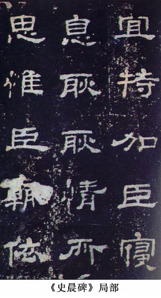
《曹全碑》，全稱《漢郃陽令曹全碑》。東漢靈帝中平二年刻（公元１８５年），現存西安碑林。清張廷濟評：“貌如羅綺嬋娟，神實銅柯石幹。”清楊守敬《平碑記》引孺初說：“分書之有《曹全》，猶真行之有趙董。”《曹全碑》以橫為主筆，點劃嚴謹而飄逸，藏露相濟，方圓並用，結構註重疏密對比，雖嚴整而外勢極綿長，如長袖舞筵、仙鶴遠舉，是漢隸的典範之作。
《張遷碑》，全稱《漢谷城長蕩陰令張遷表記》。東漢中平三年（公元１８６年）刻。明人王世貞《藝苑卮言》評此碑：“典雅饒古趣，終非永嘉以後所能及也。”此碑刻工較粗，但反而因此而獲得奇特的姿致：筆畫方整厚重、刀味森森、斬釘截鐵，顯得極為古樸剛強；結構時出別體，而或橫或方，敦穆方嚴，飽滿厚重，與《曹全》的秀潔恰成陽剛與陰柔兩種風格的對照。
２、磚刻
東漢還有一類刻契文字，即磚刻，主要又是墓磚。大多是長方形，內容主要記錄磚的數量、制磚時間等，有的則刻有古代文獻。刻制方法一般分為有模印、幹刻和濕刻三類。
目前發現的東漢磚刻比較重要的有：洛陽、偃師出土的刑徒墓磚和安徽亳縣出土的曹氏墓磚。
（１）洛陽、偃師刑徒墓磚１９５６年和１９６２年出土，後者發掘出５２２座刑徒墓，墓磚８２０餘塊，其中刻有刑徒死亡日期的共２２９塊，始自永元十五年（公元１０３年），終於延光四年（公元１２５年）。由於只是死亡刑徒有關事件的簡單記錄，書寫、刻契都比較草率，但別有一種揮灑自由的氣質，有些甚至有草書的意味。
（２）曹氏墓磚出土於兩座墓中，一為１９７３年在安徽亳縣董園村發掘的一座漢墓，計字磚２３８塊，畫像磚３塊，有桓帝延熹七年（公元１６４年）字樣。一為１９７６年至１９７７年在該縣元寶坑村發掘的一座漢墓，計字磚１４０塊、畫像磚６塊，有靈帝建寧三年（公元１７０年）紀年。曹氏墓磚磚文作於同時期同地點，卻呈現了各種不同的書體和風格。文字是在磚坯上直接刻寫的，有隸書、草書和篆書，筆劃運行自如，總體上比較率意。
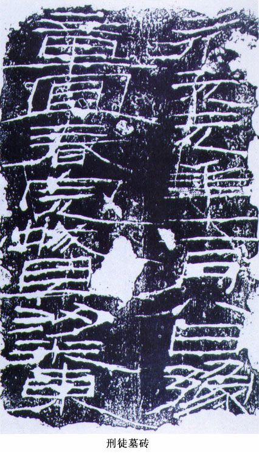
３、簡牘
東漢簡牘近年發現漸多，從內容上看，有經籍、官方詔書、屯戍文書等。官方詔書和經籍書寫工整、法度謹飭，其成熟程度不下於碑刻隸書。屯戍文書則自由隨意、自然、率真、活潑生動。其中著名的有：
（１）甘肅《武威簡牘》
１９５９年在甘肅省武威縣的磨子嘴後漢墓中出土４６９件竹木簡。１９７２年在武威縣旱灘坡後漢早期墓中出土簡牘９２件，其中木簡７８件，木牘１４件。《武威簡牘》多是成熟的隸書，也有章草。
（２）《甘谷漢簡》
１９７１年在甘肅省甘谷縣後漢墓中出土數十件，其中有永和六年（公元１４１年）簡和延熹元年（公元１５８年）簡。字體為成熟隸書。《甘谷漢簡》因為書風接近《曹全碑》而得到了很高的聲譽。
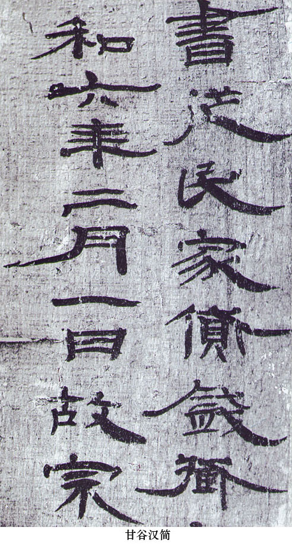
四、草書和行、楷書
１、草書是在漢代成熟的另一字體。草書分為章草、今草兩種。有文獻說張芝在東漢晚期將章草逐漸推進到今草，但現在還沒有確切的證明。許慎說“漢興有草書”，指的是章草，是隸變過程中成熟的，帶有隸書的波磔，又省減筆畫、改變筆順、增加牽絲映帶，基本可以看作是隸書的草體。章草具有隸書的淵雅靜穆與草書的靈動活潑，氣息比較古樸高遠，是極有審美價值的一種字體。
現存漢代的章草有三類作品：
第一類，簡牘，代表性作品有甘肅武威出土的《武威醫藥簡牘》，敦煌出土的《天漢三年十月牘》、《可次殄滅諸反國簡》、《入十一月食秔一斛簡》、居延肩水金關出土的《誤死馬駒冊》等。此類風格最為多樣，有的簡約古樸，有的大開大合，有的優雅從容，都極具活力。
第二類，磚刻，代表作品為《急就奇觚磚》和《公羊傳磚》等。此類則點劃凝重，結體縱橫奔突，大氣磅礴。
第三類，刻帖，代表作品張芝《秋涼帖》。此類溫文爾雅，矩度森嚴，一般認為經過了後人翻刻的改造。
楷書是中國書法史上最後定型的字體，行書一般被認為是它的快寫體。但實際上它們是一母同胞，行書可能還早於楷書。它們的一些形式因素在隸變時已經出現，但直到東漢後期才逐漸凝聚成一種字體。
東漢永壽二年（公元１５６年）陶瓶題字、熹平元年（公元１７２年）陶瓶題字、光和年陶瓶題字、永元四年陶瓶題字，尤其是寶雞市鏟車廠１號墓出土的無紀年陶瓶題字，已有相當明顯的行書和楷書意味，標誌著楷書、行書作為字體正式開始登上歷史的舞臺。
五、兩漢書法家
兩漢以來，社會對於書法的重視又超過了秦代，特別是漢末以後。《後漢書·宗室傳》記載：“（劉睦）……善史書，當世以為楷則，及寢病，明帝使驛馬令作草書尺牘十首。”衛恒《四體書勢》記載：“靈帝好書，時多能者，而師宜官為最，大則一字徑丈，小則方寸千言。自矜其能，或時不持錢詣酒家飲，因書其壁，顧觀者以酬酒值，計錢足而滅之。”又記曹操喜愛梁鵠書法，“懸著帳中，及以釘壁玩之”。這些情況，表明人們進一步認識到書法不僅有實用價值，而且富於審美價值，表明人們開始更加主動地欣賞、追求和研究書法的美，預示著書法藝術的發展將進入一個更高的階段。
史書記載的漢代書法名家有：曹喜、杜度、王次仲、崔瑗、崔寔、張芝、蔡邕、師宜官、劉德昇、梁鵠。
曹喜（生卒不詳），字仲則，扶風平陵（今陜西鹹陽西北）人。章帝建初中（公元７０年～８３年）為秘書郎。能篆隸，尤長於篆書。
杜度（生卒不詳），原名操，字伯度，京兆杜陵（今陜西西安市）人。章帝（公元７５年～８８年）時為齊相。擅長草書。衛恒《四體書勢》說他“殺字甚安，而書體微瘦”。文獻記載，漢章帝特許他以草書來寫奏章。崔瑗、崔寔父子皆受其影響。與崔瑗合稱為“崔杜”。張懷瓘《書斷》列其章草入“神品”。
崔瑗（公元７８年～１４３年），字子玉，涿郡安平（今河北）人。曾任濟北相。擅長草書和小篆。《書斷》說其書“點劃之間，莫不調暢”，“章草入神，小篆入妙”。南齊王僧虔《論書》說“崔瑗筆勢甚快，而結字小疏”。書跡有收入宋《淳化閣帖》中的《賢女帖》，已非真品。其子崔寔，字子真，亦擅章草，有父風。
王次仲（生卒不詳），關於他的情況，歷史上說法很多，但都沒有確實的依據。
張芝（生卒不詳），字伯英，敦煌酒泉（今甘肅酒泉）人。學書於崔、杜，極為刻苦，《四體書勢》說他“家之衣帛，必先書而後練，臨池學書，池水盡墨”。最擅草書，後人譽為“草聖”。傳世作品有刻入宋《淳化閣帖》中的《冠軍帖》、《終年帖》、《今欲歸帖》、《二月八日帖》、《秋涼帖》等。其中只有《秋涼帖》較可靠。其弟張昶，字文舒，也擅長草書，與張芝相似，後人以為筋骨不及，而妍華繼之，譽為“亞聖”。
蔡邕（公元１３２年～１９２年），字伯喈，陳留圉（今河南杞縣南）人，漢獻帝時為左中郎將，世稱“蔡中郎”。擅長篆、隸，創造“飛白書”。梁蕭衍說他書法“骨氣洞達，爽爽如有神”。張懷瓘《書斷》說：“八分書則伯喈勝，出世獨立，誰敢比肩。又創造飛白，妙有絕倫，尤得八分之精微，體法百變，窮靈盡妙，獨步古今，篆隸絕世，中歲之跡，筆力未精，及其暮年，方窮其妙，動合神功。”蔡邕是《熹平石經》的主持人，但是否親自參加書寫，則不得而知。後人曾附會《劉熊碑》、《夏承碑》等名碑出於其手，皆未足徵信。
師宜官（生卒不詳），南陽（今河南）人，約生活在靈帝時期。擅長隸書，靈帝徵集天下工書者數百人於鴻都門，師宜官最優（《書斷》）。後為袁術將。
劉德昇（生卒不詳），字君嗣，潁川（今河南禹縣）人，約生活在桓帝、靈帝時期。擅長行書，為鍾繇、胡昭所師。
梁鵠（生卒不詳），字孟皇，安定郡烏石縣（今甘肅平涼西北）人，約生活在漢末至魏時。學書於師宜官，擅長隸書，靈帝時官至選部尚書，後奔劉表，曹操破荊州，招為軍假司馬。曹操認為其書勝於師宜官，宮殿題署，多命為之，又常以其書懸帳中欣賞，為書史佳話。
此外，在漢代一些名跡上，也保留了一些書家的名字，唯其生平功業已不可考，如《西狹頌》作者仇靖、《郙閣頌》作者仇拂、《武斑碑》作者紀伯元、《衡方碑》作者朱登等。這些書家也是應該被歷史所記錄的。
|
從公元２２０年魏文帝曹丕稱帝，至公元４２０年，史稱魏晉時期。這是中國歷史上繼春秋戰國後又一個分裂割據的時代。東漢統治的崩潰，使固有的政治、經濟、文化觀念和制度遭到了破壞，面臨著重建。一方面，以老子、莊周道家思想為基礎的玄學，一度取代讖緯經學成為社會的主流思想，並逐漸與佛教相互融合會通；另一方面，儒學由於其政治學說的現實意義，也並沒有完全失去其地位和影響力。少數民族入主中原，帶來了新的觀念、習慣，雖與漢族文化有沖突，同時兩者也必然要有所互補，有所融會。這一切，使得中華文化再一次進入活躍、會通和拓展的階段。書法也面對著許多挑戰和機遇。
從曹魏開始，對文學藝術的關註進入了一個新階段，“惟才是舉”等選人制度的實施，使“才能”有可能越過道德而成為人們的首要追求，其中就包含文學藝術，如原來被視作小道的文學，被曹丕譽為“經國之大業，不朽之盛事”；書法在東晉時期成為世家大族爭能鬥勝的方式之一，上層貴族大量進入這個領域。
就書法藝術來說，還有一點是很重要的，即紙的應用至此已經普及，為書法家的揮運提供了最為根本的保障。 一、三國 馬宗霍先生《書林藻鑒》這樣描述三國書法的意義：“三國者，亦書體上一大轉關也。……又書派上兩大導源也。”其具體意見容或可以商量，但對三國書法的轉折意義的揭示則是極有見地的。我們說它的主要發展特征是過渡性，表現在：一，從有關制度來說，三國所制定的許多制度，是後來書法發展的重要影響因素。二，從字體演變來說，楷、行的發展，三國是中間時代。三，從書家的狀況看，三國時代的許多書家實際上成長於漢末，而三國時代成長起來的書家，卻有許多進入了西晉，因而前後傳承的特點非常突出。
魏的書法發展比較正常，這與武帝曹操的喜愛有關，他周圍聚集了鍾繇、梁鵠、韋誕、邯鄲淳、衛覬等一批書家。更重要的是，建安十年他還發布了一個禁碑令，雖然扼制了隸書的應用空間，但同時卻可以說為楷、行書的發展提供了機遇。這一制度在東晉時得到重申，為行書發達起了極大的作用。鍾繇在楷書領域的開創性貢獻，為後來二王父子奠定了堅實的基礎。蜀國默默無聞；而吳國則在草書、楷書和篆隸方面都有可觀，尤其幾塊重要的碑刻已是楷書的前驅。 主要集中在魏國。有名的碑刻是：《上尊號奏》、《受禪表》、《孔羨碑》、《曹真碑》、《範式碑》、《王基碑》、《魏三體石經》等。一個共同特點是，出現了非常明顯而且接近的程式化的作風：體勢開始走向縱長；筆劃形成較強的規律性，並出現了一些刻板的處理方式，像“蠶頭”部分經常飾以方形的角，波磔的尾部常常過於圓滿、張揚等等。這種情況，反映出在新的歷史環境中，人們對於隸書的認識正逐漸趨於淺俗、簡單，隸書的衰弱已經不可避免。啟功先生把這時期的隸書喻為蔗渣，非常形象。可以《上尊號奏》為代表。
５、行書 二、西晉 短促的西晉在文化方面有不少的貢獻，在書法方面也有很大成就。朝廷設立書博士，設弟子員，以鍾繇、胡昭二人書法為標準，教習書法。西晉產生了一批卓有成效的書法家，是章草向今草轉化，行書從萌生走向成熟的過渡期。
西晉時期的書法與三國書法有極大的相似性，具有強烈的過渡性色彩，表現在幾個方面：一，重申禁碑令，使行楷的發展趨勢得到保證；二，字體演變繼續推進，尤其是行草書；三，出現了一種在後來成為重要的書作樣式的形式，即墓誌。 在本世紀以來出土的西晉竹木簡牘和紙質墨跡中，有很值得重視的作品，如泰始五年的《詣鄯善王檢》、《泰始九年簡》、《諸佛要集經》、《三國誌殘卷》等。《詣鄯善王檢》比《朱然名刺》更接近於楷書，《泰始九年簡》接近行書；後二者介於隸、楷之間。這反映了行、楷書的穩步發展。
草書領域里，《梁思永書翰殘瓷片》等已經不是純凈的章草書，而帶有今草的特征，流暢疊宕，氣勢懾人，表明草書也在向前邁進。
衛瓘（公元２２０年～２９１年），字伯玉，河東安邑（今山西夏縣）人。曾任尚書令，是西晉重臣，官至司空、太保。八王亂起，為賈後所殺。父覬享書名於三國時期，子恒（巨山）亦善書，世稱“巨山三世”。
陸機（公元２６１年～３０３年），字士衡。吳縣華亭（今屬上海市）人。祖遜、父抗，皆東吳名將。西晉時官太子洗馬、著作郎，為成都王司馬穎所重，任平原內史、前將軍，伐司馬乂，兵敗被殺。陸機在書史上並無大名，但傳世最早的文人墨跡《平複帖》歷來歸於他的名下。因年久而筆劃起收墨跡脫落，鋒芒內斂，顯得質樸老辣，在古代章草中具有獨特的氣質；體勢縱長而微側，末筆多下展，有與下字相連的趨勢，這通常被看作向今草的過渡形態。由於這兩方面的原因，《平複帖》長期被視為國寶，享有崇高的地位。
三、東晉、十六國
東晉和十六國長達１００餘年的南北對峙，是西晉末年歷時１６年之久的八王之亂的直接結果。對於政治經濟，這是一場災難；而對於書法來說，這種歷史變遷所引起的一系列外在條件的更新，卻是一個發展機遇。 經學，通過服藥、飲酒、遊心自然、清談、乃至寄情書法等生活方式，開拓了一片與漢代讀書人很不相同的生活空間。書法在世家大族流風相扇、競能鬥勝中，表情達性的功能被強化，含蘊的內涵得到擴展，獲得了長足的進步。以王羲之、王獻之父子為代表的東晉行、草書，不僅使行書作為一種字體完全定型，而且本身在藝術上樹立了歷史的新高峰，成為一個時代精神生活的標誌，在書法史上巍然聳立，至今仍熠熠生輝。
東晉、十六國時期的作品，大體上可以分為兩類：世家大族作品和非世家大族作品。之所以這樣劃分，是因為這一時期不同階層的書法風貌有相當大的差異，甚至可以說它是這一時期書風差異的主要表現。
王家的第一代，在東晉就都享有書名。其中書名較盛的有王敦、王導、王曠、王廙。王敦的書法《淳化閣帖》卷二，有他的草書《蠟節帖》，筆勢雄健，氣勢威武。王導的書法有《省示帖》、《改朔帖》，唐竇臮《述書賦》評他的書法：“將以潤色前範，遺芳後車，風棱載蓄，高利有余。”王導在西晉末年帶《宣示表》過江，為東晉書法保留了重要的典範作品，對東晉書法發展有貢獻。王曠是王羲之的父親，宋陳思《書小史》評其“善行、隸書”。王廙是最為突出的書家，書畫雙絕，書法“謹傳鍾法”（羊欣語），“畫為明帝師，書為右軍法”（王僧虔語）。 王羲之（３０３～３６１），字逸少，瑯琊臨沂（今屬山東）人，生於西晉太安二年癸亥（３０３）。他少年時即得到從伯王敦、王導的鐘愛，被視作“佳子弟”。他曾自稱“素自無廊廟誌”，但卻肯於為國計民生作努力。因為他擔任過右軍將軍、會稽內史，後人有時也稱他為“王右軍”“王內史”。但他也有一般東晉士人的習性，比如雅好服食、寄情山水，史稱他初渡浙江，便有終焉之誌。 其行書傳世有《哀禍》、《姨母》、《遊目》、《喪亂》、《二謝》、《得示》、《何如》、《奉橘》等，均非原跡，多為唐人摹本。代表作《蘭亭序》，享有“天下第一行書”的美譽。作品寫於永和九年（３５３）暮春三月三日，當時王羲之與親友謝安、孫綽等四十二人宴集於會稽山陰之蘭亭，行修禊之禮。王羲之酒酣興濃，用繭紙鼠須筆為蘭亭集作序，凡二十八行，三百三十四字。
王羲之傳世草書作品有《十七帖》、《初月帖》、《快雪時晴帖》等。《十七帖》內容是信劄，點劃清健峻快，結體靈動多姿，富有情趣，是歷來寫草書的範本。《快雪時晴帖》麻紙墨跡，四行，２８字。清高宗以為“天下無雙，古今鮮對”，並在帖後跋“龍跳天門，虎躍鳳閣”，並將該帖及王獻之《中秋帖》、王珣《伯遠帖》視作“三希”，同置於三希堂內。 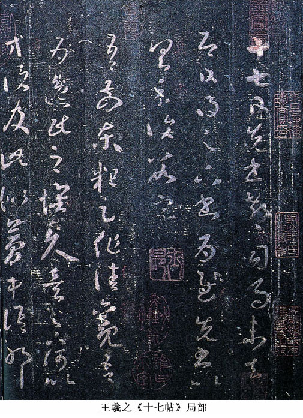
他的小楷書傳世的有《黃庭經》、《樂毅論》等。唐孫過庭《書譜》里評王羲之“寫《樂毅》則情多怫郁，書《畫贊》則意涉瑰奇，《黃庭經》則怡懌虛無，《太師箴》又縱橫爭折”，認為同樣表現了王羲之的“情性”與“哀樂”。
第三代中，王獻之不為其父所束縛，而是改其父的內擫筆法為外拓筆法，大膽創新，進一步破除古法，增強點劃之間的牽連映帶，突出節奏的變化，使行草書更具自由發揮的空間，創造了“破體”。
王獻之（３４４～３８６），字子敬，小字官奴。王羲之第七子，官至中書令，故又稱“大令”。《晉書》稱其“少有盛名，而高邁不羈，雖閑居終日，容止不怠，風流為一時之冠”。 《廿九日帖》是行楷，筆法嚴謹結實，轉折處方硬有力，結體微帶橫扁，應當是還沒有形成自家風格時的作品。但末尾四字的草法，體勢舒展大方，已能見出其氣質。 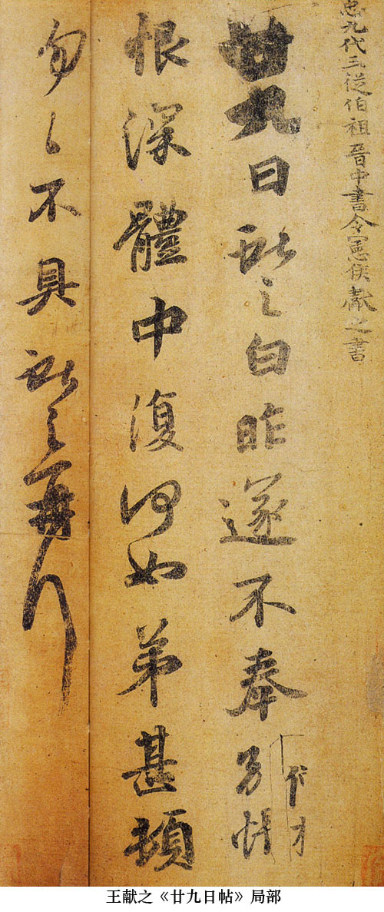 王獻之的行草作品，最有名的是《鴨頭丸帖》和《中秋帖》等。《中秋帖》是米芾臨本，可以不論。《鴨頭丸》，絹本，共兩行，十五字，筆致稍枯，然不失潤澤，“鴨頭丸故不佳”六字成一段，“明當必集當與君相見”九字又成一段，筆勢酣暢，圓轉生動，痛快淋漓，行筆疾徐有度，筆斷意連，流貫而下，紙短意長，可見書寫時略無滯礙的狀態，非常充分地展現了王獻之行草的獨特風格。
王獻之的楷書流傳後世的，僅有小楷《洛神賦》。白麻箋，南宋賈似道先後得二紙共十三行，摹刻於水蒼色端石上，以其石碧似玉為喻，稱《玉版十三行》。鍾繇小楷，雖然號稱“正書之祖”，但留有隸意；王羲之小楷，完善楷法，體勢端謹，法度嚴密。而《玉版十三行》則點劃圓潤，字勢開張，有流光溢彩、逸致翩翩、飄然遠舉之致，遠觀如鶴舞九霄，近看如逸士清遊，無一絲塵俗之氣，令人神清目暢，與其行草一樣，富於風流瀟灑的氣質。
這一代中其他人物如王徽之、王ç、王珣等，在當時也都有影響，其中王珣由於《伯遠帖》原跡意外流傳後世，並在乾隆時與王羲之《快雪時晴帖》、王獻之《中秋帖》（米芾臨本）並列稱為“三希”，而形成了極大影響。即使在東晉以後，這個家族雖然逐漸降低了地位和影響，但書法活動仍然極為活躍，出了不少名家。 （２）庾氏家族中，有庾翼、庾亮、庾冰、庾懌。庾翼的書名一度在王羲之之上，甚至因為與羲之爭勝而有“家雞野鶩”之語，直到後來看見羲之寫給其兄庾亮的草書信劄，才信服王羲之可追張芝。張懷瓘《書斷》雲：“庾翼字稚恭，潁川鄢陵人。明穆皇後弟，安西將軍、荊州刺史。善草、隸書，名亞右軍。” （３）謝氏家族中，有謝安、謝尚、謝萬。謝安，字安石，年四十出仕，為一代治國重臣，名聲亦自不菲。王僧虔《論書》曰“謝安亦入能流，殊亦自重，乃為子敬書嵇中散詩。得子敬書，有時裂作校紙。”他與王獻之之間關於羲、獻孰勝的討論在書法史上尤有影響。 （４）郗氏家族後起，也出現了幾位有影響的人物，如郗愔、郗曇，王羲之早年書法不及郗愔（虞龢《論書表》）。郗家書法，以郗愔為最。他的思想以道為主，致力於玄學、書法、優遊。善於章草，代表作《至慶帖》。
（５）衛氏家族自西晉以來就人才輩出，至此雖然稍殺，也非無人，最重要的人物是衛夫人鑠，為汝陰太守李矩妻，她“規矩鍾公”（張懷瓘語），繼承鍾繇書風，是王羲之的啟蒙老師，對於書聖的成長有重要的作用。
這些家族都是當時的上層貴族，有著優厚的物質生活條件，也能夠接受高層次的教育，因而對於書法來講，是一支高素質的隊伍。他們的積極介入，迅速地提升了書法的社會地位，當北朝還把書法視作傭僕之役時，書法在他們的眼里已經是一種重要的精神生活方式，可以展示他們獨特的胸襟，寄寓他們的喜怒哀樂，傳達他們對於人生自然社會的種種感悟。這種態度，對於中國書法的發展是有著積極的促進意義的，由此開始，書法真正成為中國文人的一種不能須臾或忘的精神活動。 東晉繼續禁碑，正式碑刻極少，著名的《爨寶子碑》，出於雲南邊地，處於似楷似隸之間，是少數民族的一件傑作；在東晉統治的核心地區，目前所見主要是王謝墓誌，材質多為磚，或許不是非常正式的，如《王興之夫婦墓誌》、《謝鯤墓誌》、《顏謙婦劉氏墓誌》、《王閩之墓誌》、《夏金虎墓誌》、《謝琰及妻王氏墓誌》等。這些作品與世家大族書法有很大的不同，方整樸拙，橫劃尾部還往往有向上挑的意圖，保持了較濃厚的隸書特點。王謝墓誌的出土及它們的這些特點，引起了研究者的關註。從清代起就已經產生的關於《蘭亭》的真實性的懷疑，再次被提出，從而在本世紀中期掀起了一場聲勢浩大的“《蘭亭》論辯”，至今仍然沒有得出一致的意見。
十六國的碑刻則相對多一些，著名的有前秦《廣武將軍碑》、《鄭太尉祠碑》，後秦《呂憲墓表》，北涼《沮渠安周造象碑》等。字體大多在隸、楷之間，風格樸茂古拙。其中《廣武將軍碑》筆劃渾樸，結體生辣拙厚，尤其享有較高聲譽。
墨跡則主要是十六國地區作品，有：前涼《李柏文書》、前秦《譬喻經》、西涼《十誦比丘戒本經》、北涼《沮渠封戴贈官木表》、後梁《維摩經卷》、西涼《秀才對策文》和《妙法蓮花經》等。《李柏文書》最為引人註目，它同王羲之早年的《姨母帖》有許多相似之處，保存了行、楷的發展軌跡，對於考察文字的演變和書風的變化都有極高的參考價值。其他幾件作品，多介於隸、楷之間，也是文字演變的重要資料，同時由於隸、楷的結合極有特點，在書法領域里也是別具特色的作品。
|
| 回首頁 上一頁 下一頁 |
自西晉滅亡之後，中國的北方出現五胡十六國的混戰局面，拓跋氏統一北方，建立魏國，後來分裂而為東魏、西魏、北齊、北周，這是所謂北朝。
北魏開國之初相當長一段時間，對漢文化的接受並不太重視，直到魏孝文帝遷都洛陽，才大力提倡漢文化和崇信佛教，自漢代傳入我國的佛教漸趨興盛，造塔和造像之風盛行。同時，碑刻作為墓葬的組成部分，得以重興；墓誌也開始大量出現。這些變化，為書法藝術的發展提供了廣闊的天地。
晉室南遷至滅亡，從公元３１７年至４２０年，歷１０４年，後為宋、齊、梁、陳四朝所代。這是所謂南朝。南朝繼承東晉的風氣，上至帝王，下至士庶都非常喜好書法。但“南朝禁碑，至齊未馳”，因此碑版寥落稀少，書法作品傳世的，多以尺牘、書劄等墨跡為主。
南北朝時代對峙分裂的局面，造成政治、經濟、文化、地域、習俗等方面發展的不同，書法也不例外。南北書風的差異，表現在許多方面。
其一，書家群體的不同。南朝書家多是上層貴族人士，而北朝書家則多為無名人物，這一點，通過唐朝竇臮《述書賦》中所集雙方人物數量就可以看出：南朝共８２人，北朝則只有１人（劉ç），雖然現在發現的書跡中又出現了一些重要人物如鄭道昭等，在數量上還是南朝占優。當然，應當說明，竇氏所依據的主要是墨跡，而北朝書家在這一方面的活動相對不那麽突出。
其二，書跡形式的不同。南朝以尺牘為典型，北朝則以石刻為大宗。前者是東晉流風的延續，後者則遙接漢代傳統。這兩點，共同反映出南北雙方對於書法的功能、意義、價值的認識是有區別的：前者重視其對主體精神的展現功能，後者則重視其現實的應用性和美化作用。這種區別，也可以從顏之推《顏氏家訓》的有關論述中看出來。
第三，主要應用字體的差別。南朝繼承東晉傳統，行草是書寫時的主要字體，而北朝則主要使用正在不斷演變形質的隸楷錯變的字體。
這三方面綜合起來，形成了南北書風的整體差異：一風流妍妙，一質樸厚重；一溫婉嫵媚，一豪健雄放；都具有很高的審美價值。當然，我們這樣分析，並非將南北截然對峙起來。實際上，在北朝仍然有許多喜愛行草書法的人物，只是書跡至今沒有發現罷了；在南朝，民間或邊地的石刻的書寫風格、與北朝的也存在相當多的相同點。這表明，一定的分野固然存在，但當外部條件類似時，這種分界可能就不那麽清晰了。此外，需要指出的是，在南北朝的晚期，南北之間的書風差異隨著社會的逐漸融合，也逐漸開始彌合，這一趨勢至隋代演為主流，從而使書法藝術進入一個新的階段。
一、南朝名家
南朝書法的主體與東晉相似，以貴族階層為核心，其書風也主要繼承東晉流風，愛妍薄質，尤其推崇王獻之書風，南梁時貶低獻之、褒舉鍾繇，情況才發生變化。代表性書家有：
羊欣（３７０～４４２），字敬元，泰山南城（今山東費縣）人。官至中散大夫。幼學書，得舅氏王獻之之法，兼善隸、行、草書，見重於當時，為獻之之後書名最重的書家。時諺有雲“買王得羊，不失所望”，相傳獻之書中風神較弱者，往往為羊欣所書。袁昂《古今書評》曰：“羊欣書如大家婢作夫人，雖處其位，而舉止羞澀。”著有《采古來能書人名》。傳世有《筆精帖》。
王僧虔（４２６～４８５），瑯琊臨沂（今山東臨沂）人。王羲之四代孫，王珣孫。宋時官至尚書令，入齊，轉侍中。少時即善書，宋文帝以為勝獻之。梁武帝嘗評其書“如王、謝家子弟，縱複不端正，奕奕皆有一種風流氣骨”。齊高帝蕭道成曾與僧虔賭書，問：“誰為第一？對曰：“臣書臣中第一，陛下書帝中第一。”存世《太子舍人王琰帖》，四行，３２字。體勢方扁厚樸，用筆沈穩工致，韻意蒼勁老到，恭謹而端麗。著作有《論書》、《筆意贊》等。
王僧虔之子王慈、王誌，書名雖不高，但卻有墨跡傳世。王慈（４５１～４９１），字伯寶，瑯琊人，官至冠軍將軍，東海太守。書跡有《尊體安和帖》、《汝比帖》、《柏酒帖》，皆存於唐摹《萬歲通天帖》中。書風灑脫飄逸，較小王更為放縱，值得重視。王誌字次道，累官散騎常侍，金紫光祿大夫。書作有《一日無申帖》，筆勢險峻，結體嚴謹。
蕭子雲（４８９～５４９），字景喬，南蘭陵（今江蘇常州）人。仕至國子祭酒，人稱“蕭祭酒”。工草、隸，又創小篆飛白，為世楷法，“潤色鍾門”（《述書賦》），善效鐘王而微變字體。其書深為梁武帝所重，以為能與鐘繇爭先。
智永（生卒年不詳），俗姓王，名法極，王羲之七代孫。相傳曾居永欣寺專意臨書三十年，寫真草千文八百余本。所退筆頭，埋為“筆冢”。請書者如市，門限為穿，以鐵葉裹之，號“鐵門限”。其書精熟過人，兼善諸體，以楷書草書為最佳，是“二王”書法承上啟下的人物，對於傳播二王書風功不可沒。明陶宗儀《書史會要》評智永書：“筆力縱橫，真草兼備，綽有祖風，為一時推重。”
其真草《千字文》流傳廣遠，對後世影響極大。今存真跡一本，藏於日本。筆法精嚴而不拘謹，結構端莊而不板滯，章法雖字字獨立而氣息統一，整體風格於平淡中蘊深意，典雅含蓄、自然生趣。蘇軾曾評論他的書法說：“永禪師書，骨氣深穩，體兼眾妙，精能之至，反造疏淡，如觀陶彭澤詩，初若散緩不收，反複不一，乃識其奇趣。”可謂獨具只眼。
這些書家，雖然開創性比東晉書家稍遜，但他們的存在和努力，深化了東晉以來的書法觀念，使東晉書法成為一種傳統。
二、南朝碑刻
南朝由於禁碑，碑刻數量不多，但也有一些墓誌，如《呂超墓誌》、《劉懷民墓誌》、《劉岱墓誌》等；有少量的碑刻，如《蕭憺碑》、《爨龍顏碑》；摩崖則有《瘞鶴銘》等。
《爨龍顏碑》立於劉宋大明二年（４５８），與東晉的《爨寶子碑》合稱“二爨”。爨道慶撰文。因其碑比《爨寶子碑》大，故又稱“大爨”。康有為在《廣藝舟雙輯》中評謂“若軒轅古聖，端冕垂裳”。《爨龍顏碑》已經基本刪汰了隸書的筆劃形貌，但在點劃的穿插布置上，仍留有許多隸書的意味，致使結構傾倒欹側、長短錯落，初看似極稚拙，而細細品味，卻又含有高古渾樸的妙趣。
《瘞鶴銘》，南梁天監十三年（公元５１４年）刻於丹徒焦山西麓摩崖上。今殘存八十八字。世傳為陶弘景書。其字姿態雍容安雅，如閑雲野鶴，有飄然遠舉之致。宋黃山谷譽為“大字之祖”，清劉熙載認為“其舉止歷落，氣體宏逸，令人味之不盡”。王澍雲：“其書法雖已剝蝕，然蕭疏淡遠，固是神仙之跡。……大字如小字，唯《瘞鶴銘》之如意指揮，斯足當之。”
《劉懷民墓誌》南朝宋孝武帝大明八年（４６４）立石，全稱《宋故建威將軍齊北海二郡太守笠鄉侯東陽城主劉府君墓誌銘》，山東益都出土。銘文十六行，每行十四字。《劉懷民墓誌》書風古樸厚重，結體疏朗自然。其字體是隸書到楷書的過渡。
《蕭憺碑》，南梁普通三年（５２２）立石，全稱《始興忠武王蕭憺碑》。徐勉撰文，貝義淵書。康有為評其字如“長槍大戟”。書風卓偉雄強，體勢寬博，與唐初《等慈寺碑》有相似處，可見南朝楷書已經進入了一個較高的階段。
三、北朝石刻
北朝沒有留下名家墨跡，但碑刻形式多樣，數量豐富，特色鮮明，在書法史上具有獨特地位。雖然自出現後很長時間不被重視，但從清代開始，人們重新對它進行了審視，並給予了全新的歷史定位。時至今日，它至少有兩方面的價值已經得到了歷史的肯定：一是字體演變，這些作品記錄了北朝在楷書上的探索，證明北朝楷書是唐代楷書得以輝煌的前提和基礎；二是藝術價值，這些作品所特有的陽剛豪邁、樸拙生辣，是書法美的一種重要類型。
北朝書法，文獻記載以“崔、盧”兩家最為著名。“崔”有崔悅、崔潛、崔宏、崔浩、崔簡等，“盧”有盧諶、盧邈、盧偃等。文獻還指出，“崔、盧”兩家書風基本上是繼承鐘繇、衛瓘一路，但因為無作品傳世，無法直接探尋其風格的真實情況。
北朝石刻書法統稱為“北碑”，而北碑又以北魏成就最高，故又稱作“魏碑”，康有為說：“凡魏碑，隨取一家，皆足成體。盡合諸家，則為具美。”並概括其審美價值為：“一曰魄力雄強，二曰氣象渾穆，三曰筆法跳躍，四曰筆畫俊厚，五曰意態逸，六曰精神飛動，七曰興趣酣足，八曰骨法洞達，九曰結構天成，十曰血肉豐美。”北朝刻石在楷書上作出了多方面的探索，創造了多樣的風格，在楷書發展史上，有不可代替的位置。
依照其型制、用途，這些作品可以分為五大類：造像題記、摩崖刻石、墓誌、墓碑和神廟碑等。
（１）墓碑和神廟碑。主要有：北魏的《嵩高靈廟碑》、《高慶碑》、《賈思伯碑》、《張猛龍碑》、《高貞碑》，東魏的《高盛碑》、《敬使君碑》、《李仲璇碑》，北齊的《雋修羅碑》，北周的《華嶽頌碑》等。這類作品用途相對較為莊重，刻制也比較精心，有的作品還有意追求篆隸形意，因而往往以莊嚴謹飭為特點。其尤佳者，為《張猛龍碑》。
《張猛龍碑》，北魏明孝帝正光三年（５２２）立，全稱《魏魯郡太守張府君清頌之碑》，是魏碑後期佳作之一，康有為推為“正體變態之宗”，享譽極高，甚至有“北碑之王”的美譽。現在山東曲阜孔廟中。內容為歌頌北魏魯郡太守張猛龍尊興孔學的事跡。《張猛龍碑》筆法剛健挺勁、斬釘截鐵，以方為主，如橫、直劃的方筆起筆，折處的方棱及三角形的點等；但是通篇看來，並不霸悍，而有秀麗俊爽的姿致。
（２）造像題記。內容多是為造像者記功德和替死者祈福。造像本身具有神聖性，因而造像記的文字自然也帶有一種莊重嚴謹的特色。造像題記主要集中在洛陽龍門石窟，約有造像三萬余尊，題記三千余方，其中北魏題記一千余方。康有為稱龍門造像記“皆雄峻偉茂，極意發宕，方筆之極軌也”。龍門造像記有四品、十品、二十品、三十品等名目。歷來以《龍門廿品》為最煊赫，其中堪稱巨跡者為《龍門四品》，即《始平公造像記》、《魏靈藏、薛法紹造像記》、《孫秋生造像記》、《楊大眼造像記》。這些作品多數刻制方法比較簡單，似乎常常不經過書丹而直接刻寫，故刀的意味比較濃厚，被看作“方筆”的典型，風格雄強峻厚，樸實茂密，最具陽剛之美。
《始平公造像記》，立於太和二十二年（４９８），全稱為《比丘慧成為亡父始平公造像記》，十行，每行二十字。孟達撰文，朱義章書丹。此碑用陽刻法，筆畫棱角鋒利而不尖刻，折處多用重頓，緊結厚實，結體茂密莊嚴，顯得雄峻非凡。康有為評：“遍臨諸品，終於《始平公》，極意疏蕩，骨格成，體形定，得其形熊力厚，一生無靡弱之病。”
（３）摩崖刻石。主要集中在山東境內。分別有北魏時期的《雲峰山刻石》，北齊時期的《四山刻石》及《經石峪金剛經》、《石門銘》、《水牛山文殊般若經》等。雲峰山刻石還包括太基山、天柱山、百峰山等。四山包括岡山、尖山、鐵山、葛山。
雲峰山諸刻主要出於鄭道昭父子之手，代表作《鄭文公碑》，北魏永平四年刻於山東掖縣雲峰山上，稱《下碑》，一在天柱山，稱《上碑》。內容為光州刺史鄭道昭敘其父羲之功。體勢以橫為主、寬展安和，因石面不平，故拓片顯示的用筆特點為圓勻均平，舒緩持重，整體看來安詳雅重，無一絲煙火氣。《論經書詩》北魏永平四年刻，筆法方中帶圓，骨力雄渾，結構闊大開張，氣勢高曠博大。其它還有《觀海童詩》、《東堪石室銘》等。
北齊四山刻石及《金剛經》、《文殊經》，有明顯的采用隸書形意的企圖，字型扁闊，筆劃肥厚，提按不顯，勾尾挑起，整體看來顯得從容優裕，簡凈溫和。
《石門銘》北魏正始年間刻。在陜西，王遠書，繼承漢《石門頌》的風格，筆劃飄拂，具有草情篆韻，康有為譽為“飛逸渾穆之宗”。
（４）墓誌。最主要的是出土於洛陽邙山的元氏皇族墓誌，此外著名的有《司馬景和妻墓誌》、《刁遵墓誌》、《崔敬邕墓誌》、《鞠彥雲墓誌》、《張玄墓誌》等。邙山元氏墓誌大多刻制精美，書寫水平較高，從字體上看，可以代表當時楷書所達到的成熟程度，風格以秀美娟雅為主。其他墓誌則風格多樣，有的凝重，有的超逸，都具有很高的審美審美價值。
《張玄墓誌》，又名《張黑女墓誌銘》，原石已佚，清道光年間何紹基於山東發現剪裱本，屬海內孤本，極為珍貴。拓本現藏上海博物館。書於北魏晉泰元年（５３１）。運筆中側互用，藏露皆備，輕重並舉，剛柔相濟，得圓潤之趣，與南朝楷書已有許多相似之處，而不失厚重典雅的北朝本色。結體捺畫微微上舉，平添欹側之勢，但因主要采用橫勢而寬綽，微含隸意，故仍然極其端穩平和。清何紹基評雲：“化篆分入楷，遂爾無神不妙，無妙不臻，然遒厚精古，未有可比肩《黑女》者。”
四、其它書跡
這類作品，有的寫在磚上，如高昌墓磚《如畫承及妻張氏磚誌》、《趙榮宗妻韓氏磚誌》、《徐寧妻張氏磚誌》、《令狐天恩磚誌》、《孟子磚誌》等；有的寫在木板上，如《司馬金龍墓漆書題字》；但主要的書寫材料還是紙，其中有大量是佛經，著名的有南齊《大方等集經》，梁《律序》、《出家人受菩薩戒經》，北魏《摩珂摩耶經》、《大般涅槃經》、《大智度經》、《華巖經》，西魏《菩薩處經》、《大般涅槃經》，北周《大般涅槃經》、《建章初首故稱第一》等。
這些作品，出於不同地區、不同時期，用途、制作和書寫方式也有很大差異，因而書風是極不相同的。但在不同之中也有相同之處，這就是探索性。佛經的書寫相對規範、嚴謹，但大多保留了一定的隸書意味，反映了楷書字體成長的進程；墓磚則書寫較為隨意，有天真不羈的趣味。總之，它們比較真實地反映了當時楷書在實際應用中的各種面目，對於研究楷書的成長尤有價值，在藝術上，其探索性對於尋求楷書的變化有參考價值。
隋唐是中國歷史上的又一個鼎盛時期，３００多年間，大部分時間國家安定、經濟發展，蒸蒸日上，成為當時有世界影響的東方大國。在安定統一的有利條件下，書法藝術也得到了很好的發展機遇。
機遇首先來自皇室的重視。隋煬帝雖是暴君，卻喜愛風雅，特建“妙楷臺”以貯法書，即使下江南時也不忘將它們運走。唐高祖接收了隋內府的法書名畫，又有所充實，至太宗時，更大出內府金帛購藏魏晉以來名跡，尤其是王羲之的作品。此後武則天曾設“內庭習藝館”。唐玄宗倡導八分章草，扭轉時風，掀起有唐書法的興盛局面。至晚唐，帝王猶時時提拔書法人才。
與皇室的重視密切相關的是政府的制度建設。隋代開科取士，唐代進一步完善，設有“明書（明字）”專科，同時在銓選官員時，以“身、言、書、判”為標準，其中書的要求是“楷法遒美”。唐代教育發達，在國子諸學中，列有“書學”一門，學習有關文字和書法的課程，另外規定其它各學的學生每天也須學書一幅，在弘文館等機構有時還舉行專門的學習班，由名家任教。與選官、教育相配合，國家機構中為書法人才提供了職位，中央一級有侍書學士、書學博士、書助教，在翰林院、集賢館中的官員，有些也是書法專門人才，地方一級似乎也有的設有書助教的職務；各個政府部門尤其是文教機構中，還擁有大量的從事書法活動的職員。
隋唐時代出現了兩種重要的複制古代法書的方法：摹和拓。這使得古代經典不再只是少數人的專利，而有可能走向更大的範圍，被更多的學書者所師法仿效。
在一些地區如敦煌，抄寫經文的需要，為一些人提供了接受書法教育和從事書法活動的機會，大大促進了書法的普及。
隋唐時期的文學家、畫家，與書法發生了更多的聯系，許多人身兼兩職，另一些人對書法也時常發表意見。這不僅使得書法藝術的社會關註程度有很大提高，而且得以從其他領域吸收有價值的觀念，從而充實自己的審美內涵，提高自己的文化地位。
在這樣的歷史條件下，隋唐書法形成了中國書法史上的又一個高峰。在其鼎盛時期，各體書都得到了社會重視，都出現了專門家，建立了嶄新的藝術風格，整體上呈現出富有開拓性、包容性的品格，代表性書風雄強豪邁、大氣磅礴，體現了時代精神。
我們把這一時期的書法發展劃分為四個階段：由魏晉南北朝到唐的過渡期，唐代書風的孕育期，唐代書風的鼎盛期，唐代書風的衰退期及向宋代的轉型期。
一、隋至貞觀
這一時期，一方面隨著國家的統一，在南北朝晚期已經開始的南北書風融會的進程加速了，體現出了融會性與過渡性的特點。康有為說隋代書法的情況是：“隋碑內承周、齊峻整之緒，外收梁、陳綿麗之風，故簡要清通，匯為一局，淳樸未除，精能不露。譬之駢文之有彥升、休文，詩家之有元暉、蘭成：皆薈萃六朝之美，成其風會者也。”又說：“隋碑風神疏朗，體格峻整，大開唐風。”對隋代書法的描述頗為準確。
隋代書法，主要成就表現在楷書上。有的以北魏為基礎，而更加秀美典雅，如《董美人》、《蘇孝慈》、丁道護《啟法寺碑》等，似乎糅合了南朝書風，下開歐陽詢格局；有的則謹傳南朝家法，如智永《真草千字文》，後來為虞世南所繼承；有的出於北齊、北周，如《龍藏寺》、《曹植廟碑》、《章仇氏造像》等，前者瘦健，已開褚遂良風範，後二者體勢寬博，顏真卿書風，隱然欲出。
隋朝著名的書家有丁道護、史陵、智果等。丁道護兼有北方的樸拙與南方的遒媚，他所書《啟法寺碑》與《龍藏寺》齊名，為隋碑代表作。《龍藏寺》兼收北朝的雄渾端嚴和南朝的俊美勁俏，享有“六朝集成之碑”的美譽。包世臣《藝舟雙楫》說：“隋《龍藏寺》出魏《李仲旋》、《敬顯雋》兩碑，而加純凈，左規右矩近千文，而雅健過之。書評謂右軍字勢雄強，此其庶幾。”史陵書風瘦硬奇古，用筆精到，風格獨異。智果為智永的弟子，其理論著作《心成頌》提出了十五種結字要求。
唐初書法，歷來稱“歐、虞、褚、薛”四家，實際上歐、虞皆舊人，入唐時都已是６０以上的老者，風格基本定型，歐雖稍稍吸收南朝風氣以博時君之好，但仍主要是北朝形意；虞則固守智永家法，純然東晉（尤其是小王）風流。因而兩位代表書家都可以說是隋代書風的延伸。但相對於隋代來看，這時期也有一些新的動向，例如貞觀年間太宗倡導王羲之、提拔褚遂良、以行書入碑等，雖然沒有立即在實踐上形成變化，但無疑已經開始建立屬於唐代的書風追求。
唐太宗李世民（５９６～６４９）篤好書法，自謂：“朕雖以武功定天下，終以文德綏海內。”他大力提倡王羲之的書法，親撰《晉書·王羲之傳論》，並不惜重金購買王羲之的書法墨跡。每得二王書法，不僅親自鉆研模仿，而且命宮廷書家臨摹複制，以賜重臣；又命褚遂良對二王墨跡進行鑒別；得到《蘭亭》後，更是倍加寶愛。王羲之被奉為“書聖”，與太宗的推崇有很大的關系。唐太宗首開行書入碑之風，代表作《晉祠銘》、《溫泉銘》，遒勁從容而不失流美風韻，可謂二王書風的肖子。這一做法後來被李邕所繼承並發揚光大。
歐陽詢（５５７～６４１），字信本，潭州臨湘（今湖南長沙）人。貌甚寢醜，而聰悟絕倫，博覽經史。武德五年（６２２），奉詔撰修《藝文類聚》一百卷，歷時三年完成。貞觀初，官至銀青光祿大夫、太子率更令、弘文館學士，封渤海縣男。世稱“歐陽率更”。卒於貞觀十五年，年八十五。
歐陽詢書法，文獻稱八體盡能，而以楷書為最工，影響最大，被後世稱為“歐體”。用筆險勁，結體嚴密，於端莊安雅中寓險絕峻峭之勢。唐張懷瓘評其書謂：“有龍蛇戰鬥之象、雲霧輕濃之勢。風旋電激，掀舉若神。真、行之書，雖於大令亦別成一體，森森焉若武庫矛戟，風神嚴於智永，潤色寡於虞世南。其草書叠蕩流通，視之二王，可為動色。然驚奇跳駿，不避危險，傷於清雅之致。自羊、薄以後，略無勍敵。唯永公特以訓兵精練，議欲旗鼓相當。歐以猛銳長驅，永乃閉壁固守。”傳說他早年學習書法極其勤奮，途中訪見索靖所書石碑，觀之入迷，竟坐於碑旁，細心揣摩觀賞，逗留三日，曲盡其妙而後離去。他的書法，兼有南朝書法的婉潤和北朝碑刻的遒勁，創造出自己獨特的風格面貌。
歐陽詢的楷書作品主要有《九成宮醴泉銘》、《化度寺塔銘》、《虞恭公溫彥博碑》、《皇甫誕碑》等。
《九成宮醴泉銘》建於唐貞觀六年（６３２），魏徵撰文，歐陽詢書丹，記載唐太宗在九成宮避暑時發現湧泉之事。此碑受皇帝之命而作，風格相對平和中正，一絲不茍，與世傳他所作的《八法》中所謂“四面停均，八面俱備；短長合度，粗細折中”等可相印證，可以視作楷書產生以來在結構上最為嚴密有序的作品。原石現存西安碑林，有宋拓本傳世。
《化度寺邕禪師舍利塔銘》，亦稱《化度寺塔銘》，李百藥撰文，唐貞觀五年（６３１）立石。清人劉熙載謂此碑：“筆短意長，雄健彌複深雅。評者但謂是直木曲鐵，法如介胄，有不可犯之色，未盡也。”趙孟頫稱“唐貞觀間能書者，歐陽率更為最善，而《邕禪師塔銘》又其善者也”。（郁逢慶《書畫題跋記》）可見前人對此碑的看重。
關於歐陽詢楷書的審美特點，包世臣強調其“實”，說：“指法沈實，力貫毫端，八方充實，更無假於外力。”而梁巘《評書帖》則重其“險”，說“人不能到而我到之，其力險；人不敢放而我放之，其筆險。”其實，“實”指的是周到嚴謹，“險”指的是豐富多變，兩者是矛盾的兩個方面，因而梁氏接著又說：“歐書凡險筆必力破余地，而又通體嚴重，安頓照應，不偏不支，故其險也，勁而穩。”這表明，歐陽詢對於楷書形式規律的掌握運用，已經達到了前所未有的高度。
歐陽詢亦精行書，有《蔔商帖》、《張翰帖》、《夢奠帖》等。《蔔商帖》６行，５２字，無款，現藏故宮博物院。《夢奠帖》９行，７８字。現藏遼寧歷史故宮博館。用筆特點與其楷書相似，行筆少提按，比較沈穩厚實，而結構方面，卻多取側險之勢，不像其楷書那麽善於調整照應，因而微嫌單調，風格剛健有余而靈動不足。這與其學書根基本朝、對南朝行草相對淡漠有一定關系。
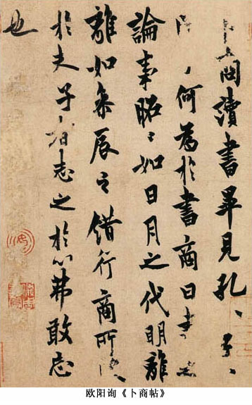
虞世南（５５８～６３８）字伯施，越州余姚（今屬浙江）人。幼年過繼叔父，博學多才，２３歲出仕，歷經陳朝、隋代，並曾為竇建德所用，武德四年（６２１）入唐，為秦王李世民文學館十八學士之一。太宗朝，歷任中舍人、弘文館學士、秘書監等職，封永興縣公，人稱“虞永興”。唐太宗極其欣賞他的德才，曰：“世南一人有出世之才，遂兼五絕，一曰德行，二曰忠實，三曰博學，四曰文辭，五曰書翰。有一於此，足為名臣，世南兼之。”是太宗學習書法的指導教師，《宣和書譜》記載：“太宗乃以書師世南。然常患‘戈’腳不工。偶作戩字，遂空其落戈，令世南足之，以示魏徵。徵曰：‘今窺聖作，惟戩字戈法逼真。’”
虞世南長於楷書、行書，師法智永，繼承王獻之書風。楷書作品有《孔子廟堂碑》、《破邪論序》，行書《汝南公主墓誌》。
《孔子廟堂碑》，唐武德九年立，虞世南撰並書。書風雍容典雅，氣秀色潤。用筆圓轉而不失剛健，結構舒展而又清雅，有從容大度的君子氣質。張紳評謂：“字畫之妙，獨能與鐘、王並駕於數千載之間，使人則之重之，又莫能及之矣。”
二、永徽至先天
從貞觀後期開始，老一代書家淡出，新一代書家崛起，高宗李治繼位以後，這種情況更其突出；同時，唐初的一些書法措施開始發揮作用，新的時代風氣也已經造就了新的時代心理。由此具有唐代特色的書風開始嶄露，每一種字體都出現了具有轉折意義的風格。這是唐代書風的孕育期。
楷書領域，褚遂良立基歐、虞，兼收齊、周以來碑刻、寫經書的一些特點，而以王羲之的風神加以潤色，筆法提按豐富、極善調鋒，結構開合騰挪、收發自如，整體看來既嚴整有度，又富於變化，既剛健又婀娜，與隋代以來的書風明顯有了不同，是一種新鮮的風格。更重要的是，在他的筆法、結構中，存在著極大的取用化生的可能性，後來的薛稷、裴守真等取其瘦勁，敬客用其中和，顏真卿化用其沈穩端重。可以說，這些書風的形式源頭都在褚，清代劉熙載認為褚是唐代的“廣大教化主”，深刻地揭示了這一歷史發展關系。
褚遂良（５９６～６５９），字登善，錢塘（今浙江杭州）人，其父與虞世南並為秦王府十八學士，他是歐、虞的晚輩。貞觀初年出仕為秘書郎，史載貞觀十二年（６３８）太宗感嘆虞世南去世、無人可與論書，魏徵舉薦他說：“褚遂良下筆遒勁，甚得王逸少體。”太宗即日詔遂良侍書。以後備受重視，歷任起居郞、諫議大夫、黃門侍郎、中書令，並成為輔佐太子的顧命大臣之一。高宗即位，曾經擔任右僕射（宰相），並受封河南縣公、郡公，所以後世稱“褚河南”。高宗欲廢無子的王皇後而立武則天，褚遂良冒死抗爭，獲罪貶為潭州都督、桂州都督，再貶為愛州刺史，死於貶所。
褚遂良現存楷書作品可分為兩個時期，前期有《伊闕佛龕碑》、《孟法師碑》，後期則以《房玄齡碑》、《雁塔聖教序》為代表。此外有傳為他所書的墨跡《大字陰符經》等作品。
《伊闋佛龕碑》與《孟法師碑》先後書於貞觀十五年和貞觀十六年，正是其藝術成長的時期。技巧大體來源於北朝楷法，存有隸意，字勢端正寬博，用筆勁健多力。清梁巘《評書帖》謂《伊闕佛龕碑》“平正剛健”。李宗瀚謂《孟法師碑》“遒麗處似虞，端勁處似歐，而運以分隸遺法”。這時的褚氏，顯然還沒有脫出六朝書法和歐陽詢的影響。
《雁塔聖教序》，或稱為《大唐三藏聖教序》、《慈恩寺聖教序》。實際上有兩塊碑石。一為《大唐三藏聖教序》，唐太宗李世民撰文，內容述三藏去西域取經及回長安後翻譯佛教經典的情況。兩石相對而立在西安大雁塔下，為褚遂良晚年傑作，標誌著唐代楷書新風格的形成，對後世影響極大。此碑一出，褚書成為一時風尚。其點畫豐富多彩，結體生動多姿，是楷書的字形，而有行書的流動與婀娜。唐張懷瓘《書斷》對褚書評曰：“少則服膺虞監，長則祖述右軍。真書甚得其媚趣，若瑤臺青鎖，窅映春林，美人嬋娟，不任羅綺。增華綽約，歐、虞謝之。”
草書領域，孫過庭《書譜》作為書法史上最重要的理論著作之一，在審美上提出“本乎天地之心”、“取會風騷之意”的理想；在實踐上，他雖然規撫大王，米芾評以為“唐草得二王法，無出其右”，但實際上又有很大的開創，尤其表現在用筆和用墨上。《書譜》的許多筆墨處理，在形式上已經與後來張旭的某些作品有相通之處。固然還不能說他直接影響了張旭等人，但至少可以說他已開風氣之先。
孫過庭（６４８～７０３），字虔禮，吳郡（今蘇州）人。在當時的影響並不大，而且仕途坎坷、英年早逝，但在後世享有很高聲譽。米芾《書史》評價說：“過庭草書書譜，甚有右軍法。作字落腳差近前而直，此乃過庭法。凡世稱右軍書有此等字，皆孫筆也。”《書譜》墨跡，紙本，三千五百余字。
行書領域，受到李世民宗王的影響，陸柬之在學王上極其努力，深入羲之堂奧，只是稍嫌平淡。陸柬之（５８５～６３８），是虞世南的外甥。自幼隨舅父學習書法，研習“二王”之法。張懷瓘《評書藥石論》說：“昔文武皇帝好書，有詔特賞虞世南，時又有歐陽詢、褚遂良、陸柬之等，或逸氣遒拔，或雅度溫良，柔和則綽約成姿，剛節則鑒絕執操，揚聲騰氣，四子而已。”有作品《文賦》傳世，主要學習王羲之，風格平和安雅，但稍乏創造性。
具有轉折性意義的作品，是宗王與行書入碑兩者共同作用下的產物——懷仁《集王聖教序》，是懷仁和尚歷經多年，摹集補綴王羲之的字匯集而成的作品，刻於鹹亨三年（６７２）。前人評價這件作品“纖微克肖”，“逸少真跡鹹萃其中”，是王羲之作品的最完備的保存，“備極八法之妙，真墨池之龍象，蘭亭之羽翼也”。而實際上，在摹集補綴、上石刊刻的過程中，懷仁對原作進行了許多處理，原作用筆的靈活多變、結構的欹側跌宕、章法的流動起伏等等，都被簡化、楷化和規範化了，王世貞解釋說“蓋集書不得不爾”。從風格上說，這件作品比王羲之原作顯得更加端莊、遒勁，但在風流妍妙、靈動跳蕩方面，則有所不足。因而從技巧和審美內含來說，它與王羲之本身特點已經有所不同。它的出現，可能帶來兩種結果：其一，它可能提供一種學王的新思路，其二，它可能使學王陷於僵化、膚淺。在盛唐時代，這兩種可能性都有顯現，從積極的一面看，應該肯定，它使唐代行書找到了一條新路，其代表人物是李邕。
篆隸領域不像其他那樣有顯著的轉折，但是也可以看到，沈寂已久的篆隸終於有了複興的跡象，《美原神泉詩碑》等作品及一些篆隸書家的出現，表明人們對篆隸的理解、喜好程度有了提高。
三、開元至貞元
《宣和書譜》記：“唐明皇……英武該通，具載《本紀》，臨軒之餘，留心翰墨。初見翰苑書體狃於
世習，銳意作章草八分，遂擺脫舊習。”開元天寶館閣聚集當時高手，如賀知章、衛包、史惟則、呂向、徐浩（集賢院）、張懷瓘（翰林院）、韓擇木、蔡有鄰（集賢院、翰林院）等。
開元、天寶及其後，篆隸書碑刻的數量驟增，湧現了不少以篆書、隸書名世的書家，如韓擇木、梁昇卿、李潮、李陽冰、史惟則、徐浩、瞿令問、袁滋等。韓擇木、李潮、蔡有鄰、史惟則號稱隸書“四大家”，其中以韓擇木成就為最高。李陽冰、瞿令問、袁滋等。韓擇木、李潮、蔡有鄰、史惟則號稱隸書“四大家”，其中以韓擇木成就為最高。李陽冰、瞿令問、袁滋則是篆書的代表，其中又以李陽冰成就為最高。更為可貴的是，這時期的篆隸頗具法度，擺脫了漢末以來隸楷混雜、篆書雕零，篆隸之法幾乎中絕的局面。盡管與漢隸及秦漢以前的篆書比較，此時隸書有故求其圓、法度過於刻板單調、篆書有軟媚或巧涉丹青等弊病，但終究算得上是一種複興。深入一層看，提倡“章草八分”還有打破宗王束縛的功能，使得開元、天寶時期及其後的書家，解放了思想，多方取徑探索，直接導致書法全面繁榮的局面。這可以說是唐代書風的鼎盛期。
李陽冰（７２１或７２２～７８５或７８７），字少溫，趙郡（今河北趙縣）人。歷官上元縣尉、縉雲縣令、當塗縣令、國子監丞、集賢院學士、將作少監、秘書少監等，世稱“李監”。工書，尤喜篆書，曾退居縉雲，窮研篆法，達１０年之久。自稱“誌在古篆，殆三十年……得篆籀之宗旨”，以此聞名於世。曾作《說文刊正》三十卷，後世不傳。李陽冰與顏真卿交好，常為顏真卿所書碑刻篆額。當時書壇，對他的篆書成就即已給了極高的贊譽，甚至推尊為“有唐字寶”，他也自詡為“（李）斯翁之後，直至小生”；宋人同樣服膺他的篆書，朱長文將他與張旭、顏真卿並列歸於神品。
李陽冰篆書的藝術特點，唐人概括為“格峻”、“力猛”、“功備”，是篆書藝術在漢代以後出現的一座高峰。他傳世的作品有《縉雲縣城隍廟記》、《拪先塋記》、《李氏三墳記》、《般若臺銘》等。多是宋人重刻，已經不能完整保存其點劃的美感，但是仍然能夠窺見他的創造性：點劃婉轉沖融，結構圓勁遒密，確實能傳古代篆法的精神。
與篆隸相先後而興盛的是草書。賀知章、張旭和懷素是這一時期草書的代表。
賀知章（６５９～７４４），字季真，又字維摩，號石窗，晚年改號“四明狂客”、“秘書外監”。會稽永興（今浙江蕭山）人。官至秘書監，史稱“賀監”。草法出於王羲之，“落筆精絕”，“行草相間，時及於怪逸，尤見真率……忽有佳處，人謂其機會與造化爭衡，非人工可到”，極邀時譽。傳世《孝經》，筆法雖稍嫌單一，但縱橫奔放，已略脫二王格轍，有狂草意味。
張旭（約６７５～７５９），字伯高，吳郡昆山（今江蘇昆山）人。他的主要政治和書法活動都在盛唐時期。他初為常熟尉，後官至左率府長史，故史稱“張長史”。張旭嗜酒，杜甫《飲中八仙歌》雲：“張旭三杯草聖傳，脫帽露頂王公前，揮毫落紙如雲煙。”性格豁達狂放，“醉後語尤顛”（高適語），故時人即已目為“張顛”。善詩文，為吳中名士。書法最為著名，據《唐書》記載：“後人論書，歐虞褚陸，皆有異論，至旭無非短者。文宗時，詔以李白歌詩、裴旻劍舞、張旭草書為三絕。”宋人朱長文也將他推尊為唐代冠冕，黃庭堅甚至認為在王羲之之後只有他和顏真卿兩人能夠達到書法的極致，可見影響之大。
張旭用心專精，影響超絕，“卓然孤立，聲被寰中，意象之奇，不能不全其古制，就王（羲之）之內彌更減省，或有百字、五十字，字所未形，雄逸氣象，是為天縱。又乘興之後，方肆其筆，或施於壁，或劄於屏，則群象自形，有若飛動。議者以為張公亦小王之再出也。”（蔡希綜《法書論》）韓愈認為他能把自己的各種感情、“有動於心”，“於草書焉發之”，又能把“天地事物之變，可喜可愕，一寓於書”，所以他的草書“變動猶鬼神，不可端倪”。（《送高閑上人草書序》）他在筆法、結構、章法上都大膽推陳出新，大大增強了草書的藝術表現力，影響極大，顏真卿、徐浩、吳道子、韓滉、崔邈、鄔彤、魏仲犀以及李陽冰均由他得法。傳世作品有草書《肚痛帖》、《古詩四首》（疑宋人所作）和楷書《郎官石柱記》等。
《肚痛帖》六行三十字，真跡不傳，宋嘉祐三年刻本，今存西安碑林，是傳世張旭草書中最為著名的一種。此帖書寫用筆爽利峻健、變化莫測，結構開合縱逸、奔騰馳驟，章法飛動起伏、跌宕搖曳。全篇酣暢淋漓，逸態橫生，開辟了草書的新境界。

懷素（７３７～？），字藏真，俗姓錢，永州零陵（今湖南零陵）人，自幼出家為僧。他“幼而事佛，經禪之暇，頗好筆翰”。陸羽的《懷素別傳》說他“嘗於故里種芭蕉萬餘株，以供揮灑。書不足，乃漆一盤書之，又漆一方版，書之再三，盤版皆穿”。宋代陶谷的《清異錄》說他在零陵植芭蕉數畝，取蕉葉代紙學書，並把庵名稱為“綠天庵”。李肇《國史補》記他“退筆堆積，埋於山下，號曰筆冢”。他性情顛逸，又好酒，故有“醉僧”、“狂僧”之目。他以草書震動當時士林，一時歌詠之作數十首，無不推崇備至。他的代表作《自敘帖》對此有所記述。
懷素曾先學王後拜鄔彤、顏真卿為師，遙接張旭衣缽。他曾說：“貧道觀夏雲多奇峰，輒常師之，夏雲因風變化，乃無常勢，又遇壁坼之路，一一自然。”唐人所記載的他的創作情態，與張旭非常相似，所以時人把他許為張旭的繼承人，有“以狂繼顛”之說。但從傳世作品看，與張旭的一派神機、不可端倪相比，已經納入規範了。
懷素傳世的書跡有《自敘帖》、《小草千字文》、《食魚帖》、《論書帖》、《聖母帖》、《苦荀帖》、《藏真帖》等數種。《自敘帖》是大草，作於唐大歷十一年（７７７）冬。縱逸奔騰的氣勢接似張旭，但用筆較為規範，以中鋒圓轉為主。而《小草千文》則用筆簡淡，結構古樸，全無大草的氣息。《藏真帖》筆法沈穩，接近顏真卿的風格。《苦筍帖》筆致流美，接近王羲之一路。可見懷素書風，並非全然依傍張旭，而有不同的取徑和變化。
行書領域內，率先取得風格上的突破的是李邕，他挾文筆之長，馳騁於碑版之間。李邕（６７８～７４７），字泰和，廣陵江都（今江蘇揚州）人。仕途頗為坎坷，歷任左拾遺、戶部員外郎及渝、海、陳等州刺史，被貶，後起為括、淄、滑等州刺史，最後於北海太守任上被杖殺。後人稱“李北海”。李邕天資聰穎，幼承家學，文采贍然，性格剛毅磊落，“詞高行直”，為一時之傑。
李邕的書法立足《集王聖教序》，巧妙化用其楷化、簡化特征，為運用於碑版而加以改造，增其點劃雄渾之致，拓開間架，聳拔右肩，使點劃如拋磚落地，間架似大力開山，開行書的一種面目，形成鮮明的風格特征。《宣和書譜》雲：“邕初學，變右軍行法，頓挫起伏，即得其妙，複乃擺脫舊習，筆力一新。”李陽冰謂之“書中仙手”，裴休見其碑雲：“觀北海書，想見其風采。”
李邕流傳下來的碑帖只有數種，影響最大的是《麓山寺碑》和《李思訓碑》。
《麓山寺碑》又名《嶽麓寺碑》，刻於開元十八年（７３０），李邕撰並書。由於碑石殘破，筆畫顯得頗為含蓄，結構穩重，取勢欹側而能緊密，有端謹之致，前人極為推崇。董其昌評價“右軍如龍，北海如象”，於此碑可見一斑。
《李思訓碑》唐開元二十八年（公元７４０年）立，今在陜西蒲城縣，全稱《唐故雲麾將軍右武衛大將軍贈秦州都督彭國公謚曰昭公李府君神道碑並序》。結字聳拔右肩，略帶欹側之姿，但或取縱勢而得挺拔，或取橫勢以見開張，都能形成一種莊重大方、嚴謹肅穆的氣概。碑的上半部比較完整，可以清晰地看出其用筆特點：筆勢斬截爽健，於舒展中有沈厚之致，既有行書的流動，又具楷法的穩健。總體氣息，以剛強俊健的陽剛之致見長，這是行書領域自二王以來未有的一種風格，是李邕創造性地在碑版上發揮《集王聖教序》的特長而開創出來的。
但是李邕畢竟沒有完全脫出王羲之的影響。而顏真卿的行書，則是別開生面，顯示出極大的創新性和豐富性，成為行書史上繼二王之後最有價值、最為巨大的新開拓。馬宗霍《書林藻鑒》說：“唐初脫晉為胎息，終屬寄人籬下，未能自立。逮顏魯公出，納古法於新意之中，生新法於古意之外，陶鑄萬象，隱括眾長，與少陵之詩、昌黎之文，皆同為能起八代之衰者，於是始卓然成為唐代之書。”就行書領域來說，這一判斷是符合歷史實際的。
顏真卿（７０９～７８５），字清臣，京兆萬年（今西安市）人，其先為瑯琊臨沂（今屬山東省）人。開元二十三年（７３４）舉進士，次年擢拔萃科，授校書郎，累遷至侍禦史，天寶十二年（７５３）出為平原太守，抵抗安祿山叛亂，聲震朝野，故世稱“顏平原”。肅宗時任刑部尚書，出為同、蒲、饒、升四州刺史。代宗時歷任戶部和吏部侍郎、尚書右丞、刑部尚書等。德宗時任太子少師、太子太保，宣慰李希烈叛軍，被縊殺。贈司徒，謚文忠。曾受封魯郡開國公，世稱“顏魯公”。以大義立朝，正色凜然，忠直剛烈，深得後世敬仰。
顏真卿家傳儒學，累世工書篆籀，其母氏又長於隸書，故自幼便受到良好的字學和書寫教育。此後師從張旭，得其筆法和草書精神，兼取時代風行的褚遂良和王羲之書風，於舊法之外，醞釀而成一種天真爛然的新風格。蒼茫雄渾，真力彌漫，大氣磅礴，剛健豪放，獨得縱橫奔逸、元氣淋漓的陽剛之美。當其率意揮灑時，詭形異狀，灑然紛逞，聯屬飛動，眩耀眼目，震撼心魄。代表作品有《祭侄文稿》、《爭座位稿》等。
《祭侄文稿》又稱《祭侄季明文稿》，作於唐肅宗乾元元年（７５８）。唐玄宗天寶十四年，安祿山、史思明從漁陽起兵發動叛亂，當時顏真卿任平原太守，他的哥哥杲卿任常山太守，同時起兵反抗。季明是杲卿的幼子，曾往來傳遞信息。後常山失守，杲卿父子殉國，安史之亂平息後，真卿只得到季明的頭骨，遂寫下這篇文稿。書寫時心情激蕩，意不在字，而楷法草情、奔赴筆下，篆韻隸勢、流入篇章，既富沈著穩健之致，又有開張健拔之姿；點劃或堅勁凝練，或縱橫奔逸，隨手揮灑，似乎都在意外，而細細體察，又盡合於妙理。通篇看去，只覺洋洋灑灑、浩無端涯，其氣勢，上可沖霄漢，下可涵九域，驚心動魄。而深入分析其技法，無一筆無來歷，又無一筆為古人所束縛，可謂觸處成妙、揮手自化，形成了一個嶄新的技巧體系，與前此的任何一家風格都不同，但又似乎完全包容在內了，正如黃庭堅所評價的那樣：“奄有魏晉隋唐以來風流氣骨。”前人推崇這件作品可與《蘭亭》比肩，號為“天下第二行書”，不為過譽。
楷書領域，同樣是顏真卿開辟了新的天地。他取褚書風格中厚重寬博的一面，增益以篆隸的質樸恢弘，不斤斤於點劃的流美華飾，獨求氣象之高古肅穆。其合作，雄偉卓壯，莊嚴端愨，雅有廟堂之氣，精神直逼漢隸周金。其陽剛豪健、巍峨莊嚴處，有如岱嶽之俯視眾峰，令人氣為之斂，諸家所不及，是楷書筆法體勢之中，最為渾穆者。其楷書在精神上恰與盛唐氣象相契，故往往與杜詩、韓文同被譽為盛唐氣象的寫照。最為著名的楷書作品有《多寶塔碑》、《大唐中興頌》、《麻姑仙壇記》、《顏氏家廟碑》、《顏勤禮碑》等。
《多寶塔感應碑》天寶十一年（７５２）立，岑勛撰文，顏真卿書，徐浩題額，字行間有烏絲欄界格。現藏西安碑林。為魯公四十四歲時所書，其時自家風格尚未完全明晰，因而帶有較多時人追求勻穩平和的特點。明孫鑛稱：“此是魯公最勻穩書，亦盡秀媚多姿，第微帶俗，正是近世掾史家鼻祖。”但其字結構重心稍稍偏上，已經初具莊嚴肅穆、大氣磅礴的特征。
《顏勤禮碑》，全稱《唐故秘書省著作郎夔州都督府長史上護軍顏君神道》，大歷十四年（７７９）立於長安。碑陽十九行，碑陰二十行，各三十八字；左側四行，行三十七字碑。石今在西安碑林。此碑為顏真卿六十歲時所作，已經完全體現出了顏體的特征。筆劃輕處細筋入骨，重處力舉千鈞；結構寬和博大，開張雄渾；章法茂密飽滿，蒼茫浩渺。整體看來，風度端嚴卓越，氣象高華雄偉，神威凜凜，不可侵犯；而仔細品味，卻又平和中正，溫文爾雅，無一絲煙火氣。可謂“望之儼然，即之也溫”，如其為人，深得儒家剛健有為而又中和淵雅的精神。這既是顏真卿書法藝術完全成熟後的傑作，又可以被看作楷書藝術最具典範價值的作品之一，具有無可替代的藝術魅力。
至於同時的徐浩等人，雖然大邀時譽，但氣魄、開創均較魯公遠遜，只可稱一時名家而已。
綜上所述，不難看出，盛唐時期如此繁榮、如此富於創造力的局面，在書法史上確實是前所未有、此後也是罕見的，它反映了唐代書法的基本品格，是開拓的、有包容性的、陽剛的，在書法史上是可以被稱作一個高峰的。從此以後，晉、唐雙峰並峙，構成了書法的一個基本傳統。
四、晚唐五代
大歷年間，隨著顏真卿、懷素等書家的逝去，唐代書法的創造力和包容性走向衰弱。篆隸重新沈寂，行書陷入“院體”的窠臼，草書在狂僧的手里空餘軀殼，惟有楷書仍有後勁，但也失去了顏真卿的那種氣魄。同時值得註意的是，人們對書法的價值進行了重新審視，對書法的意義重新作了定位，一方面給書法戴上儒家倫理道德的帽子，另一方面開始建立一種視書法為雅玩的心態，從而啟開了“尚意”書風的一角幕布，開始向新的時代轉化。
晚唐書壇最重要的書家是柳公權。柳公權（７７８～８６５），字誠懸，京兆華原（今陜西耀縣）人。以善書被穆宗召為右拾遺，充翰林侍書學士。以後歷敬、文、武、宣、懿數朝，多數時間在兼任其他職務的同時，侍書內廷，頗得皇帝的信任，文宗曾許為“鍾王複生，無以加焉”。官至太子少師，人稱“柳少師”。鹹通初以太子少傅致仕，曾受封河東縣伯、郡公。卒贈太子太師。
他的楷書，人稱柳體。他初從右軍入手，遍學當代名家書法，將歐書之緊而險、褚書之流而暢、顏書之莊而厚合於一爐，渾融無間，成就一種法度精嚴、筋骨勁健的書風，可謂集唐代楷法之大成。其風格在當時即已產生廣泛影響，“公卿大臣家碑版，不得公權手筆者，人以為不孝”，聲名及於域外，“外夷入貢，皆別署貸貝，曰：‘此購柳書。’”。宋代以後，蘇軾指出其字淵源顏真卿、範仲淹提出“顏筋柳骨”的概念，從此與顏真卿並稱“顏柳”。
但需要指出的是，柳氏對於書法的態度，與前此的書家已有不同。他恥於侍書之職，不再視書法為不朽之盛事，並以“心正則筆正”來勸諫君主，顯然更加註重的是儒家所強調的事功而非藝術，這或許意味著張旭“一寓於書”的藝術精神無可避免的消失。另一種對於書法的態度——“雅玩”——宋人的觀念，即將取代盛唐的精神。
傳世書跡有《金剛經》、《回元觀鐘樓銘》、《玄秘塔碑》、《神策軍碑》、《送梨帖跋》、《蒙詔帖》等。
《玄秘塔碑》，唐會昌元年（８４１）立石，裴休撰文，柳公權書。全稱《唐故左街僧錄內供奉一教談論引駕大德安國寺上座賜紫大達法師玄秘塔碑銘並序》。碑文計１５１２字，原石今在西安碑林。點劃輕重得體、遒勁爽健，結構內緊外放、峻峭端嚴，章法疏密合度、馳張入理，通篇看去，骨力清剛而又圓融朗暢，令人神清目健，堪稱唐楷後勁。
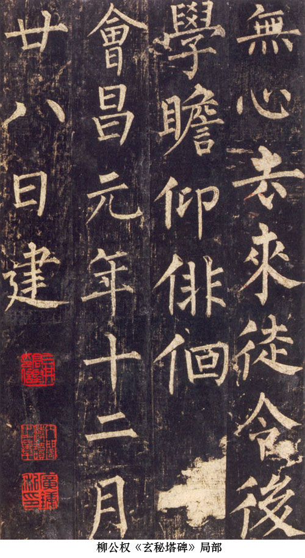
《神策軍碑》，唐武宗會昌三年（８４３）刻於長安皇宮之內，全稱《皇帝巡幸左神策軍紀聖德碑》，崔鉉撰文，柳公權書。原石已佚，存世有宋拓本之上冊，但有缺頁，今藏國家圖書館。此碑書寫時間比《玄秘塔》晚兩年，用筆稍加豐潤，結體也略加平和，故有含蓄敦穆之度，而無矜持躁脫之氣，故清人孫承澤認為：“《神策軍紀聖德碑》風神整峻，氣度溫和，是生平第一妙跡。”
晚唐五代的僧人亞棲、貫休、高閑等，以禪家我心即佛理論為利器，倡導新變、無羈束，認為書法發於心源，成於了悟，非口手所傳，因而醉心狂草，藐視固有法理的權威性，追求筆墨的自適自為。由實踐上看，這些僧人書家，成功者鮮，只足以證明晚唐書法的衰颯，還不足以見出新的發展軌跡。但從理論上看，這些主張與宋人的書法觀念已經相去不遠。
文人也在重新審視書法的意義。柳公權的兩難態度是一個典型，而在理論上進行探討的是柳宗元和劉禹錫，他們站在儒家依仁遊藝的觀念立場上，認為書法的地位當在文章之下、六博之上，不應過於沈湎。這種態度，同“不朽盛事”的大力推舉顯然有天壤之別，唐代書法至此走向衰弱，真有其必然性。但理論上的貶抑，並不等於實踐上的排斥。如柳公權一樣，劉禹錫、柳宗元對書法也抱有濃厚的興趣，他們以不計工拙的心情，或日臨古帖以自娛，或詩書往來以相酬，儼然宋人遊戲筆墨的況味。《張好好詩》的作者杜牧沒有留下關於書法的論述文字，但從這件作品表現出來的逸筆草草、落落自得的神情看，他應當也是以同樣的心態面對書法的。
五代楊凝式生於亂世，遊戲人生以求自保，書法成為其遊戲避世的一種方式。楊凝式（８７３～９５９５４），字景度，自號虛白、癸巳人、希維居士、關西老農等。華陰（今屬陜西省）人。唐昭宗時進士及第，唐後以“富有文藻，大為時輩所推”而被梁、唐、晉、漢召仕，後漢時官至太子少師，後人稱“楊少師”。常裝瘋佯狂，以逃避政治，人稱“楊風子”。他能自由地出入於二王、魯公之間，是由唐入宋的書風轉折。黃庭堅評：“俗書喜作蘭亭面，欲換凡骨無金丹，誰知洛下楊瘋子，下筆卻到烏絲欄。”
他經常在洛陽寺觀宮殿的粉壁之上揮灑書寫，因而保存下來的紙本墨跡較少，只有行楷書《韭花帖》、行書《盧鴻草堂十誌圖跋》、行草書《夏熱帖》和草書《神仙起居法》等。《韭花》近王羲之行楷、《圖跋》近顏真卿行書、《夏熱》草書狂放、《神仙起居法》近於二王小草，四帖風格差異極大，顯然是任性所適、隨手點染的結果，當他這樣恣情揮灑於紙上或洛陽宮殿的墻壁上時，我們不難聯想到宋人式書寫的身影。
《韭花帖》紙本，七行六十三字。是他午睡醒來之後，腹中甚饑，得到友人送來的韭花美食以後所寫的感謝信。心情愉悅，無裝瘋賣傻的必要，所以顯現出文人的本色，行筆平和輕快而不失朗健舒暢，結構勻穩而微帶側勢、端莊而又流麗，尤其章法極有特色，字、行均極為寬松，得清和平遠之致，宛如疏星麗天，令人心神俱暢。其格調、風度，與宋人所倡導的適意的觀念，非常契合，可謂得風氣之先導，所以深受宋人的推重。

總之，晚唐五代的書法，由盛唐的立場看，是毫無疑問的衰退，而由歷史的演進看，卻可以說是一種轉型。在各種因素的共同作用下，以適意、獨造為基本追求的“尚意”書風，在晚唐五代已經露出了身影。
宋代是中國文化的又一個輝煌的時期。鄧廣銘先生分析宋代學術思想時指出，由於唐代釋道兩家的教義學說盛行於世，聲勢淩駕於儒家之上，這使唐代後期以後的知識分子萌生了重新恢複儒家獨尊地位的意識。而在付諸實踐時，卻產生了排抵、交鬥和融匯，從而形成了宋學。從中央的文化政策上，沒有重複秦皇漢武的文化專制主義，對儒道釋三家無所輕重於其間，對思想、學術、藝術領域的各個流派，也一概采取兼容並包的態度。這一政策，對當時學士士大夫們的思想的相對解放起了很好的作用。因而，宋代文化不僅超越了前代，而且為元、明所不及。
宋代進一步完善了科舉，在政治制度上確立了文人集團的核心地位。這一政治角色的變化，影響了文人心理。一方面，肩負政治責任，使文人的政治、道德、倫理意識大大加強，在藝術領域內同樣如此；另一方面，政治壓力的重負，又使文人極需尋求心靈解脫的棲息地，因而各種文藝形式得到了極大重視，並適應他們的需求而有較大的變化。具體到書法領域，一方面，文人們註意強調政治、道德、倫理觀念在書法中的表現和意義，使書法也成為“載道”的一種工具；另一方面，他們又視書法為適意的雅玩活動，弱化對書法技巧形式的斤斤計較（“不計工拙”），而追求書法在表現個人情趣上的特有功能，從而將書法引向一個個人性色彩較為濃重的空間，形成所謂“尚意”書風，開書法藝術的新局面。
宋代書法得到了皇家更多的重視。宋太宗淳化三年刊刻的《淳化閣帖》，在法帖傳播方式上是巨大的進步，使原本深藏內府的許多巨跡，得以化身千百，流入尋常百姓家，從而有效地解決了範本供不應求的矛盾。《閣帖》所收，大多為文人較為常用的行、草和小楷墨跡，而非篆、隸、楷書碑刻，加上宋以後印刷的興起、碑刻風氣的衰弱，行、草書形式豐富、變化空間大，尤其適合個人情趣的發揮，種種因素綜合起來，導致了篆、隸、楷書在一定程度上的沈寂和行、草、小楷的流行，形成宋代書法活動的突出特色。
至於遼金兩國，以武力立國，文化上雖沒有特別突出的建樹，但受到中原地區文化的影響，有時也有可觀，尤其是金。
宋代書法的發展，大體可以分為三個階段：北宋前期、北宋中後期和南宋。
一、北宋前期
北宋前期，國勢初平，尚無暇顧及於藝事，兼以文人初得大用，心氣正高，更無意規規固守於這種雕蟲小技，因而書法發展，幾乎是五代局面的自然延續，將近百年之間，竟沒有大的起色，也幾乎沒有特別重要的書家出現，以致於歐陽修對此極為感慨：“今士大夫，務以遠自高，忽書為不足學，往往僅能執筆，而間有以書自名者，世亦不甚知為貴也！”宋初名家，大多是五代遺民，如徐鉉來自南唐，王著、句中正、李建中來自後蜀。
徐鉉（９１７～９９２），字鼎臣，廣陵（今江蘇揚州）人。在南唐官吏部尚書，入宋歷任給事中、散騎常侍，後世有稱“徐騎省”。擅屬文，精小學，有《騎省集》。書法上擅長小篆，被認為能傳李斯、李陽冰之學。朱長文《續書斷》說：“自陽冰之後，篆書中絕，而騎省於危亂之間，能存其法，……初雖患骨力歉陽冰，然亦精熟奇絕，點畫皆有法。”傳世有《重摹秦嶧山刻石》（９９３年），由其弟子鄭文寶上石刊刻，今存西安碑林。其弟徐鍇亦工篆法篆學，人稱兄弟二人為“二徐”。
王著，字知微，自稱王羲之後人，由蜀入宋，自薦於宋太宗，獲任翰林侍書。其功勞主要在於主持《閣帖》的編訂、刊刻，而由於他並不精通，造成《閣帖》頗多失誤，因而後來人對他也是毀譽參半。
李建中是宋初書家中影響最大的一位。李建中（９４５～１０１３），字得中，祖籍京兆（今陜西長安）。９８３年進士，歷任著作佐郎、太常博士等職，為人沖退，淡於仕進，曾三次請求留任西京（洛陽）禦史臺，故人稱“李西臺”。長於道學，曾參修《道藏》。
他對書法十分熱衷，自稱“平生有書癖”，特別留心楊凝式的題壁書法，“一回入寺一回看”（李建中《題洛陽華嚴院楊少師書壁後》）。文獻說他善於草、隸、分、篆，但傳世最有影響的則是行書，書跡有《土母帖》、《同年帖》等。歐陽修曾謂其與楊凝式“二人筆法不同，而書名為一世之絕”。其書大要出於二王及顏，是晚唐常見的格局，用筆不事張揚，結構沈著穩健，墨色蒼古凝重，風神含蓄內斂，有老儒氣概，但器宇稍嫌狹小，個性略有未足，難愜人望，尤其不足以滿足漸漸活躍的新朝文人的心意，因而後來遭到了激烈的批評，大多以為他的書法猶有五代衰颯之氣。
顯然，上述這些書家，是不足以給北宋書法帶來振興局面的。
比這些書家稍後的，有生長於宋代的李宗諤等人，由於主文或社會地位的關系，曾經有過較大的影響，但實際書法造詣甚至還不及李建中等遺民書家。
二、北宋中後期
北宋書法發展的轉機，來自於歐陽修及他身邊的一群文人的共同努力。歐陽修首先提倡：“學書當自成一家，其模仿他人，謂之‘書奴’。”即主張書法不能專摹仿古人，應該形成自己獨特的風格。其他文人主要有石延年、蘇舜元、蘇舜欽等及稍晚一些的蔡襄，此外還有周越等。隨後崛起的蘇軾、黃庭堅和米芾，標誌著北宋書法進入了黃金時期。
歐陽修（１００７～１０７２）是這時的文壇盟主，他在理論上一方面大力推崇唐人，整理碑版法帖，撰成《集古錄》，開創了金石學，使被遺忘的古代作品重新回到人們的視野中來，另一方面倡導“學書消日”、不計工拙的書法創作觀念，開始建設新的書法藝術審美理論。此外，他還推舉蔡襄，提拔蘇軾，樹立本朝的典範。他的這一系列努力，全方位地為宋代書法的發展奠定了堅實的基礎。
石延年喜作大字，蘇舜元、舜欽兄弟好狂草書法，雖然都還不足以繼武唐人，但他們聚集在歐公周圍，組成了聲勢頗大的一個群體，對於扭轉前此士人忽書的弊病，作用是不待言的。周越與這個群體關系不大，但他的書法一度享有盛名，並影響了蔡襄、黃庭堅和米芾，對於宋代書法的轉向興盛也有不可磨滅的貢獻。
蔡襄是歐陽修竭力樹立的典型，他屢屢推舉蔡襄為本朝書壇的盟主。蔡襄雖不接受，但在當時，卻可以說是無愧的，對於宋代書法的發展來說，他是一個轉折。
蔡襄（１０１２～１０６７），字君謨，興化仙遊（今福建仙遊）人。宋仁宗天聖八年（１０３０）進士，累官至端明殿學士，世稱“蔡端明”。卒謚忠惠，故亦稱“蔡忠惠”。他性忠直，能詩，善文，尤工書。他號稱精通各體，但主要風格淵源是王羲之、虞世南和顏真卿，因此尤其以楷書、行書、草書諸體為著名。元鄭枃《衍極》評：“五代而宋，奔馳崩潰，靡底所止。蔡襄毅然獨起，可謂間世豪傑之士也。”蘇軾《東坡題跋》中說“蔡君謨書天資既高，積學深至，心手相應，變態無窮，遂為本朝第一。”蘇軾評他：“行書最勝，小楷次之，草書又次之，大字又次之，分隸小劣。”他提倡學書要以“神采為上”，“學書之要，唯取神氣為佳，若模象體勢，雖形似而無精神，乃不知書者所書耳”。這種觀念雖然是前人已經提出的，但經過蔡襄重申，對於後來蘇軾等人的尚意思想，應當是有一些作用的。
他的書法的最大特征是全面，晉唐兼修，各體皆能，其才能之全面，法度之豐足，在他之前的書家無人可比，對於沈寂不振的書壇來講，太需要這樣的書家登高一呼了。歐陽修的推舉，或許看重的正是這一點。在歐陽修、蔡襄的時代，重要的首先還不是如何建立本朝的特色，走出本朝的路數，而是首先深入傳統，汲取精華，歐公在理論上、蔡襄在實踐上，分別完成了這個任務——當然，蔡襄之能列名宋四家，與他的創作中已經體現出的輕捷靈動、灑脫自然也有關系，這已經有宋人自己的味道。
他傳世的書跡甚多，如《山居帖》、《陶生帖》、《謝賜禦書詩》、《扈從帖》、《腳氣帖》、《別已經年帖》、《萬安帖》、《晝錦堂記》等。或楷或行或草，都有自己溫潤婉暢的特色，雖然個性特征不算特別突出，但是一種娟娟清雅的氣息，與前此的宋代書家相比，還是非常醒目的。
《離都帖》，十二行，一百一十二字。現藏故宮博物院。內容寫自己離都，將渡長江南歸，行至南京而痛失長子。盡管談及的是十分悲痛的事情，但是筆法、結構仍然十分平和，是他一貫作風的自然展示。
蘇軾（１０３７～１１０１）是中國文學藝術史上少見的全才和奇才，字子瞻，號東坡居士，眉州眉山（今四川眉山）人。他工於詩、文、詞，為唐宋八大家之一，開豪放派詞風。又善畫，對文人畫的形成發揮過巨大的作用。他所處的時代，正是北宋政治革新與保守派激烈鬥爭的時期，他的觀點與王安石不同，被視為“舊黨”，但他也並不完全贊成“舊黨”的主張。因此，在激烈鬥爭的雙方中都未能很好地立足。他一生仕途坎坷，雖短期在朝擔任過禮部尚書，但更多時候則在各地擔任地方官職，甚至被貶到偏遠的海南等地擔任低級官職，最後病逝於常州。死後獲謚文忠。
蘇軾倡導“我書意造本無法，點劃信手煩推求”、“書初無意佳乃佳”的創作觀念，推崇自然本色的審美創造，以“出新意於法度之中，寄妙理於豪放之外”為最高的審美準則，掀起了“尚意”的旋風。他的書法，化生於二王、魯公及李北海等，而遺貌取神，不規行矩步，依靠傑出的依靠傑出的天份、豐富的學養和豪放的胸襟，信手揮灑，觸處成妙，氣質雍容，誠可謂“端莊雜流麗，剛健含婀娜”。即使不合法度處亦自具一種風流妍媚的風韻，姿質天成，其形質容或有憾，而神致絕不庸俗，每每令人得意外之喜，所謂“出於繩墨之外而卒與之合者”，實際是一種更高境界的“合法”，甚至是“創法”。
蘇軾執筆采用單鉤古法，因而筆法比較特別，橫多中鋒，豎多側鋒，橫輕豎重；結構得力於顏真卿、李北海，寬博橫扁，右肩聳拔，字勢欹側。整體看來，厚重樸實，而機巧暗生，後人評價像老熊當道、百獸畏服，非常傳神。如果依照唐人對於形式美的標準來衡量，他的筆法和結構過於隨意，存在不少問題；但是，按照黃庭堅的看法，其病處正是美處，猶如西施捧心，別有風韻。這是宋代尚意書風觀念作用下的必然結果。蘇軾並不追求法度的完全合理，而更註重書法能夠表現個人的情趣、態度乃至書寫時的即時情感狀態，因而他的作品，總能夠體現出一種落落自得的神情態度，令人聯想到他為人的豁達、為學的淵博乃至為文的浩渺，從而獲得更加貼近其人生境界的藝術感受。
他傳世的作品並非件件精品，但是當他的藝術才能、藝術情感都被充分調動起來時，創造的作品，便能給人以巨大的藝術震撼力。其中，最為突出的代表作是《黃州寒食詩》。
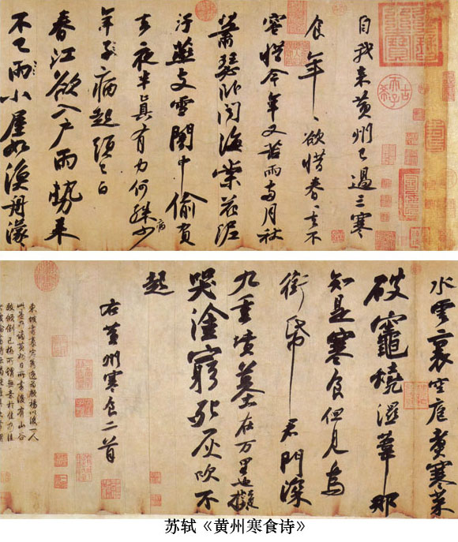
《黃州寒食詩》，是他因烏臺詩案被貶到湖北黃州、在寒食節書寫的兩首五言古詩。十七行，二百零七字。蘇軾４７歲時書。現藏臺北故宮博物院。仕途的風雲變幻與時令的淒清蕭瑟、未來的期望與現實的悲涼……種種矛盾交織在一起，使東坡的心情激蕩起伏，筆墨、書寫在這激蕩心情的左右下完全擺脫了技巧的束縛，從而成就了他所謂的“無意於佳”的書寫狀態。這反而使他原先所積累的所有藝術養分得以充分自由的發揮和整合，甚至自身的潛能也噴湧流淌，無可抑制。全篇起伏跌宕，宛如長江大河，浩浩蕩蕩，或蜿蜒盤曲、徘徊沈吟，或奔騰直下、激蕩咆哮，具有強烈的抒情性和震撼力。董其昌評：“余平生觀東坡先生真跡不下三十六卷，必以此為甲觀。”黃庭堅跋此帖雲：“此書兼魯公、楊少師、李西臺筆意，試使東坡複為之，未必及此。它日東坡或見此書，應笑我於無佛處稱尊也。”這件作品的這種氣質，與王羲之的《蘭亭序》、顏真卿《祭侄文稿》可謂如出一轍，因而後人視之為天下第三行書。
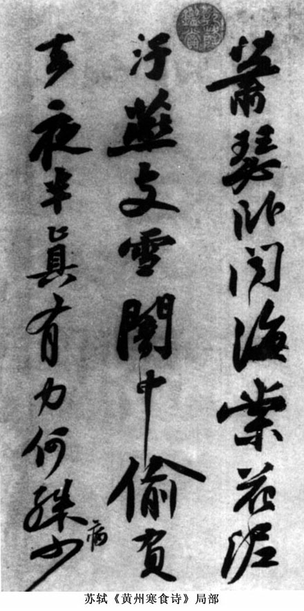
黃庭堅（１０４５～１１０５），字魯直，號山谷道人，晚號涪翁。洪州分寧（今江西修水）人。蘇東坡對他有知遇之恩，曾稱贊他的文章“超軼絕塵，獨立萬物之表，世久無此作”，由此聲震士林。他乃執弟子禮於蘇軾，與張耒、晁補之、秦觀並稱“蘇門四學士”。他的詩歌與蘇軾齊名，人稱“蘇黃”，他的詩學主張被後人所發揚，演成著名的江西詩派。他的仕途比蘇軾更加坎坷，中進士後歷任葉縣尉、國子監教授、太和知縣等，以後雖曾任職於中央，但都是偏於文教的機構，並且屢次被貶，始終未能飛黃騰達。
黃庭堅既出於蘇門，自與東坡同氣連聲，共同倡導“尚意”書風的觀念。他極力標舉“學養”、“胸襟”、“不俗”和“有韻”，“隨人作計終後人，自成一家始逼真。”為書法進一步走向文人生活的空間立下了汗馬功勞。他的楷行根源東坡，又融鑄《瘞鶴銘》，形成獨特的輻射式結構和振動筆法；而主要精力則在狂草，結構富於強烈的開合變化，用筆強調起倒擒縱的靈活運用，又有意識地引進小草的點法，豐富其筆劃，章法穿插錯落、節奏鮮明，在狂草的形式上貢獻了許多新的創造，形成獨特的個人面目。《李白憶舊遊詩卷》（現存五十二行三百四十余字。原帖已流入日本）十分集中地體現了他在狂草上的形式開拓。
米芾（１０５１～１１０７），原名黻，後改為芾，字元章，號襄陽漫士、鹿門居士、海嶽外史等，人稱“米襄陽”、“米南宮”，亦稱“米海嶽”。襄陽（今湖北襄樊）人，後徙居丹徒（今江蘇鎮江）。米芾沒有考取功名，雖因母親曾經是皇後的接生人而蒙蔭進入仕途，但官運不甚通暢，長期在地方任職，在中央機構中只短期地擔任過太常博士、書畫學博士等，曾受命擔任禮部員外郎卻因出身不高而被彈劾。
米芾性格狂放，有潔癖，好奇石，常以奇裝異服、古怪行徑驚世，故當時即被人呼為“米顛”。這種性情，也許與其出身有關，同時，也可能與他對文藝有特殊的感悟有關。他極富於文藝才華，尤其是書畫和鑒定。在畫的方面，創立米點雲山，後來影響頗廣。在書的方面，他極力反對造作、強調自然，但又絕不自是，而采用“集古字”的方法學習、領會經典，經過長期的陶冶、融匯，最終自成一家。
米芾是宋代學習古典最為深入的書家之一，他的《自敘帖》說：“余初學顏，七八歲也，字至大一幅，寫簡不成。見柳而慕緊結，乃學柳《金剛經》。久之，知出於歐，乃學歐。久之，如印版排算，乃慕褚而學最久。又慕段季轉折肥美，八面皆全。久之，覺段全繹展《蘭亭》，遂並看法帖，入晉魏平淡，棄鍾方而宗師宜官，《劉寬碑》是也。篆便愛《詛楚》、《石鼓文》。又悟竹簡以竹聿（筆）行漆，而鼎銘妙古老焉。其書壁以沈傳師為主。小字，大不取也。”又說：“人謂吾書為‘集古字’，蓋取諸長處，總而成之。既老始是成家，人見之不知以何為祖也。”
但米芾又是最能夠從古典中突破出來的書家之一。他表面看來沈湎於晉唐傳統，但同時強調“振迅天真，出於意外”，標舉“意足我自足”的創作心態，因而在經過艱苦的“集古字”之後，大力脫出羈絆，以“刷字”自許，樹立自己的風神面目。《墨莊漫錄》載：“海嶽以書學博士召對，上問本朝以書名世數人，海嶽各以其人對曰：‘蔡京不得筆，蔡卞得筆而少逸韻，蔡襄勒字，沈遼排字，黃庭堅描字，蘇軾畫字。’上複問：‘卿書如何？’對曰：‘臣書刷字。’”所謂“刷字”，首先是沈著，筆毫決不輕飄浮泛，其次是飛動，起承轉合無不流暢自如。要做到這兩點，需要對筆鋒有極其高超的駕馭調控能力，對點劃結構的造型有非常全面深入的把握。他自詡“善書者只有一筆，我獨有四面”，正是對自己這一能力有充分自信的表白。
因此，存世米書幾乎無不表現出這樣的特點：一方面，點劃和結構造型非常合理並且豐富，與古典傳統若合符節；另一方面，一切形式似乎又都出自他的創造，沒有任何拘謹、模仿或遲疑的地方。因而總體看去，只覺得隨意揮灑而無不如意，酣暢淋漓，正如蘇軾所說的“風檣陣馬，沈著痛快”。成為宋代行書影響於後世的最重要的一種風格。
《蜀素帖》（１０８８年），墨跡，行書詩六首，全幅七十一行，五百五十六字，字徑六分許，書寫在產於四川的絹素上，因此得名。現藏臺北故宮博物院。米芾當時應湖州太守林希之邀作山水之遊，心情愉快，因此通篇平和朗暢，技巧豐富而運用又十分自然隨意，沒有絲毫的鼓努作態，令人有如沐春風之感。
《苕溪詩卷》（１０８８年），墨跡，紙本，三十五行，二百九十四字。創作時間早於《蜀素》一個月左右，是米芾將赴林希之請赴湖州之前告別朋友而寫的詩稿。書寫風格與《蜀素》差異甚大，用筆雖舒展但有時顯得過於沈重，結構雖開張但有時過於欹側，故整體看來有時跳宕感太強烈，不如《蜀素》平和，似乎能夠令人感到此時米芾心情的郁悶。盡管如此，這件作品仍不失為一件傑作。
《研山銘》，墨跡，紙本。作於１１０２年。十一行，三十九字。此帖是米芾大字精品之一，近年剛從日本回歸，現藏故宮博物院。因是大字，用筆非常豪放，更加充分地體現其“刷字”的氣勢和調控筆鋒能力的高超，極有欣賞和學習價值。
與蔡、蘇、黃、米四家相先後，還出現了其他一些有一定水準的書家，共同營構了北宋中後期書壇的繁榮局面。
宋徽宗趙佶（１０８２～１１３５）治國昏庸，但對藝術，極有興趣，在書畫院組織建設、古代法書名畫的收藏整理複制方面有不少有利的措施（例如組織刊刻《大觀帖》），對於這一時期書畫的發展有極大的推動作用。他本人天資極高，藝術成就也相當突出。真書學唐代褚、薛，瘦勁而流暢，有淡雅清新之致，別具一格，世稱“瘦金書”；草書受懷素影響，筆勢流走，清逸靈動，豐韻可人。
《ç芳依翠萼詩》墨跡，絹本。大字楷書，二十行，每行二字。此卷以畫法作書，筆致勁挺秀逸，結構嚴整瀟灑，有典雅清剛之致。
《草書千字文》，墨跡，紙本。狂草，寫在一張長三丈餘的描金雲龍箋上。臨懷素書而能自化，雖然創造性不如其瘦金書，但是在宋人草書中也是比較突出的。
薛紹彭，字道祖，長安（今陜西西安）人。力追晉人風韻，雖才氣稍遜，而風規足賞。與米芾齊名，人稱“米薛”。墨跡有《欲出得告示帖》、《雜書卷》、《得米老帖》等。
蔡京（１０４７～１１２６），字元長，興化仙遊（今福建仙遊）人。蔡京書法以唐人風格特別是柳公權立身，勁健矯捷，雖魄力甚強而含蓄不足。董其昌雲：“元長書法似米南宮。”墨跡有《節夫帖》、《宮使帖》等。
三、南宋
靖康之變給了宋王朝巨大的打擊，在收複舊地還是偏安江南的兩難選擇中，南宋又維持了１００多年，但北宋中晚期書法的興盛局面卻沒有維持下去。
南宋書壇主要由三種力量組成：
第一種，是宋高宗和吳說。他們的主要努力是師法晉人。
高宗留心翰墨，曾經學習過米芾、黃庭堅，但最終歸依王羲之，尤其專精於《集王聖教序》。
吳說，字傅朋，號練塘。家富收藏，學晉條件甚好，但他最得意的所謂“遊絲書”卻不過是一種筆墨遊戲，遠不如行草書的流美輕靈。他們兩位的實踐對於北宋的“尚意”書風可以說是一種扭轉。
第二種，是在宋四家尤其是蘇、黃、米的舊途上討生活。其中，又以學蘇的為多，南渡士人中有楊時、趙令畤、汪藻、趙明誠、孫覿、沈與求、謝克家、張浚、楊無咎等人。基本上在南渡後成長起來的有嶽飛、葉衡、胡沂、韓元吉、王淮、王之望、辛棄疾等。學米的有劉燾、王升、米芾之子友仁、吳琚等。學黃的有胡安國、張九成、王十朋等。這些書家中，不乏天份極高者，如吳琚，學習米芾書法，深得精蘊，幾可亂真，歷來學米許為最高，但總體上看，即使是這樣的書家，也無法同北宋諸子相比擬，根本原因就在於他們缺乏足夠的創造精神。
第三種是稍能自振者。代表人物是陸遊、範成大、朱熹和張孝祥。陸遊喜草書，亦能行書，出於張旭、魯公、東坡與楊凝式，往往借酒揮運，有郁怒勃發之氣，頗足動人；範成大書法受米、黃影響，而不局限，有落落自得之態；朱熹行草書流暢自然，有學問氣，略無矯飾；張孝祥格在顏、米之間，厚實而能靈動。此外，張孝祥之侄張即之，融合顏、米，結構簡練端正，用筆剛斷峻健，工於寫經，也是較有造詣的一家。
四、遼金
遼代書法，作品流傳較少，一般來看，主要受晚唐書風影響較深，後來也間受北宋諸家的影響，但無特出人物。
金代接納了幾位中原舊人，如宇文虛中、王兢、蔡松年、蔡珪父子、吳激等，帶來了中原書法的風氣和傳統，到金章宗時，形成了一個小高潮。章宗本人力學宋徽宗“瘦金書”，雖然骨力不逮，已屬難能可貴。在他的治下，還出現了兩位頗有影響的書家黨懷英和趙æ。黨氏以小篆著名，又擅長隸書和楷書，在這個時代是難得的；趙æ也擅長楷書，體兼顏蘇。黨、趙之後，有王庭筠和趙秉文，主要受到北宋蘇、米的影響，又兼向唐人如顏魯公等取法參用，雖然沒有很大的開創，但在金代的文化氛圍內，已經可以說是極其難得了。
１２７１年忽必烈改國號為元，次年建都於大都（今北京），至元十六年（１２７９年）滅南宋，至惠宗至正二十八年（１３６８年）為朱元璋所滅，統治中國９８年，傳十帝。
作為第一個君臨華夏的少數民族，元朝的通統治者雖然還執行民族等級、歧視政策，但他們也深知漢文化對於鞏固統治的意義，因而漢文化的發展沒有停滯，反而有推進。書法也得到了一定程度的重視。
元滅南宋後，即將其內府圖書禮器輦運大都，並特許京官借閱，其中有王羲之《王略帖》、孫過庭《書譜》和懷素《自敘》等巨跡。元代不少皇帝如英宗、文宗、順帝等都有書名。元初功臣，如宰相耶律楚材（契丹人）及漢人翰林承旨姚樞、翰林學士王磐、國子祭酒許衡、太保劉秉忠等也都擅書，這無疑是一個很有利於書法發展的環境。
特別重要的是，為了搜羅漢族知識分子為新朝服務，程鉅夫在至正二十三年（１２８６）奉世祖之命下江南訪求“遺逸”，列趙孟頫於２４位南宋遺民之首，薦舉給皇帝，既給趙孟頫的崛起提供了機遇，也為元代文化藝術尤其是書法藝術的發展尋找了一個領路人，決定了元代書法的主流。
但並非所有華夏俊才都被吸納到了朝廷，相反，在元代，隱逸文人的數量相當可觀，其中的才俊之士，往往遊戲人生、遊戲藝術，從而實際上走了一條與主流書風大不相同的道路，形成了元代書法重要的一個側翼。
一、趙孟頫、鮮於樞及奎章閣書家
元代書法最具影響力的，是以趙孟頫為首的、以複古出新為道路的書家群體。
趙孟頫（１２５４～１３２２），字子昂，號松雪道人，又號水精宮道人、歐波等，世稱“趙松雪”。宋太祖子秦王德芳十世孫。吳興（今浙江湖州）人，後人稱“趙吳興”。幼聰慧，讀書過目成誦，為文操筆立就。他出仕後，從元世祖到元英宗，共經歷了五個皇帝，先後在濟南、浙江任職，又在中央擔任兵部侍郎、集賢直學士、翰林侍讀學士、翰林學士承旨等職，“榮際五朝，名滿四海”。卒後追封“魏國公”，謚“文敏”。所以後世又稱他為“趙集賢”、“趙承旨”、“趙文敏”、“趙魏公”等。《元史·趙孟頫傳》說：“（仁宗）以趙孟頫比唐李白、宋蘇軾子瞻。又嘗稱孟頫操履純正，博學多聞，書畫絕倫，旁通佛、老之旨，皆人所不及。”
趙孟頫以全面向古典尤其是晉唐學習的方式，在楷、行、草、隸、篆等各個領域重新建立嚴謹的法度，樹立古典風格的權威價值，從而矯正了南宋書法學時風、輕法度的巨大缺陷，使書法發展邁入一條較為健康的軌道。他自己的書法，行書深入右軍堂奧，風神雅致，瀟灑流美，楷書融唐鑄晉，既端莊樸實，又流暢婉麗，形成獨特的體勢，獲“趙體”之稱。他的書法思想、風格，不僅主宰了整個元代的書法，甚至直接影響了明代前中期書法的發展。
傳世墨跡有《膽巴碑》、《妙嚴寺記》、《六體千字文》、《玄妙觀重修三門記》、《仇鍔墓誌銘》、《歸去來兮辭》、《赤壁賦》、《洛神賦》、《蘭亭十三跋》、《汲黯傳》、《道德經》等等。
他的楷書與唐代顏真卿、柳公權、歐陽詢並稱“歐、顏、柳、趙”。小楷精絕，他曾說：“余臨王獻之《洛神賦》凡數百本，間有得意處……亦自寶之。”同時名家鮮於樞說：“子昂篆、隸、正、行、顛草俱為當代第一；小楷又為子昂諸書第一。此卷（指趙孟頫所書《過秦論》）筆力柔媚，備極楷則。”
趙孟頫的大楷主要有《膽巴碑》、《三門記》等。他吸收眾家之長，又參以李北海筆意，輔以行草筆法，因而莊重而不失流媚，嚴謹而富於生機，是大楷書的新進展。
趙孟頫的行草書數量也非常多，如《與山世源絕交書》、《丈人帖》、《赤壁賦》等等。其行書追蹤晉唐，以王羲之為宗，尤其得力於《集王聖教序》，深得其風流妍妙、清新峻健之致，歷來學王，推為第一。
然而，趙孟頫身後所獲得的評論，卻是褒貶兼有，明代的王世貞在《藝苑卮言》說得比較恰切：“自歐、虞、顏、柳、旭、素，以至蘇、黃、米、蔡，各用古法損益，自成一家。若趙承旨，則各體具有師承，不必己撰，評者有書奴之誚，則太過；然謂直接右軍，吾未之敢信也。小楷法黃庭、洛神，於精工之內，時有俗筆；碑刻出李北海，北海雖佻而勁，承旨稍厚而軟；唯於行書，極得二王筆意，然中間逗漏處，不少不堪。並觀承旨，可出宋人上，比之唐人則隔一舍。”
啟功先生在《論書絕句》中說：“趙孟頫書，承先啟後，其開元明以來風尚處，人所易見；其承前人之規範，而能賦予生氣處，則人所未多覺也。蓋晉唐人書，至宋元之後，傳習但憑石刻，學人摹擬，如為桃梗土偶寫照，舉動毫無，何論神態。試觀趙臨右軍諸帖，不難憬然悟其機趣，其自運簡劄之書，亦此類也。至於碑版之書，昔人視為難事。以其為昭示於人也，故體貴莊嚴，而字宜明晰。往往得其整齊，失在板滯。趙氏獨能運晉唐流麗之筆於擘窠大字之中，此其所以尤難及者也。……昔人論詩，病朱竹坨貪多，王漁洋愛好。吾謂趙書亦不免漁洋之病。然‘三代以下惟恐不好名’，愛好究勝於自棄也。”比較公允地說出了趙孟頫在書法史上貢獻與地位。
鮮於樞（１２５６～１３０１），字伯幾。又作伯機，號困學民，亦號直寄老人、虎林隱吏等。漁陽（今河北涿鹿）人，生於開封。曾任江南諸道行臺禦史掾、浙東都省史掾，此後一度去職隱居西湖“困學齋”，１３０２年受命任太常寺典簿，未到任而卒。世傳其人有河朔英偉之氣，豪爽仗義，而文藝極佳，詩文、散曲、音律皆所擅長，又精鑒定、富收藏。長期為官杭州，得江南文采，堪與趙孟頫爭競，可謂一時瑜亮，彼此互相都很推重。趙孟頫曾有詩寫他：“廊廟不乏才，江湖多隱淪。之子稱吏隱，築屋西湖濱。開軒弄玉琴，臨池書練裙。”
鮮於樞書學理念與趙相似，而在實踐上則偏重於唐，尤喜草書，筆力遒勁，氣勢豪縱，有北方健兒的雄強氣概。如果說趙氏以風韻勝，則鮮於樞可說是以骨力勝，論行書，鮮於樞或遜色於趙，而論草書，趙的溫文爾雅，在鮮於樞的酣暢淋漓面前，卻不得不退避三舍。綜合來看，雖然趙的聲價在鮮於樞之上，但兩人實是各有所長，可謂雙峰並峙，共同構成了元代書法複古傾向的主潮。
其作品有《透光古鏡歌》、《書韓愈進學解》、《論草書帖》、《唐人水簾洞詩帖》等。
《論草書》，其筆法主要淵源於唐代懷素、張旭等人，用筆不斤斤於點劃的精到而追求揮灑的豪放自由，故氣勢酣暢淋漓。

鄧文原（１２５８～１３２８），字善之，一字匪石，人稱素履先生。綿州（今四川綿陽）人，綿州地處巴蜀的西部，世稱“鄧巴西”。也長期生活於杭州，與趙、鮮於交往切磋，並轡齊名。故虞集說：“大德、延祐年間，稱善書者必歸巴西（文原）、漁陽（鮮於樞）、吳興（趙孟頫）。”他所擅長的行書和章草，都基本以趙的風格面目出現，只是功力稍遜，他的一些墨跡幾乎可與趙的以假亂真。墨跡有《瞻近、漢時二帖跋》、《倪寬贊跋》等。
元文宗時期，是元代書法又一個比較興旺的時期。文宗為滿足自己的書畫文玩興趣，設立了奎章閣，以虞集為侍書學士、柯九思為鑒書博士，當朝善書者，皆吸收入閣，於萬機之暇，討論法書名畫。這個機構至惠宗時改為宣文閣，又存在了一段時間才徹底取締。期間先後入閣的名家除上述二人外還有揭傒斯、歐陽玄、康里巎巎和周伯琦等。其中藝術成就最突出的是色目族人康里巎巎。
康里巎巎（１２９５～１３４５），字子山，號正齋、恕叟，又號蓬累叟。他是色目人，籍貫康里（漢代為高車國），因以為姓。卒謚文獻。子山自幼入學國子監，善文辭工書法，博學多才。兼擅行書、章草，章草古勁，氣力甚健，與趙有一定距離。又引章草入行草，用筆爽利輕捷，體勢側媚流宕。這種風格，宋蔡襄即啟其端倪，趙孟頫複興章草，也有過嘗試，但都尚未成為風氣。巎巎雖然不是這種風格的首倡者，但無疑是一個重要的推進者。代表作是《李白詩卷》。
他傳世行書的代表作品是《柳宗元梓人傳》。《梓人傳》草中兼行，字形縱長，筆法爽利，風格峻健，與趙孟頫偏於柔媚、鮮於樞偏於豪放的書風有所不同。
二、隱士書家
在民族矛盾較為尖銳的元代，數量較大的才俊之士成為了隱士。出處問題上的相似，使得他們盡管年代、性格不同，卻在審美上有相通之處，因而在書法史上，元代的隱士書家往往被看作一個獨立的群體。他們在審美上的最突出特色，就是與主流書風之間的疏離。
有代表性的書家是：吾衍、張雨、吳鎮、王冕、楊維楨、吳叡、倪瓚等。
吾衍（１２６８～１３１１），又作吾丘衍，字子行，號貞白居士等，浙江太末（今龍遊）人，隱居杭州。性格放曠，不事檢束，目眇足跛，但仍頗有風度，受到時人推重，追隨者常常有數十人。他最擅長的是篆隸和古文之學，有《三十五舉》等著作流傳，同時運用篆學之長於印章，對於篆刻的發展也有一定貢獻。後世有學者認為，是他倡導篆書、得到趙孟頫的響應，才形成了元代篆書的複興局面。
張雨（１２８３～１３５０）為道士，慕米芾為人，書法雖出於趙孟頫，但加以峻厲，又有意識調整其結構、增強其輕重變化，因而有生拙之趣。
吳鎮、王冕、倪瓚均為畫家。吳鎮（１２８０～１３５４），字仲圭，號梅花道人，以詩、書、畫、終其身，有“三絕”之譽。其書法好狂草，格調灰冷超然，代表作為《心經》。王冕主要為行楷，似從鍾王化出，清泠蕭疏。倪瓚（１３０６～１３７４）字元鎮，號雲林子，人稱“倪迂”。無錫人。其書似以歐體立身，又巧用鍾繇法，骨鯁神幽。這三人的書風，都有不食人間煙火氣象。
楊維楨（１２９６～１３７０），字廉夫，號鐵崖、鐵笛道人、東維子等。浙江諸暨人。元末曾短暫出仕，遭世亂後隱居教授生徒，直至明初。性高曠耿介、孤傲不群，與友人聚會，或戴華陽巾、披鶴氅，吹鐵笛，音聲高亢，人以為神仙中人。與陸居仁、錢惟善等交好，被稱為“三高士”。善詩，稱“鐵崖體”。書法與其為人相似，於行楷中雜入章草，得古拗健峭之氣，不取趙孟頫等人的圓潤清雅，而追求蒼茫荒率，點劃狼藉、結構欹倚，而自有一種落拓不羈、孤高特立的氣質，明代吳寬比喻為經過殘酷戰鬥後軍隊手持的“破斧缺斨”，非常形象，令觀者頓生一種凜然之感。今存書跡有《真鏡庵募緣疏》、《張氏通波阡表》、《竹西草堂記》等。
三高士中的陸居仁（？～約１３７７），字宅之，號巢松翁等，松江華亭（今上海松江）人。他也擅長書法，主要是行草，用筆流暢，而墨法喜枯，故也有一種荒疏之致；結構微有趙孟頫之意，但非常自然靈秀，絕無滯澀。整體看來，流而不滑，秀而不媚，格調頗高。
總體來看，這些書家的書風，都是個性突出、意態瑰奇，與趙孟頫、鮮於樞及奎章閣書家的相對平和穩健的風格有較大差異，形成了元代書法的另一面貌。從精神上說，他們的風格，與宋代“尚意”的訴求有相似處，同時在一定程度上可以說已經開啟明代晚期行草書風的先兆。
１３６８年朱元璋稱帝，建立大明，１３８７年平定遼東，實現統一。為穩固統治，明朝進一步加強了中央集權，同時加緊了思想控制。致使明代文化，始終處於非常緊張的沖突對立狀態，是我國思想史上鬥爭頗為酷烈的一個時期。
明代刻帖更盛，同時有帝王雅好，故書法仍以行草為主。近人馬宗霍《書林藻鑒》中有一段很精辟的概括：“有明一代，亦尚帖學，成祖好文喜書，嘗求四方善書之士以寫外制，又詔簡其尤善者於翰林寫內制。凡寫內制者，皆授中書舍人，複選舍人二十八人專習羲獻書，使黃淮領之，且出秘府所藏古名人法書，俾有暇益進所能，故於時帖學最盛。仁宣嗣徽，亦留意翰墨，仁宗則好蘭亭；宣宗則尤契草書。憲宗、孝宗、世宗皆有書跡流傳。孝宗好之尤篤，日臨百字以自課，亦征能書者使值文華供內制。神宗十餘歲即工書，每攜大令鴨頭丸帖、虞世南臨樂毅論、米芾文賦以自隨。夫上有好者，下必甚焉。明之諸帝，即並重帖學，宜士大夫之鹹究心於此也。帖學大行，故明人類能行草，雖絕不知名者，亦有可觀。簡牘之美，幾越唐宋。”
但明代行草書的社會需求與前此其他時代已經有了不同。明代建築趨於高大，同時商人階層日漸龐大，附庸風雅的願望頗高，這使得對掛軸一類作品的需求漸多，書法作品漸漸由案頭走上墻頭，書法家們籍此作出了許多探索，使傳統行草逐漸發展出一些新的技巧和風格。
明代書法的發展，大致可以分為三個時期。
明初書法，先承元朝而下，基本繼承的是元代的典型書風；成祖遷都北京以後，國勢承平，複以文章翰墨粉飾治具，培養了一批禦用書家，遂使臺閣書風興起。
明中葉，江浙一代經濟逐漸發展，文化也因之而起，成為書法的核心地區。一些文人淡於仕進，優遊文藝，逐漸成為具有一定職業化特征的書畫家，以出售書畫為生。這使其創作目的、風格追求都不可避免地發生了一些變化，“文人化”的清雅氣息逐漸有所減弱，而好異尚奇之風逐漸興起。
晚明時期，國家內部的政治、文化鬥爭日趨尖銳，從心學中衍生的個性解放思想蓬勃發展，而外來的軍事壓力也漸漸增大，這極大地影響了人們的心理，並進一步影響了文藝活動。書法領域因之也出現了一次重大的變革，狂放書風成為書法發展的主流。
一、明朝初期書法——“三宋二沈”
明初書法首先是延續元代書風，後來出現由皇室提倡的臺閣體風格。其代表人物，號稱“三宋二沈”。
三宋指宋克、宋璲、宋廣。
宋克（１３２７～１３８７），字仲溫，又字克溫，號南宮生、東吳生，長洲（今江蘇蘇州）人。性格豪俠仗義，好習武和研究兵法，為人講氣節，但因為時局混亂，終究沒有機會在政治上一展才華。書法初學趙孟頫，得到元末書家饒介的親傳，此後上追魏晉，在當時享有較高的聲譽，元末文藝大家楊維楨對他尤為賞識，自稱有所著作、必命宋克書寫。
他能寫楷書，成熟的小楷能得鍾繇意趣，不涉趙孟頫的藩籬。尤善行草，更精章草。他的章草師法皇象、索靖，用功深至，精熟峻健，較趙孟頫又有進展。他晚年臨寫的《急就章》筆勢峻健而流暢，結構精密而飄逸，波磔尤為險勁有力，很有特色。
但他最有成就的還是將狂草、章草與行草相融合的一路風格。這一風格，元代康里巎巎已開先河，但技巧還比較單薄、風格過於直白，缺少更豐富的意蘊。宋克章法古雅，功力深湛，又兼性情任俠尚氣，因此書寫時能把章草的生拗遒勁與狂草的縱橫奔逸很好地結合起來，從而獲得了奇崛恣意的氣勢，解縉評為“如鵬摶九天，須仗扶搖”，的確氣質不凡。以《杜甫壯遊詩》等為代表作。
三宋中的另外兩位書家，宋璲（１３４４～１３８０），字仲珩，浙江蒲江人，宋濂的次子。以父蔭為中書舍人，後因其兄子宋慎坐罪而受株連被處死，年僅３７歲。宋璲天性好書，據文獻記載各體都有造詣，尤其是行草和小篆，解縉評其小篆為“國朝第一”。他的行草書直承元代康里子山，後來得到元末明初書家危素的指點，於是上溯晉唐特別是王獻之，以峻放為尚，當時即博得了很高的贊譽。雖然未及完成自家風格的塑造，但是也已經初步顯示出脫離元代風格籠罩的跡象了。可惜享年不永，無法充分展示才華。
宋廣（生卒年不詳），字昌裔，號匊水外史、東海漁者等，河南南陽人，寓居華亭（今上海松江）。曾任湖北沔陽同知。宋廣善草書，《明史·文苑傳》說他的草書可比宋克，《續書史會要》說他的草書來源於唐代張旭懷素，似乎較少受到元代的影響，當是別具一格的路數，可惜他的作品傳世很少，影響有限。
總體來看，三宋中克、璲的書法是元代書風的自然延續，有一定創新性，但不顯著，還不足以與元代抗衡。但是他們對狂草的喜愛這一跡象是值得註意的。狂草在表現力特別是氣勢的展示上，有特殊的長處。這也許已經反映出明代書法的某種新動向了。
二沈指沈度、沈粲兄弟。
沈度（１３５７～１４３４），字民則，號自樂，華亭（今上海松江）人。朱元璋時因罪被貶雲南，成祖時選拔２８位中書舍人專習二王書法，他因善書而最邀上賞，金版玉冊皆由他書寫。他篆隸真行諸體皆能，被成祖譽為“我朝王羲之”，並被拔擢為翰林修撰、侍講學士，善書之名超過時輩如解縉、胡廣、梁潛等人。因此之故，其小楷成為官場中人和士子效仿的對象，遂為“臺閣體”及清代“館閣體”之濫觴。其小楷淵源於虞世南、趙孟頫等，筆致雅潔輕靈，結體內部緊密，外取縱勢，端莊而不失秀逸，雖然格調、意境沒有特出之處，但也具有文人本色的清新典雅。清代王文治說他的書法“端雅正宜書制誥”，切中肯綮。傳世作品有《敬齋箴》、《不自棄說》等。
沈度之弟沈粲（１３７９～１４５３），字民望，號簡庵。由其兄沈度舉薦而為中書舍人，後官至大理寺少卿，兄弟同以善書得寵，故有“大學士”、“小學士”的美譽。文獻稱兄弟二人不欲爭能，故度主攻楷書，而粲主攻行草，並以此名世，後人有“遒逸”之評。從其存世作品看，點劃圓而爽利，淵源似是懷素和康里巎巎，偶爾摻入一二章草，與宋克有一些相似，但無宋克的魄力，有秀氣而乏勁力。
此外，俞和、解縉、張弼、陳璧、詹景鳳等人，在這一時期也是比較有影響的書家。這些書家與三宋、二沈還有一個值得重視的共同點，即他們都比元代書家更多地涉足了大幅作品的創造，作品的行氣、章法相對都比較放得開，顯然是因為幅式的原因而在形式上開始了一些新的探索，雖然無論是技巧還是風格，都遠稱不上成熟，但是這樣的探索畢竟是可貴的。明代後期大幅行草的成功，從歷史淵源來說，是由這一時期的探索開始起步的。
二、明朝中期書法——吳門書派的書家群體
明代中期，江蘇蘇州一代出現了一批前後傳承的書家，形成了相當突出的特色，
他們中有許多人並未進入政治中心，而是在當時新興的市民階層的支持下專以書畫文章為業。由於藝術成就顯著，影響很大，甚至超越了處於政治中心的藝術家，而成為這一時期書法的主要力量，這就是“吳門書派”。由前後三代書家組成，其中前兩代處於明中期。
第一代主要有徐有貞（１４０７-１４７２，字元玉）、沈周（１４２７-１５０９，字啟南，號石田）、李應楨（１４３１-１４９３，字貞伯）、吳寬（１４３５-１５０４，字原博，號匏庵）、王鏊（１４５０～１５２４，字濟之）等，他們率先突破趙孟頫和臺閣體的束縛，或師晉唐，或法宋人，或自出機杼，對古代傳統進行了重新審視、深入吸收，形成了新的書風追求，脫出了前此書壇受元代書風籠罩的局限。其中，徐、李、吳、王仕途都比較順利，有的甚至很發達，如徐有貞官至兵部尚書兼華蓋殿大學士、封武功伯，吳寬官至禮部尚書，王鏊則是文淵閣大學士加少傅，只有沈周一人以布衣終其生。就藝術成就而言，沈、吳為高。沈學黃庭堅行書，用筆較黃庭堅柔和，結構也稍加平淡，去其拗峭，益以清雅，書卷氣甚濃。吳寬則專學蘇軾，用筆比蘇軾澀，因而雖無其沛然之氣而尚能得其厚重，格調很高。徐、李、王在實踐上的成就稍遜，但與吳門書派的第二代書家的關系極為密切，並且在藝術上見地高明，所以歷史貢獻仍然不可忽視。
第二代書家的代表是“吳門四家”，即祝允明、文徵明、王寵、陳淳。
祝允明（１４６０～１５２６），字希哲，江蘇蘇州人，著有《前聞記》、《九朝野記》、《興寧縣誌》、《懷星堂集》等。因右手拇指多生一小指，自號為枝山、生而枝指、枝指生、枝指道人、枝山樵人等。與徐貞卿、唐寅、文征明被稱為“吳中四才子”。然而一生舉業仕途都不順利，只中過舉人，到他５５歲時才得到廣東興寧知縣的職務，後遷任南京應天府通判，一年後謝病返鄉，後人稱“祝京兆”。
祝允明得外祖徐有貞、嶽父李應楨指點，父輩沈周、吳寬亦多加獎掖，書法號稱無所不學。王世貞在《藝苑卮言》中說：“京兆楷法自元常（鍾繇）、二王（王羲之、王獻之）、秘監（虞世南）、率更（歐陽詢）、河南（褚遂良）、吳興（趙孟頫），行草則大令（王獻之）、永師（智永）、河南（褚遂良）、狂素（懷素）、顛旭（張旭）、北海（李邕）、嵋山（蘇軾）、豫章（黃庭堅）、襄陽（米芾），靡不臨寫工絕。”這話或許有些誇張，但也說出了祝允明的一個特點，就是涉足廣泛，而絕不簡單受元代書風的限制。所以我們現在看他的傳世作品，各種面目蔚為大觀：小楷主要師法鍾繇，古樸簡勁；行書或出自米芾、跌宕恣肆，或淵源趙孟頫、端正妍雅；還能寫較為地道的章草書。他使得古代的各種典範風格重現於書家面前，從而徹底地突破了前此書法風格相對單一的面貌，一定程度上重振了古典傳統。但是，涉足廣泛同時也給他帶來了負面影響，那就是個人風格的定型不突出，如啟功先生《論書絕句》所說的：“祝允明出，承徐有貞、李應楨之緒，略軼（館閣體）藩籬，未成體段。”
祝允明最為成功的一體是他的狂草，出入黃庭堅，兼取張旭、懷素、章草的長處，更巧妙地融入小草，善於穿插、布點，使狂草書在點劃形態、節奏變化、布白豐富方面有了明顯拓展。這些對於長軸大幅的書寫，都很有意義。代表作《唐寅落花詩卷》、《杜詩秋興八首》等，筆走龍蛇，奇態橫生，在明代這一時期可謂獨領風騷。
文徵明（１４７０～１５５９），初名壁，字徵明，號衡山，４２歲後以字行，改字徵仲，江蘇蘇州人。他一生１０余次應試，皆未中舉，１６２３年被薦授翰林院待詔，故後人稱“文待詔”，但三年後即辭官回鄉，此後再未出仕。他為人正直，不媚權貴，自訂書畫有三不應：宗藩、中貴、外國，因此清代顧複稱他為“古今第一流人物，吾吳（吳縣）之所以借光者也”。
文徵明早年並不聰慧，據稱曾因不善書法而被拒絕參加鄉試。但他生活在一個良好的文化環境里，先後拜沈周、李應楨、吳寬和王鏊等人為師，又與吳中才子祝允明、唐寅、徐禎卿等相友善，加上本身刻苦努力，終於成為一代文宗，不僅在“吳中四才子”和書法的“吳門四家”中都占據一席，在畫上也與沈周、唐寅、仇英齊名，後人稱“明四家”。在沈周、祝允明等相繼棄世後，主持吳門文壇藝壇數十年，影響極大。書法家周天球、王穉登、陸師道、陳淳（也廁身吳門四家）等都是他的弟子，他折輩與交的王寵（吳門四家之一）實際也曾受到他的指點。他的子弟後人，也多能書善畫，風流延續數代。
文徵明於書法也和祝允明一樣各體兼修，號稱篆、隸、楷、行、草俱佳。但篆隸其實並未充分了解秦漢的傳統，因而置諸書史，不足成家。真正有成就的，是小楷、行書和草書。
其小楷，師法鍾繇、二王及歐陽詢，兼及其他各家，以精嚴謹肅見長，至老不怠，８９歲高齡時仍能懸腕作小楷，且筆力不減，無一懈筆。代表作有《醉翁亭記》、《後赤壁賦》、《離騷經》、《四山五十詠》、《太上老君說常清凈經》等，其中《離騷經》書於８５歲，４０００多字，筆畫入鋒爽快，橫多尖起圓收，折筆幹凈利落，豎畫堅挺峻健，撇捺勻穩平和，結體緊密遒健，總體風格清新爽潔、溫純閑雅，堪與趙孟頫比肩。
行書是文徵明最有影響的領域。主要有兩種風格。一主要來源於趙孟頫並上溯《集王聖教序》，用筆堅勁迅捷、方圓結合，結構註重中正平和、遒密緊結，行書中略摻草法，故在規矩謹嚴中又饒有生動活潑之致，清雅流麗，端莊剛健，二美並兼，自成一家風範，《書史會要》評價為“風舞瓊花，泉鳴竹澗”。代表作有《陶淵明飲酒詩》、《書王羲之蘭亭序》等。二出於黃庭堅，晚年的大字多是這種風格。這應當是受了沈周的啟發，同時也是為解決大幅式而作出的一種努力。他寫黃庭堅行書，比沈周用筆更加蒼茫恣肆，提按變化更加突出，結構也更加開闊灑脫一些，因而比前一種顯得更有氣勢，但仍沒有失去他一貫的嚴謹特色。代表作有《遊天地詩卷》、《自書七言律詩卷》等。
他的草書淵源不如祝允明廣泛，創造力也相對遜色，但卻比較純粹，主要得力於懷素，筆法簡練飄逸，結構謹而能放，雖不狂逸卻能灑脫，仍是其文人娟雅的本色，與其小楷、行書同一機杼。代表作有《七律四首》、《感懷詩》等。
當然，文徵明書法也有其局限，主要表現在過於追求嚴整，不免為古法所拘束，而未能在風格的開拓和內涵的豐富上更進一步，所以有人認為他“學比子昂”而“資甚不逮”，風格缺乏“蘊致”。（項穆《書法雅言》）
王寵（１４９４～１５３３），字履仁，後改履吉，號玄微子、雅宜山人等，室名鐵硯齋、采芝堂等。屢試不第，以諸生身份貢入南京國子監，故後人稱“王貢生”、“王太學”。他是文徵明的晚輩，但天份極高，故文徵明折輩與交。
他的書法最為時流所不及的地方，在於能夠獨辟蹊徑：不將宋元人書法置之眼角，而直接進入晉唐書法的天地中。小楷主攻魏晉，筆法含蓄古勁，結構空靈散逸，疏拓典雅，高致翩翩，深得鍾、王精韻，後來邢侗評價：“即祝之奇崛、文之和雅，尚難以議雁行，矧余子乎？”
王世貞在《藝苑卮言》中說：“寵正書始摹虞永興、智永，行書法大令。晚節稍稍出己意，以拙取巧，合而成雅，婉麗遒夠這，奕奕動人，為時所趣，幾奪京兆價。”“以拙取巧”正說到了王寵書法的關鍵之處。
他的行草以王獻之為依歸，兼學智永，尤其得力於《閣帖》，其字結體峭健疏闊、跌宕跳脫，用筆瘦勁簡捷、清逸明快，氣質亭亭天拔，有出塵意，後人稱其“沈著雄偉，多力豐筋，得氣得勢”（清顧複《平生壯觀》），為明代書家中最得晉人瀟散簡遠之致者，甚至有人評價認為在祝、文之上。雖然他享年四十，英年早逝，但藝術成就仍足與祝、文比肩。代表作有《李白古風詩卷》、《荷花蕩六絕句》等。
陳淳（１４８３～１５４４），字道複，後以字行，改字複甫，號白陽、白陽山人，江蘇蘇州人。他性格放逸，有欲舉薦秘閣者，被他拒絕，故後人有稱他為“徵君”的。他雖是文徵明的學生，但是並不固守師門之法。繪畫以大寫意花卉著名，蒼茫率意，與後來的徐渭齊名，號稱“青藤白陽”。書法以行草為擅場，雖受文徵明一些筆法的影響，但是整體格局完全不受拘束，筆法荒率，不斤斤於一點一畫的精到，而追求酣暢淋漓的揮灑；結構飛揚跳蕩，提拿擒縱，豪宕可喜，意態超邁，似已有晚明行草的征象。
此外，這時期吳門地區的著名書家還有唐寅、文彭、文嘉等，成就稍遜於四家。
除吳門書派之外，其他地區也有一些成就突出者。著名的有：心學大師浙江餘姚王守仁，書出《聖教序》，勁健清瘦，遒拔沖逸，有塵外意；華亭陸深，出於趙孟頫，稍摻李北海，但取徑不廣，格局不大；浙江鄞縣豐坊，書學極博，堪稱通人，五體並能，皆有淵源，惜神韻稍有不足，又好作偽，為人詬病。
明代中期是傳統行草書的一個活躍期，在野文人略無禁忌，多方探索，一方面使趙孟頫的複古思想在實踐上繼續得到深化，對傳統的認識體悟進入更高的階段，另一方面在新興起的長軸大幅的創作上也積累了許多經驗，這兩方面的成果，都有利於晚明時期行草書對傳統的突破和發展。
三、明朝晚期書法——董其昌和晚明豪放派新書風
約從萬歷年間開始，書風發生了劇烈的變化。首先，激越奇崛代替了端重雅正，成為主旋律，名義上宗法古代，而實際上多出己意，極有創新精神；其次，長軸大幅成為主要的創作形式；其三，書法風格的形成往往有非常明確的形式上和思想意識上的構想。
之所以如此的外部原因，是社會生活的巨大變化。經濟的發展產生了市民階層，他們有自己的藝術需求，藝術家必須在一定程度上滿足他們；隨著國勢的走向混亂，思想鉗制有所松動，加上陸王心學的沖擊，出現了個性解放的思想；大量在野文人，既是新思想的成長溫床，也是滿足市民文化需求的生力軍；明代建築的趨於高大，使長軸大幅日漸發展……凡此種種，都決定了書法的新變是必然的。而從書法發展的內部看，長期的向晉唐傳統學習，已經使書法之路變得越來越狹窄，大部分書家陳陳相因、淺薄浮泛、令人生厭。尋求變革，亦是有識之士必然的選擇。
得風氣之先的是徐渭（１５２１～１５９３），字文清，後改文長，號青藤、天池、田水月、天池山人、天池生、天池漱仙、青藤老人、青藤道士、金壘山人、之罘山人、雪月山人、白鷴山人、鵝鼻山儂等，浙江紹興人。他一生極為坎坷，不僅家庭生活常常處於動蕩不幸之中，而且自己的事業前途也極不順利，早年即有神童之譽，卻始終不能考取功名。到３８歲以後，懷抱文才、武學的徐渭才逐漸在浙閩總督胡宗憲的幕府中找到展示才華的機會，屢建功勛。但不久胡宗憲下獄，引發了徐渭的精神危機，積壓已久的人生痛苦，使他患上了妄想型精神分裂癥，數次自殺未遂後，終因殺死了自己的妻子而入獄６年，獲救後落魄終身。他的經歷，是明代文化桎梏的極端展現，是文人在那個時代所可能遭遇的文化悲劇的濃縮。也正因為此，倒徹底激發了徐渭心中潛藏的叛逆桀驁的才情天性，從而走出了與其他文人完全不同的藝術道路。
他的行草書，似從宋代黃、米入手，卻絕無固守。用筆縱逸奔騰、飛揚跳擲，筆鋒拖、抹、頓、滯，一任自然，去勢綿長，如長槍大戟，舞動入陣，當者披靡。其用墨一如寫意繪畫，燥、濕兼施，濃、枯並麗，淋漓灑落。結構貌似散亂，而或展或蹙、或橫或縱、或欹或倚，靡不隨手生姿，雖似不循常規，戛戛獨造，而細看來總是自有其意外之趣。由這種筆法、墨法、字法而生成的章法，更是前所未有，不僅字間常常沒有界域、穿插咬合，而且行與行之間有時也幾乎無法分辨，使人目接之際，似乎只有紛披的點劃、狼藉的墨象，縱橫交錯，有如滿天花雨，眩人心神。當其合作，真是蒼茫宛如天籟，神妙不可端倪，確實如袁宏道所評，有“八法之散聖，字林之俠客”的風骨。讀者從中似乎能夠看到他“強心鐵骨，與夫一種磊塊不平之氣”，雖是墨象，卻能聯想到他的心象。從這個意義上說，他達到了韓愈所贊賞將“種種不平之氣”“一寓於書”的藝術創造的境界。在唐代張旭、顏真卿和宋代蘇軾以後，象他這樣的藝術家是罕見的。
晚於徐渭的董其昌、張瑞圖、黃道周、倪元璐以及王鐸等人，全面地拓展了傳統行草的筆法、字法、章法以及墨法，大大豐富了行草書法的藝術表現力。
董其昌（１５５５～１６３６），字玄宰，號思白、思翁、香光居士等，松江華亭人。萬歷十七年（１５８９）登進士，歷任翰林編修、侍讀學士等，官至南京禮部尚書，崇禎朝加太子太保，南明福王時謚文敏，故後世也稱他“董宗伯（禮部官員的古稱）”、“董文敏”。董其昌天才俊逸，又好禪學，引之入書畫理論並用以指導創作，在畫上創南北宗之說，極力標舉南派，是文人畫的健將。書法當時即享重名。《明史·文苑傳》載：“其昌書……名聞外國，尺素短劄，流布人間，爭購寶之。”
董其昌早年書法不佳，曾因此在考試中被黜為二等，從１７歲開始下大力氣精研書道。他在《畫禪室隨筆》中自述學書經歷說：“吾學書在十七歲時，初師顏平原《多寶塔》，又改學虞永興，以為唐書不如晉、魏，遂仿《黃庭經》及鍾元常《宣示表》、《力命表》、《還示帖》、《丙舍帖》，凡三年，自謂逼古，不複以文徵仲、祝希哲置之眼角，乃於書家之神理，實未有入處，徒守格輒耳。比遊嘉興項子京家藏真跡，又見右軍《官奴帖》於金陵，方悟從前妄自標許，自此漸有小得。今將二十七年，猶作隨波逐浪書家，翰墨小道，其難如是。”
深入廣泛的學習和理論上的獨到見解，使他在藝術上很快即確立了自己的特色，尤其是小楷和行草。
小楷以顏真卿為宗，但結構稍向右上聳拔以增益動感，化其雄強端穆為平和疏秀，筆法參用徐浩、智永，又融匯魏晉楷法和行書筆意，故典雅而不失樸實、清和而不乏嚴密，且饒有生趣，平易簡淡而有出塵之意，格調很高。代表作品有《三世誥命卷》、《法華經》、《洛神賦冊》等。
董其昌的行書最能體現他藝術觀念的獨特性，學習上可謂遍臨百家，尤其得力於《閣帖》、王羲之和李北海，但他的學習方法非常獨到，他自己說：“臨帖如驟遇異人，不必相其耳目、手足、頭面，而當觀其舉止笑語流露處。莊子所謂目擊道存也。”又說：“蓋書家妙在能合，神在能離，所欲離者，非歐虞褚薛諸名家技倆，直欲脫雲右軍老子習氣，所以難耳。哪咤拆骨還父，拆肉還母，若別無骨肉，說甚空虛粉碎，始露全身。晉、唐以後，惟楊凝式解得此竅耳。”（《畫禪室隨筆》）這種學習方法，不拘泥於形貌，而註重精神意蘊的領悟熔鑄，使他能夠“化古為我”，始終依據自己的性情、趣味來吸收古人的精華，最終融合為一體。他以“淡”、“生”兩字統攝自己的技巧：筆鋒出入似全不著力，隨手點染而靈動活潑；行筆重提筆攏鋒，故雖不重視中、側之分，而皆能力到筆端，清秀而不乏筋骨；用墨以淡見長，又喜用絹，故墨色虛和，飄渺通透；結構微拔右肩，字勢端正、不求外放，但不為格轍所縛，自有搖曳之姿，確能實現他“率意”、“因生得秀色”的審美理想。前人謂其“精益八法，不擇紙筆輒書，書輒如意。大都以有意成風，以無意取態，天真爛漫，而結構森然。往往有書不盡筆，筆不盡意者，龍蛇雲物，飛動腕指間，此書家最上乘也”。（《書林藻鑒》引何三畏語）
董其昌的章法，采用與徐渭恰恰相反的方式：字、行皆空闊疏朗。這也許是得到了楊凝式《韭花帖》的啟發，但更重要的是與他在筆法、墨法、字法上形成了統一的體系，能夠很好地產生“淡”、“生”的審美效果，因此毋寧說主要還是出自他自己的匠心。值得指出的是，這種章法從視覺沖擊力的角度說，似乎不如徐渭和後面將要提到的張瑞圖、黃道周、倪元璐和王鐸的方式突出，但疏朗的背景與生動簡捷的圖像之間構成一種呼應，仍然是長軸大幅形式安排的一種良好的方式。
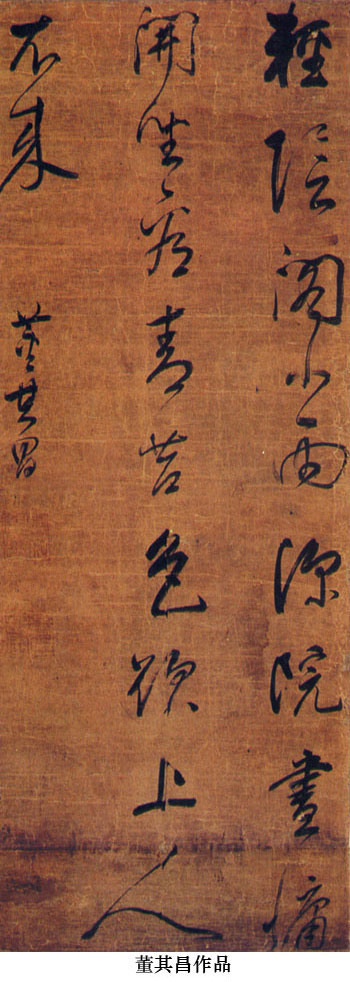
張瑞圖（１５７０～１６４１），字長公，號二水、果亭山人、平等居士、白毫庵主、白毫菴道者，福建晉江人，著有《白毫庵集》。歷任編修、禮部侍郎、尚書、太子太保、戶部尚書、武英殿大學士、太子太師中極殿大學士等，因為魏忠賢書寫生祠碑文入獄，後贖為民，潛居鄉里。他以行草為擅場，化用章草的筆法、結字，用筆橫撐豎戳，翻騰折帶，方硬斬截，結字奇詭生拙，展蹙夭矯。風格十分獨特。
黃道周（１５８５～１６４６），字玄度，亦作幼平、幼玄等，號石齋、史周、又螭、去道、石道人、闕下完人等，福建漳州人，著有《漳浦集》。歷任編修、右中允等，與魏忠賢集團展開鬥爭；南明時任禮部尚書、武英殿大學士，擁立唐王，組織抗清鬥爭，兵敗被俘，不屈就義。其政治品格和道德人格都堪稱典範，深受後人敬仰。他秉持儒家文藝觀念，視書法為學問中七八乘事，但仍很重視書法風格的提煉，強調應當以“遒媚為宗，加之渾深，不墜佻靡”。所以他的書法，小楷嚴勁剛硬，不假雕飾，極為樸茂。行草遠追鍾繇、二王，又揉入大量章草筆法字法，形成古拙生拗、抒塞磊落的氣質。
倪元璐（１５９３～１６４４），字玉汝，號鴻寶、玉如、園客等，浙江上虞人，著有《倪文正公集》。歷任編修、國子祭酒、戶部尚書、禮部尚書等，明亡自縊殉節。他與黃道周、王鐸同年進士，相約攻書，他主攻顏真卿，得其厚重茂密之致，但在具體的筆法結構上並不規規就範，而是大膽展開自己的建構：其筆法，固以中鋒圓轉為主，但在行筆時註重澀勢，又常以側切入筆、側鋒逆行，折處經常提筆分斷，形成斬截爽健的筆致；用墨似乎較濃，有蒼茫之致；結構非常強調疏密和斂縱的對比，欹倒蹙縮而不拘攣。整體效果蒼澀掘拗、仄逼複疊，後人評價為“新理異態尤多”。是一種極有內涵又有獨創精神的風格。

這三位書家，在章法上還形成了一個共同特色，即行疏、字密，單行之內上下字之間咬合穿插，而起伏跌宕，行與行之間寬闊疏遠，而相互呼應，同時配合墨色的濃淡、枯濕。如是，以底的空和靜，襯托出圖的密和動，形成強烈的視覺沖擊，與徐渭的滿天花雨式一樣，都是長軸大幅在章法安排上的重大突破。
上述諸家之外，晚明在行草書上有一定成績的書家還有邢侗、米萬鐘、王稺登、陳繼儒、陳洪綬等，前兩人與張瑞圖、董其昌合稱晚明四家，但成就相去甚遠，王稺登為吳門書派的後勁，但已經沒有開拓能力，陳洪綬主要是畫家，而能引畫法的結構經營方法入書法，在結構安排上時見匠心，是真正較有成就者。
此外還應該指出的是，晚明趙宧光博學好古，傾力篆書，著有多部著作，並在實踐上進行探索，雖然其“草篆”不足為訓，但對於清代複興篆隸，或許可以說是一個前導，值得註意。
公元１６４４年３月，李自成攻克北京，明亡。同年５月清兵進京，１０月順治帝遷都北京，清政府開始統治中國。
對於滿清的統治者來說，一方面必須壓制各種反抗，另一方面也必須盡快融會吸收漢族傳統文化，從而實現長久的統治。為此，清政府采取了兩項相反相成的文化政策：一是大興文字獄，以鉗制任何可能的文化反抗，二是主動地對傳統中國文化進行整理。而陷入異族統治下的知識分子，開始倡導通經致用，樸學逐漸興起。在樸學學風中成長的金石、考據學，讓人們重新發現了秦漢、北朝書法的藝術價值，從而形成清代書法發展的新格局。從這個意義上說，清代是我國書法史上的轉型和總結時期。
一、前期（順治至康熙年間）
清代前期，國勢初平，百廢待興，尚無力過多關心書法，因此這時期基本上延續的是晚明書風，大體可以看作三線發展：一是晚明行草書風的新發展，二是傳統書風，三是篆隸初興。
（一）延續晚明行草新書風的主要人物：王鐸、傅山、朱耷、許友等
這些書家，多數對晚明時期的行草新書風有切身的體會，有的（如王鐸）本身就是其中的主將；有的（如傅山）雖然主要生活在清初，但是國破家亡的傷痛，也使他們無法在一種悠遊清和的心境下從事藝術創作，因而對晚明新風有熱切的推崇。
王鐸（１５９２～１６５２），字覺斯，一字覺之，號嵩樵、十樵、石樵、癡庵、東è長、癡庵道人、雪山道人、二室山人、白雪道人、雲巖漫士、嵩淙道人、雷塘漁隱、蘭臺外史、煙潭漁叟、癡仙道人等，洛陽孟津（今河南孟津）人，生於明萬歷二十年，明天啟二年（１６２２）進士，官至南京禮部尚書。又為南明小朝廷的東閣大學士。１６４５年南京被破降清，順治間官授禮部尚書，加太子太保，享年６１歲。
王鐸學書推重古典，特別強調“宗晉”，認為“書未宗晉，終入野道”（《觀宋拓淳化帖》）。他一生堅持一種學習方法，“一日臨書一日應索請”，始終讓自己的藝術創作保持與古典之間不間斷的交流，所以傳世臨帖作品極多。但他的臨帖，常常大量摻入自己的意思加以改造，有些作品明顯是根據記憶而背臨的，因而有時其實就是一種自我的創造。同晚明的很多書家一樣，他在世時就將自己的一些作品刊刻成帖，匯集成書，其中著名的有《擬山園帖》、《瑯華館真跡帖》等。這種做法，大大提高了他的影響力。
王鐸楷書，主要淵源是唐，特別是顏柳兩家，但是不追求結構的工穩，而獨取其生拗古拙的一面，尤其愛用異體字、古體字以增強作品的歷史感，因而氣息古樸拗峭，在明末清初的楷書中別出一格。
他最有影響的是行草書，晉唐宋兼綜，融匯極廣泛，又有自己的鮮明特色。行書深得《集王聖教》和米芾的精神，在大幅式上縱橫馳騁，創造了獨特的形式和意味。其書點劃粗者，重似千鈞；細者既如遊絲，也筋力堅韌；有時用漲墨法，形成濃重的墨塊，宛如巨石，得厚重之致。結構茂密雄放，或緊結蹙縮，或開拓縱逸，跌宕多姿，無不如意。
他的草書點劃與使轉兼重，頓挫轉折，用意精到，因此脈絡清晰，但又絕不安排，總能以意驅筆、因字造型，故濃淡枯濕、隨手生發，疾遲衄挫、取次相從，大小、欹正、展蹙、依倚、起伏，無不能順勢調整，宛如宿構。
王鐸行草的章法極有特色，倪後瞻說他“以力為主，淋漓滿誌，所謂能解章法者也”。一般行距大、字距緊，行內因筆法和字形的複雜多變而呈現跌宕起伏的變化，如蜿蜒巨龍騰飛紙上，神妙夭矯，不可端倪，有氣貫長虹之勢，無輕媚流滑之弊，古韻今情，和合一體，令人目眩神馳、胸豁氣暢，開行草書的一種新境界。
王鐸書法的這種境界，得到了後人的大力推崇。倪後瞻指出：“北京及山東、西、秦、豫五省凡學書者，以為宗主。”吳德旋《初月樓論書隨筆》說：“明自嘉靖以後，士夫書無不可觀，以不習俗書故也。張果亭、王覺斯人品頹喪，而作字居然有北宋大家之風，豈得以其人廢之。”近代以來，更是馳名中外，日本人甚至推許為勝過王羲之，雖是過譽，但是可見他的影響。
傅山（１６０７～１６８４），原名鼎臣，字青竹，後改名山，字青主，一字仲仁，號僑山、嗇廬、公之它、真山、濁翁、石道人、老檗禪、僑黃老人、朱衣道人等，山西陽曲（今太原）人。他生性剛烈耿介，有義士之稱。雖自幼聰穎博學，但卻在晚明屢試不第。明亡後，曾秘密參與反清活動被捕，獲救後隱居不出。康熙十八年（１６７９）開博學鴻詞科網羅各地碩儒，他被當地政府強行送往北京，卻堅辭不入，終未應舉。其終於舊朝的行為雖有歷史局限，但剛直不阿的氣節還是為後人所稱頌的。他還是清初的重要學者，對先秦諸子的研究在清代學術史上有重要地位，同時長於醫術，尤精婦科。學問道德都為當時所重。
傅山工書，與其為人一樣，反對矯飾造作，“不信時，但於落筆時先萌一意，我要使此何如一勢。及成字後，與意之結構全乖，亦可知此中天倪，造作不得矣”（《字訓》），尤其不喜趙孟頫一路優美妍媚的風格，而崇尚拙樸率真的書風，有謂“寧拙毋巧，寧醜毋媚，寧支離毋輕滑，寧率真毋安排”（《作字示兒孫》），既可以說是晚明書風的理論總結，也對後來興起的篆隸有深遠的影響。他的實踐，楷書學顏真卿，得其厚密樸質；行草受王鐸影響，同時深研閣帖，易王鐸的方折為圓轉，更加重視點劃之間的纏繞盤旋，因而氣勢更加飽滿、風格更加恣肆。但是他學古不如王鐸全面深入，創作時又比王鐸率意，因而在技巧的豐富和嚴謹方面有所未逮。他同時也涉獵篆隸，雖然尚未得法，卻可謂清代複興篆隸的先驅。
朱耷（１６２６～１７０５）是明宗室、寧王朱權後裔。號雪個、雪衲、八大山人、個山、驢屋、人屋、何園、書年、驢漢、刃菴、破雲樵、驢屋驢等，明亡後為僧，以享名於世。他於書曾於黃庭堅用力甚勤，得其蹙伸欹側之妙，而增益以秀雅；又受董其昌影響，得其靈動秀美之致。６０歲前後開始，逐漸形成獨特的個人面目：用筆凝練如篆，泯去起收形態變化，代之以圓渾含蓄，行筆以中鋒圓勁、婉轉流動為主，不計提按粗細的變化。結構極重視疏密的對比，並常常因此造成字勢欹正、展蹙的諸多變化，從而進一步形成章法的跌宕起伏。形簡而勢滿，神清而意長，意境高遠，氣質渾穆，與其繪畫同一機杼，有很高的審美價值。
許友推重米芾，而實際上受王鐸影響最深，只是臨古功夫稍乏，故聊具其形，而意趣淺淡，頗涉粗俗。至此可以說，晚明行草新風已是強弩之末了。
（二）傳統行草書風的延續：董、趙書風的籠罩
這一風氣的形成，既是董其昌影響的自然延續所致，也與清初幾位皇帝的引導有關。康熙在位六十一年，酷愛董其昌書風；乾隆在位六十年，喜歡趙孟頫書風。由是，整個清朝前期的朝廷官員書法，多數都受董、趙書風的籠罩。
其中也出現過一些水平較高的書家如查士標、姜宸英、沈荃、孫嶽頒、查昇等。這些書家主要受董其昌風格影響，但因為學力或性情的限制，未能充分發揮董書的妍雅清逸，或過於拘謹，或過於軟弱，氣息上都不很高明，尤其是創造性相對王鐸、朱耷等人有較大的差距，所以雖然一時獲譽甚高，卻終究沒有開辟新境。
（三）篆隸書法
清初的篆隸，在晚明基礎上有一些進展，聲勢漸壯。除傅山外，善於隸書的還有戴易、鄭簠、王時敏、朱彜尊等，實績漸有可觀。
王時敏（１５９２-１６８０）,字遜之，號煙客等，江蘇太倉人。明末曾官太常寺少卿，明亡後不仕。善繪事，隸書點劃工整、結構沈穩，氣息淵靜古穆，頗有魄力。
鄭簠（１６２２-１６９３）,字汝器，號谷口，上元（今江蘇南京）人，是清代第一位專攻隸書的書家，終生未出仕，主業行醫。學漢隸垂３０年，得《鄭固》、《史晨》、《曹全》之意，又參以行草筆法，自成飄逸瀟灑的格局，後人認為他與朱彜尊是“漢隸之學複興”的首要功臣。
朱彜尊（１６２９-１７０９）,字錫鬯，號竹垞，秀水（今浙江嘉興）人。康熙時應博學鴻詞科，任翰林院檢討，撰修《明史》。他是清初重要的金石學家，隸書主要得力於《曹全》，臨習之功極深，能夠形神兼備地臨摹《曹全》而不受唐以後隸書的影響，非常難得，標誌著當時學者對於漢隸筆法的研究達到了新的高度。但是他自作時卻不能完全堅持《曹全》的規範，稍嫌板滯。
二、中期（雍正至道光年間）
乾隆、嘉慶前後，董、趙的影響漸弱，文人們向古代傳統的追尋逐步深入，這使得篆隸書法的複興步伐加快了，對晉唐宋元明傳統的學習範圍也大大擴展，由此成為兩股基本的力量。
（一）對晉唐宋元明傳統學習的深入
這一派書家有的仍以學習董、趙為主的，但更多的則是向宋、唐、晉的大師們取法，代表人物有王澍、張照、劉墉、梁同書、王文治、梁巘、翁方綱、錢灃、永瑆、鐵保等，其中翁、劉、梁（同書）、王有“清四家”之稱（亦有一種說法是翁、劉、成、鐵）。
劉墉（１７１９～１８０４），字崇如，號石庵、石菴、石盦、木菴、青原、香巖、勗齋、東武、溟華、日觀峰道人等，山東諸城人。他是乾隆年間的重臣，歷任翰林院編修、江蘇學政、內閣學士、湖南巡撫、左都禦史、工部尚書、上書房總師傅、吏部尚書、協辦大學士等職，嘉慶初官至體仁閣大學士、加太子少保，卒謚文清。著有《石庵詩集》。他的書法由董、趙入手，而後遍臨晉唐宋諸家，尤得力於蘇東坡、顏真卿和晉唐小楷，融會貫通，自成格局。其書點劃豐腴處短而厚、細勁處含而健，對比強烈；結字內斂拙樸，而決不擁塞，端重穩健中透出靈秀；章法輕重錯落，舒朗雍容。整體風格含蓄蘊籍，精氣內斂，渾若太極，貌端穆而氣清和，有碩儒老臣的持重，無恃才傲物的輕佻，似乎包有萬象而莫測高深，洵然可敬。因為喜用濃墨，時號為“濃墨宰相”。
王文治（１７３０～１８０２），字禹卿，號夢樓，江蘇丹徒（今鎮江）人。乾隆二十五年（１７６０）探花，曾任翰林侍讀等，以事被黜，執教各地書院。擅詩文，著有《快雨堂題跋》等。他的書法出於董其昌，上溯米芾、李北海，多用側鋒取妍，筆致翩翩，結構舒展秀逸，縱橫揮灑，以文人才士的佳致見長。因喜用淡墨，與劉墉恰成對照，故時稱他“淡墨探花”。
翁方綱（１７３３～１８１８），字正三，號忠敘、彜齋、覃谿、蘇齋等，北京大興人。他於乾隆十七年（１７５２）中進士，歷任翰林院編修、江西等地省試考官及廣東等地學政，官至內閣學士。他的主要活動也在乾隆年間，和劉墉齊名，但是主要精力都放在鑒賞、考證和題跋碑帖上。他是一位著作等身的學者，著有《兩漢金石記》、《粵東金石略》、《漢石經殘字考》、《焦山鼎銘考》、《廟堂碑唐本存字》、《蘇齋題跋》、《蘇米齋蘭亭考》等諸多著作。在書法學習上，翁方綱主張學習古人，強調每一字一筆都有來歷，一生致力於歐陽詢，嚴守法度，以精工為尚。其楷書，得歐陽詢的結實端謹，而乏其清新精巧；行書稍活潑，而仍然過於拘束，缺乏逸韻高情。嚴格地講，其金石研究比書法實踐影響更大。
總的來說，這些書家對於晉唐宋古典的學習，都各有自己的體會與長處，較之前期學董、宗趙書家的藝術視野都要開闊得多，因而藝術水準也明顯提高。但是都缺乏開宗立派、引領時代的能力與氣度，因而無法與晉唐宋元明的大師級人物相抗衡。
（二）對秦漢北朝傳統的重新發現與取法
在篆隸與北碑領域，情況卻有所不同。經過書家、學者的共同努力，篆隸的審美價值不斷得到深入的認識，許多傑出人才投身於此，從而使篆隸領域出現了巨大的飛躍和突破，對北碑的學習也開始起步。總體上看，對這一傳統的關註已成燎原之勢，形成了與晉唐宋元明傳統一翼足可抗衡的局面。
涉足這一領域的藝術家中，有不少畫家，如名列“揚州八怪”的鄭燮、金農、汪士慎等人，他們疏離於主流文化圈之外，而與市民階層有較密切的聯系，藝術思想、創作傾向帶有一定的叛逆性。在書法上，對晉唐以來傳統采取一種比較主動的反叛姿態，而對秦漢傳統則表現出極大的熱情，從而成為秦漢傳統複興的一批重要力量。
金農（１６８７～１７６３），字壽門，又字司農、吉金，號冬心、古泉、金牛、老丁、百研翁、恥春翁、壽道士、冬心先生、稽留山民、曲江外史、龍梭仙客、百二硯田富翁、昔邪居士、心出家盦粥飯僧等，浙江仁和（今杭州）人，著有《冬心先生集》、《冬心先生雜著》等。精詩詞、鑒賞，喜收藏，繪畫為一代宗師。於書專攻《華山碑》，後自出機杼，不受束縛，以倒薤法作撇，以方整寬闊筆作橫、細勁筆作豎，號稱“漆書”，古拙樸厚，時涉諧趣，形成極其強烈的個人風格，並由此衍生出獨具特色的行書和楷書。
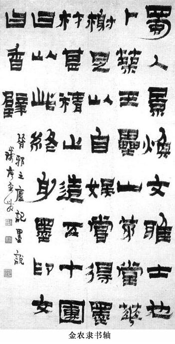
鄭燮（１６９３～１７６５），字克柔，號板橋、板橋道人、風子、樗散人、紅雪山樵等，江蘇興化人，著有《板橋全集》。他以畫竹著稱於世，又對傳統行草有相當的造詣，但因世人好奇，遂不滿於此，而有意以篆法、隸書、楷書與行草雜糅，自稱“六分半書”，這種探索精神當時即為他博得了很高聲譽，但是由於篆隸本身的複興並不充分，事實上融合篆隸楷行草於一體的時機並不成熟，因而板橋的作品，往往是一種偏於簡單的拼湊，無法深入到其精神實質，故總體上並不成功。但他的影響，對於人們重視篆隸的審美價值，仍然是有重要的推動作用的。
與“八怪”相先後的，還有一批精於篆刻或字學的藝術家，對篆隸進行了更加純粹同時也更加深入的探討鉆研，從而比較成功地使篆隸的生命力得到全新的激發。代表性書家有丁敬、黃易、錢坫、桂馥、鄧石如、伊秉綬等。特別是桂馥、鄧石如、伊秉綬，真正站到了歷史演變的制高點上，使秦漢傳統的複興進入了一個全新的境界。
丁敬（１６９５～１７６５），字敬身，號鈍丁、硯林、研林外史、梅農、丁居士、龍泓山人、孤雲石叟、勝怠老人、玩茶叟、玉幾翁等，浙江錢塘人，是一代著名印家，“浙派”的領袖，對篆隸有精深的研究。與篆刻別開天地不同，他在書法上相對中和平正，風格古樸雅致，得秦漢書法的簡凈精神。
錢坫（１７４４～１８０６），字獻之，號十蘭，嘉定人。在篆書方面極為自負，自詡二李之後一人，其篆書專攻鐵線，出規入矩，確有古人風範，晚年右手病廢，以左手作書，結構不能完全如意，然而卻增添了一種自然之致。就鐵線篆來說，錢坫確實是一代高手。
桂馥（１７３６～１８０５），一作（１７３３～１８０２），一名復，字未谷，一字冬卉，號雩門、老苔、老è、瀆井、瀆井複民、肅然山外史等，山東曲阜人。他博涉群書，一生精力萃於小學，著述宏富，為“說文四大家”之一，著《說文義證》。亦工詩書畫印，所輯《繆篆分韻》一書，為學習漢印之必備。尤以隸書為一代之雄，時人推許為直接漢人，甚至認為是百餘年來第一人，足以超唐越宋。其字用筆肥而不臃、深沈厚重，結字方嚴廣博、樸質端謹，氣勢雄偉渾穆、堂堂煌煌，確實可以說是深得漢人隸書醇古樸茂、博大飽滿的精蘊。只是稍有習氣，未能盡善。
鄧石如（１７４３～１８０５），初名琰，字石如，避嘉慶帝諱，以字行，改字頑伯，號完白、完白山人、古浣子、完白山民、遊道人、龍山樵長、鳳水漁長、笈遊道人等，安徽懷寧人。他生於鄉鄙，終生為布衣，但自幼即喜刻石，仿漢印頗工，至南京梅é家，居八年，遍臨所藏金石善本，由此而篆、隸、楷、印皆臻大成之境。乾隆五十五年入京，劉墉延為賓客，聲振當代名公。其篆書融秦漢於一爐，又出以隸筆，遂使篆法活脫生動，擺脫了鐵線的拘滯，不唯字形闊大磅礴，而且筆勢豐富多姿，墨色流溢燦然，大大拓展了篆書的藝術表現力。其隸書筆致健拔蒼勁，結體疏宕俊逸，用墨蒼古，亦可謂深入漢人堂奧。晚清書論名家包世臣、康有為、楊守敬等對他無不推崇備至，競相推許為國朝第一、集篆書大成等。這都是因為他成功地實現了兩大傳統的轉換，表明醞釀已久的秦漢北碑傳統的複興高潮的來臨和兩大傳統的對峙、融會的真正的開始。
伊秉綬（１７５４～１８１５），字組似，號墨卿、默庵、南泉、秋水，福建寧化人，著有《留春草堂集》。他能詩文、繪畫、治印，但以書法為最著名，工小楷，行書、楷書均宗顏真卿，通篆法，而以隸書為一代之雄。其隸書從《衡方》等碑化出，筆劃含凝厚重，波磔不顯，似有篆意，字形方整宏大，有顏真卿氣度，因而形成氣勢磅礴、拙樸茂密之格，有清一代，隸書渾厚一路，無出其右，康有為許為“集分書之成”，不為過譽。
三、晚期（鹹豐至清朝末年）
嘉慶、道光前後，阮元、包世臣倡興碑學，從理論上鼓吹秦漢北碑傳統在書法史和書法美學系統中的地位，使之成為一時顯學。但深入實踐的許多書家，並未完全舍彼取此，而是各取所長，自覺不自覺地尋求融合之道，使兩大傳統都獲得了新的發展契機。因此，晚清書家，大體可分作三類。
（一）以晉唐傳統為主的書家：林則徐、翁同龢等
林則徐（１７８５～１８５０），字少穆，一字無撫，號竢村老人，福建福州人。官至兩廣、雲貴總督，加太子少保，謚文忠。鴉片戰爭後曾被謫戍伊犁。書法出自歐、顏、二王和米芾，頗為清新穩健，唯稍受館閣習氣束縛。
翁同龢（１８３０-１９０４）,字叔平，號松禪、瓶廬居士等，江蘇常熟人。累官至軍機大臣兼總理各國事務衙門大臣等職，為同治、光緒兩朝帝師，在戊戌變法中被革職。他的書法出於翁方綱、錢南園，而上溯顏真卿、米芾，氣息淳厚，堂宇廣博，為晚清帖派書家的重鎮。
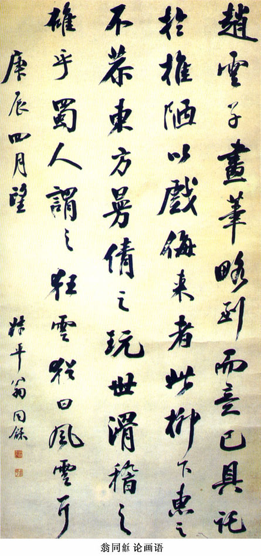
此外，晚清學人善於傳統行草的人數還是極多的，其中也不乏名聲不遠而水準甚佳的高手，如戴熙、郭嵩燾、曾國藩、王拯乃至李鴻章、張之洞等，都有相當的傳統書法造詣。
（二）以先秦秦漢北碑為主的書法家
這類書家比較多，前後有張廷濟、朱為弼、徐同柏、趙之琛、六舟達受、吳熙載、楊峴、張裕釗、吳大澂等。他們大多是集傳統經學、金石、書畫、辭章、考據、收藏研究於一身的學者型書法家。
張廷濟、朱為弼和徐同柏都善於金文大篆，他們三家可以看作清代學習先秦篆書比較有影響的先驅者，雖然他們的成就還不能算是很高深，特別是如何使用筆墨來表現大篆的氣息，應該說還沒有達到理想的效果。
趙之琛（１７８１～１８５２），字次閑，號獻父、獻甫、寶月山人等，浙江錢塘（今杭州）人。精六書，善繪山水、花卉，晚年常寫佛像，能篆隸行楷，工刻印，為陳豫鐘弟子。有《補羅迦室集》、《補羅迦室印譜》。曾為阮元摹刊鐘鼎款識，故精通大篆。他的大篆書，不像前人一樣描頭畫尾，而能夠舍棄形貌，獨取神理，用渾厚嚴整的筆法加以表現，筆墨比較自然生動，是清代大篆書中值得重視的一家。
吳熙載（１７９９～１８７０），初名廷é，字熙載，五十歲以後因避諱更字攘之，亦作讓之，以字行，號讓翁、攘翁、晚學居士、方竹丈人、言庵、言甫等，祖籍江寧，自父起移居儀征。工金石考證，能寫意花卉，精治印，平生治印逾萬，影響深廣，後之師鄧派者，多以吳氏為宗。著有《通鑒地理今釋稿》、《吳讓之印譜》等。書法從包世臣學習，由包氏得筆法，並指點學鄧門徑。篆刻篆隸，均能由鄧石如而上追秦漢，繼承發揚，赫然成家。書法以篆書為最佳，筆法婀娜而不失清剛，流麗而不失端雅，有文人清氣，是師鄧而能有所發展者。
張裕釗（１８２３～１８９４），字廉卿，號濂亭等，湖北武昌人。曾入曾國藩幕府，為曾氏弟子，但無意仕進，專意於學，為清末古文大家，後人編輯其文章為《濂亭文集》等。他的書法專師北碑，尤得力於《張猛龍》，而斂入規矩，自成體勢，結構謹嚴方正，筆法剛健勁拔，尤以外方內圓的獨特筆姿為人所稱賞，被康有為推許為“集碑學之成”，在近代中國和東瀛有廣泛的影響。但現在看來，雖然很有特色，而相對於北碑來說，精神有隔閡，並沒有抉得精華。
吳大澂（１８３５～１９０２），原名大淳，避帝諱而改，字止敬，又字清卿，號恒軒、愙齋等，江蘇吳縣（今蘇州）人。同治七年（１８６８）進士，累官至廣東、湖南巡撫。好集古精鑒別，是著名的金石學家，所得古器皆手自摩拓，工書畫篆刻，著有《愙齋集古錄》、《愙齋集古錄釋文謄稿》、《說文古籀補》、《恒軒吉金錄》、《古字說》、《古玉圖考》、《愙齋詩文集》等著作。他的篆書融會大小二篆，以大篆立其筋骨，以小篆斂其體裁，而筆墨又極其精煉，三美歸一，形成了堅勁緊韌的藝術風格，為篆書藝術開辟了一種新風格。

（三）兼宗兩大傳統並尋求融通的書家：何紹基、趙之謙、楊守敬、康有為等
何紹基（１７９９～１８７３），字子貞，號東洲居士，晚號蝯叟、猨臂翁，湖南道州（今道縣）人。道光十六年（１８３６）進士，歷任編修、國史館協修、總纂、提調等，曾主持福建、貴州、廣東鄉試，鹹豐間任職四川學政期間被黜，從此講學遊歷各地，晚年在揚州主持校勘《十三經註疏》。他是晚清著名的學者，精通儀禮、說文、漢書、詩詞以及書法，著有《說文段註駁正》、《東洲草堂金石跋》等。他的書法，早年從顏真卿入手，後來融會《道因法師碑》，精研數十年，深得其妙，以後又肆力於篆、隸以及北碑，無不用功深至，是以篆、隸、楷、行皆冠絕一世。又以絕大天分和匠心，探求各體精神的融會，因而其各體的面目，都與傳統的面目形成了很大的差異，然而又無不以傳統的面目為依歸，真可謂帖意碑神，草情篆韻，一體而兼收之，在中國書法史上開出了奇葩，為書法的未來發展拓出了一條嶄新的大道。
趙之謙（１８２９～１８８４），字撝叔，號悲庵，別署子欠、支自、鐵三、益甫、憨寮、冷君、無悶、梅庵等，浙江會稽（今紹興）人。鹹豐己未年（１８５９）舉人。歷官江西鄱陽、奉新、南城知縣。著作有《悲庵居士詩剩》、《補環宇訪碑錄》、《六朝別字記》等。他是一個多能的藝術家，篆刻、繪畫、書法皆一代大家。嘗稱“生平藝事皆天分高於人力，惟治印則天五人五，無間然”，可見其於印章用力之多且勤。趙氏以其特有的藝術藝術敏感和熔鑄能力，將彼時出土日多的古器物文字引入印作和邊款，風貌多樣，意趣清新，開印章的新天地。他的書法，初從顏真卿入，後專攻北碑，又得鄧石如篆隸之法，於是以北碑之法寫篆隸，進一步豐富了篆隸的筆法意趣。又由北碑化生行書，融鑄貫通，運用如意，神氣飛動，既饒有古樸厚重之意，更兼有帖的溫醇雅潔之韻。可惜他英年早逝，未能使意境更臻於成熟老到。
楊守敬（１８３９～１９１５），字惺吾，號鄰蘇老人，湖北宜都人。曾應駐日本公使黎庶昌之請前往日本協助輯刊《古逸叢書》，因此而收集了不少保留在日的古代文獻。他同時還在日本廣泛傳播書法，對日本近代以來書法的發展發生了重要的影響。他在理論上提倡碑與帖“合則兩美，離則兩傷”，是較早進行這種理論倡導的人物。在實踐上他也奉行不悖，行書學顏和蘇軾，以後參入北碑意趣；大篆已經直達西周；隸書註重筆情墨趣，老辣遲澀，結體妙善伸蹙，時有諧趣。
康有為（１８５８～１９２７），初名祖詒，字廣廈，號長素、更生、西樵山人等，廣東南海人，著有《康南海先生遺著匯刊》、《萬木草堂遺稿》、《萬木草堂遺稿外編》、《廣藝舟雙楫》等。康有為是碑學理論的健將，持論時有偏激之見，往往為人所詬病，但他自幼曾受過嚴格的傳統書法訓練，雖然以後專修北碑，但幼學基礎仍然未廢，結果無意中形成了碑帖融合的面目。前人多認為他的書法出自《石門銘》，實際上還有許多顏真卿行書的趣味。因此他的書作既有北碑的開張恣肆、篆隸書法的古樸雄渾，又有傳統行草的酣暢飛動，是篆隸北碑與傳統行草融會貫通比較成功的例子。
吳昌碩（１８４４～１９２７），初名劍虞、俊，又名俊卿，字香補，中年以後更字昌碩，以字行，亦署倉石、倉碩、蒼碩，號缶廬、老缶、缶道人、老蒼、苦鐵、大聾、石尊者、鄉阿姐、破荷亭長、五湖印å、削廬、蕪菁亭長等，浙江安吉人。晚年被推舉為西泠印社第一任社長，是晚清傑出的藝術家，詩書畫印皆自成家數，影響深遠。著有《缶廬集》。他既是清代書法的殿軍，又是近代書法的開山，他於篆、隸用功最多，尤其是《石鼓文》，終生浸淫，無一日或離，晚年變化筆墨，引入行草意趣，遂使筆情墨趣，流溢行間，篆書的複興，至他而達到一個新高度；行書以王鐸為宗，融入歐、米，又引入碑法之蒼勁渾樸，老辣生奇，使行書也重放光華。治印初習浙、皖，既而出入秦漢，借鑒封泥匋甓，融入寫意繪畫情趣，形成了斑駁高古、沈雄壯遒的新面，即作小印，也有尋丈之勢。治印還獨創修整印面和邊欄的法門。既雕既琢，複歸於樸，古今無二。吳昌碩的成就，是清中期以來兩大傳統深入融會的碩果，標誌著清人重理古典的工作取得了圓滿的成功，為近現代書法的發展，奠定了非常堅實的基礎。
在經歷了漫長而輝煌的發展後，隨著中國社會陷入戰亂頻仍的近現代，書法也曾經一度受到過強烈的沖擊，經受了風雨的考驗。現在，她又迎來了複興的機會，不僅在全國出現了持續多年的熱潮，而且影響及於世界。我們回顧歷史，展望未來，應該更加熱愛她，更加為她而努力工作，使她得到更輝煌的發展。